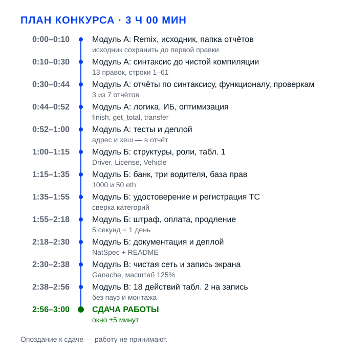
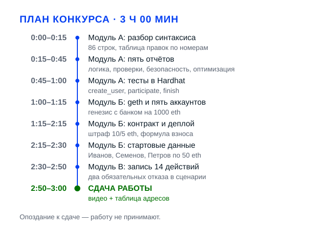
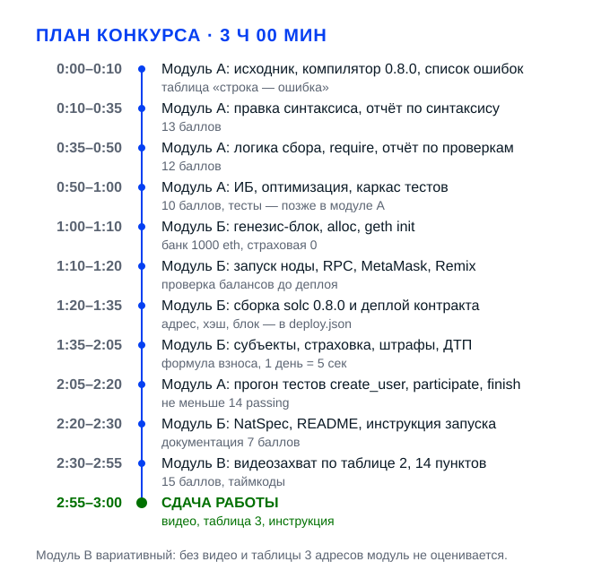

Блокчейн-технологии (Р)
Задания ниже — официальные файлы «Абилимпикс» (источник: abilympics-russia.ru), разложенные по категориям. Решения написаны по тексту задания, регламенту и критериям оценки; в них указано, что именно проверяет эксперт.
Школьник
14–16 лет, базовый уровень заданияВыдержка из официального конкурсного задания: страницы, относящиеся к категории «Школьник» (стр. 5–11 источника).
Пошаговое решение
Три модуля за три часа: час на аналитику чужого контракта (46 баллов из 100), полтора часа на собственный контракт «Безопасное дорожное движение» (36 баллов) и полчаса на видео с демонстрацией (18 баллов). Модуль А — самый дорогой и самый недооценённый: вам дают код на 86 строк, в котором нужно найти ошибки трёх уровней и написать по ним семь отдельных отчётов, и половину баллов ставят не за исправления, а за то, что каждое исправление описано с номером строки и причиной. Модуль Б — контракт с двумя ролями, семью удостоверениями из табл. 1 и штрафом 10 eth, который в первые пять дней стоит 5 eth, причём один день равен пяти секундам реального времени. Модуль В — видеозахват экрана по таблице из 18 действий и таблица адресов. Идите строго по модулям: в модуле Б вы переиспользуете то, что нашли в модуле А, а на видео попадает только то, что реально работает.

Задача 1. Разобрать и починить чужой контрактМодуль А · 46 баллов
Перед вами контракт Contract на 86 строк — прототип краудфандинга: пользователь регистрируется по логину, создаёт сбор пожертвований, участники вносят деньги, а создатель сбора в конце забирает сумму или возвращает её участникам. В коде намеренно оставлены ошибки трёх уровней: синтаксические (не компилируется), логические (собирается, но считает неверно) и уязвимости (работает, но позволяет забрать деньги не тому). За час нужно пройти путь от красной панели компилятора до задеплоенного и покрытого тестами контракта, и на каждом шаге оставить письменный след: баллы модуля дают в первую очередь семь отчётов, а не сам исправленный код.
Действие 1.1. Развернуть рабочее место и зафиксировать исходник
Шаг 1.1.1
Открываем remix.ethereum.org в Firefox или Chrome, в панели File Explorer создаём новый файл Contract.sol и вставляем код из конкурсного задания целиком — с первой строки pragma и до закрывающей скобки на 86-й строке, ничего не переформатируя. Сразу сохраняем вторую копию под именем Contract_original.sol: через час вы уже не восстановите, что стояло в строке 15 до правки, а сверять отчёт придётся с исходником. Рядом заводим четыре текстовых файла: report_syntax.txt, report_logic.txt, report_security.txt и test_notes.txt.
КЗ требует отчёт с указанием строки и внесённого изменения, а не просто рабочий код, поэтому исходник — такой же инструмент, как компилятор. Эксперт открывает ваш файл и сравнивает его с кодом из задания: если исходник не сохранён, вы правите по памяти и не можете доказать, что нашли именно ту ошибку, которую заложили авторы. Копия нужна и для откатов: любое исправление можно перепроверить, не переписывая файл заново.
В File Explorer видно два файла — Contract_original.sol и Contract.sol — и четыре отчёта. Откройте исходник и сверьте нумерацию с КЗ: строка 8 — mapping(string >> address), строка 23 — adr_to.transfering(...), строка 84 — status = false. Если номера съехали, редактор склеил пустые строки.
Скопировать код без сохранения исходника: уже на второй правке вы не помните, что было в строке 38, и отчёт пишется «по смыслу». Вторая ошибка — вести все отчёты в одном файле вперемешку: потом невозможно отделить синтаксис от логики, а КЗ требует семь разных отчётов, и каждый оценивается отдельно.
Эксперт открывает папку участника в начале оценивания и сверяет наличие отчётов с перечнем из КЗ: семь пунктов — семь файлов. Отсутствие отчёта не компенсируется исправленным кодом, даже если контракт работает.
Шаг 1.1.2
Нажимаем Compile в панели Solidity Compiler и переносим в report_syntax.txt список ошибок как есть: номер строки, код ошибки (ParserError, TypeError, DeclarationError), текст. Это базовая линия — то, от чего вы будете отчитываться. В таблицу сразу добавляем колонку «что сделано», но пока оставляем её пустой: заполнять будете по мере правок, чтобы не потерять ни одной строки из первичного списка.
Первичный список ошибок — это готовый каркас отчёта по синтаксису, и он экономит минут десять из шестидесяти: компилятор уже назвал строки, вам остаётся объяснить причину и решение. Кроме того, он показывает масштаб: если в списке 20 ошибок, а вы нашли 12, значит часть правок вводит новые, и это надо увидеть до деплоя.
В report_syntax.txt не меньше десяти строк, и каждая ссылается на конкретный номер. После каждой правки вы снова нажимаете Compile и вычёркиваете исчезнувшие ошибки: так видно, что ни одна не «сменила адрес», а действительно исчезла.
Править код без базового списка и потом восстанавливать ошибки по памяти: половина строк в отчёте окажется выдуманной, а эксперт сверяет их с диффом. Вторая ошибка — копировать только первую ошибку, потому что редактор показывает одну за раз: остальные всплывут позже и снова остановят компиляцию.
Смотрит на отчёт по синтаксису в первую очередь, потому что это единственный артефакт модуля, который можно проверить формально: строка — правка — причина. Список без номеров строк он не засчитывает.
Шаг 1.1.3
Переключаем Environment на Remix VM или Injected Provider с Ganache и записываем в test_notes.txt адреса первых шести аккаунтов вместе с их балансами. Эти шесть адресов — банк, ДПС и четыре водителя из будущего модуля Б, и они же понадобятся для тестов create_user, participate и finish: на одном аккаунте нельзя проверить ни взнос, ни возврат. Баланс фиксируем до деплоя, чтобы потом отличать изменение от исходного.
Тесты без нескольких аккаунтов физически не проходят: participate вызывается с одного адреса, finish — с другого, а проверка повторной регистрации требует третьего. Если записать адреса заранее, вы не будете в середине теста искать, с какого аккаунта что вызывали, — а на 60 минут модуля такие поиски стоят дороже, чем кажется.
В test_notes.txt шесть адресов по 40 hex-символов и шесть балансов. В Remix в поле Account список переключается без ошибок, а баланс каждого аккаунта больше нуля: на нулевом балансе не пройдёт ни один payable-вызов.
Работать на одном аккаунте: test на повторную регистрацию логина пройдёт, а тест на взнос упадёт с невнятной ошибкой, и вы начнёте править рабочий код. Вторая ошибка — не записать балансы: после деплоя и десяти вызовов невозможно понять, вернулись ли деньги участнику.
Наблюдает, как участник переключает аккаунты в Remix: путаница с адресами видна сразу и стоит времени, которого в модуле А нет. Отдельно отмечает, есть ли у участника заготовленный список аккаунтов.
Действие 1.2. Исправить синтаксис до чистой компиляции
Шаг 1.2.1
Меняем первую строку: вместо pragma solidity >0.5.0; пишем pragma solidity 0.8.0;, потому что КЗ прямо указывает компилятор версии 0.8.0, а открытый диапазон >0.5.0 соберётся и на 0.6, и на 0.7 с другими правилами арифметики. Затем правим строку 10: address root = msg.sender; — в 0.8 обращение к msg.sender в инициализаторе переменной состояния запрещено, поэтому объявляем address public root; и присваиваем значение в конструкторе: constructor() { root = msg.sender; }.
Версия в pragma — не формальность: на 0.8 арифметика проверяется на переполнение, а явное приведение payable(address) стало обязательным. Если оставить открытый диапазон, Remix может подставить 0.7.x, и часть ваших же правок перестанет собираться, а вы потратите время на поиск несуществующей проблемы. Строка 10 относится к ошибкам, которые блокируют деплой, то есть весь остаток модуля.
В панели Solidity Compiler выбран 0.8.0, в списке ошибок строки 10 больше нет. В файле ровно один address root, конструктор стоит внутри contract Contract, а не снаружи, и компилятор не ругается на «Variable declaration not allowed here».
Удалить root вместо переноса в конструктор: код соберётся, но в отчёте по функционалу нечего сказать про владельца, а в отчёте по ИБ вы пропустите главную претензию — переменная объявлена и нигде не используется для ограничения доступа. Вторая ошибка — оставить >0.5.0 и удивляться, что payable(...).transfer не собирается.
Смотрит на версию компилятора в момент деплоя: несовпадение с 0.8.0 из КЗ отмечается отдельно, потому что от него зависит поведение всего остального кода.
Шаг 1.2.2
Правим три строки подряд. В строках 8 и 9 двойной знак «больше» заменяем на стрелку: mapping(string => address) public logins; и mapping(address => User) public users;. В строке 14 обращаемся к маппингу по его имени: logins[login] = msg.sender;, а не login[login]. В строке 15 приводим порядок аргументов к объявлению структуры User, где сначала balance, потом login: users[msg.sender] = User(msg.sender.balance, login);.
Это самый дешёвый блок исправлений по соотношению «время — баллы»: четыре правки за две минуты, и каждая попадает в отчёт по синтаксису с точной строкой. Ошибка в строке 15 вдобавок логическая: в поле balance уезжает строка ФИО, а компилятор 0.8 такое не пропустит, потому что string в uint не приводится даже неявно.
После компиляции нет ошибок ParserError на строках 8 и 9 и TypeError на строках 14 и 15. Наведите курсор на logins и users: всплывающая подсказка показывает типы mapping(string => address) и mapping(address => User) — значит, объявление прочитано правильно.
Заменить >> на => только в одном маппинге: вторая ошибка остаётся и валит весь контракт, а сообщение указывает на уже найденную строку — вы теряете время на повторный поиск. Вторая ошибка — оставить User(FIO, msg.sender.balance, login) из трёх аргументов: в структуре два поля, компилятор выдаст «Too many arguments».
Проверяет, что в отчёте по синтаксису строка 14 объяснена как обращение к маппингу, а не как «опечатка»: разница между опечаткой и неверным именем переменной — это разница между заучиванием и пониманием.
Шаг 1.2.3
В строке 23 у функции transfering нет ни в одном стандарте Solidity: заменяем на adr_to.transfer(msg.value); — переводим сумму, приложенную к вызову, а не адрес отправителя. В строке 38 объявление Donation donation; превращаем в массив Donation[] public donation;, иначе не скомпилируются donation.push и donation.length. В строках 41 и 42 вместо неинициализированных address[] memory sender; и uint value; пишем address[] memory sender = new address[](0); и uint[] memory value = new uint[](0); — тип второго обязан быть массивом, как в структуре.
Три правки закрывают три разных класса ошибок: несуществующий метод, обращение к push у не-массива и несовпадение типа при вызове конструктора структуры. Без массива donation весь блок сборов не работает, а это половина функционала контракта — то есть половина отчёта по функционалу и половина демонстрации.
Компилятор не выдаёт «Member transfering not found», «Member push not found» и «Invalid type for argument in function call». После деплоя у donation в панели Deployed Contracts есть кнопка с индексом — признак массива, а не одиночной структуры.
Оставить Donation donation и убрать push, присваивая структуру напрямую: код соберётся, но второй сбор перезапишет первый, и логика множественных сборов развалится — а в отчёте по логике вы этого не заметите, потому что ошибка ушла из поля зрения компилятора.
Сверяет строку 38 с исходником: замена одиночной структуры на массив — единственное место, где приходится менять объявление, не трогая саму структуру, и это ровно то, что запрещено и разрешено КЗ одновременно.
Шаг 1.2.4
В строке 60 у функции стоит return(uint) — правильное ключевое слово returns, поэтому пишем function get_donation_number() public view returns (uint). В строке 61 длина массива в Solidity называется length, а не len: return donation.length;. В строке 57 возвращаем поле info вместо несуществующего data: donation[donation_id].info — третьим элементом кортежа. После этих трёх правок снова нажимаем Compile и добиваемся зелёной галочки.
Пока контракт не компилируется, его нельзя ни задеплоить, ни покрыть тестами, а без деплоя не выполняется третий пункт модуля А — публикация контракта в сети. Зелёная компиляция — это точка, после которой начинается работа, приносящая баллы, и затягивать до неё нельзя: на весь модуль 60 минут.
В панели компилятора зелёная галочка и надпись compilation successful, в предупреждениях нет упоминаний несуществующих членов структур. Функция get_donation_number видна в списке и помечена как view returns uint256.
Запускать тесты до чистой компиляции и править код по сообщениям раннера: они ссылаются на несуществующие функции и уводят в сторону. Вторая ошибка — оставить в отчёте строки, которые в итоге исправлены иначе: эксперт сверяет отчёт с кодом построчно, и расхождение читается как выдумка.
Фиксирует момент, когда контракт впервые собрался: если это произошло после 30-й минуты, дальше участник почти наверняка не успевает тесты, и это видно по хронометражу.
Действие 1.3. Собрать отчёты по синтаксису, функционалу и проверкам
Шаг 1.3.1
Собираем report_syntax.txt таблицей из четырёх колонок: номер строки, фрагмент «было», фрагмент «стало», причина. В таблицу идут все правки из действий 1.2 — строки 1, 8, 9, 10, 14, 15, 23, 38, 41, 42, 57, 60, 61. Причину пишем механизмом, а не оценкой: у строки 8 — «оператор маппинга в Solidity это =>, а >> означает побитовый сдвиг»; у строки 10 — «msg.sender недоступен в инициализаторе переменной состояния, значение задаётся в конструкторе».
Отчёт по синтаксису — отдельный пункт перечня из КЗ, и его оценивают по полноте и по качеству объяснений: строка без причины читается как угадывание. Эксперт сравнивает ваш список с диффом исходника, поэтому любая правка, не попавшая в таблицу, выглядит как необъяснённое изменение чужого кода, а это уже вопрос доверия ко всей работе.
Число строк в таблице совпадает с числом изменённых строк в редакторе: откройте оба файла рядом и пройдите сверху вниз. Ни одна строка отчёта не ссылается на код, который в итоге остался прежним, и ни одна правка из кода не пропущена.
Написать «исправлены синтаксические ошибки в маппингах» без номеров строк: такой отчёт не принимается, потому что КЗ требует привязку к строке. Вторая ошибка — указать строку 13 вместо 14 для logins[login], сдвинув нумерацию из-за пустых строк и потеряв весь список.
Читает отчёт по синтаксису первым и сверяет три-четыре строки наугад с кодом. Если хоть одна не совпадает, он проверяет остальные внимательнее — и это отнимает баллы за аккуратность.
Шаг 1.3.2
Описываем каждую функцию в порядке появления в файле, по одной-две фразы: create_user — регистрация по логину с проверкой уникальности; get_balance — чтение баланса из структуры; send_money — перевод приложенной суммы на указанный адрес; ask_to_donate — создание сбора с целью, дедлайном и описанием; participate — взнос в сбор; три get-функции — чтение карточки сбора, списков участников и сумм; get_total — сумма взносов; finish — закрытие сбора и распределение денег. Отдельной строкой отмечаем, что FIO в create_user принимается, но никуда не сохраняется.
Функционал — второй отчёт из перечня, и он проверяет, понимаете ли вы код, который починили. Здесь же удобно зафиксировать расхождение между названием параметра и его судьбой: именно такие наблюдения отличают разбор от пересказа, а баллы за отчёт идут в те же 46 модуля А.
В отчёте ровно десять функций — столько же, сколько в контракте; сверьте по списку в Deployed Contracts. У каждой указано, меняет ли она состояние (public, public payable) или только читает (view), и нет ли функции, которую вы описали дважды под разными именами.
Описать функционал общими словами «контракт для сбора пожертвований»: эксперту нужен перечень функций, иначе пункт считается незакрытым. Вторая ошибка — перепутать get_donation и get_donation_2: первая отдаёт карточку сбора, вторая — списки участников и сумм, и это два разных отчёта.
Просит назвать любую функцию и объяснить её назначение вслух: отчёт по функционалу он проверяет выборочно, но по ответу сразу видно, писался он по коду или по названиям.
Шаг 1.3.3
Находим в коде пять мест с заглушкой из подчёркиваний — строки 13, 47, 48, 73, 74 — и предлагаем текст для каждого. Строка 13: «Логин уже зарегистрирован». Строка 47: «Сбор уже закрыт». Строка 48: «Взнос должен быть больше нуля». Строка 73: «Закрыть сбор может только его создатель». Строка 74: «Сбор уже закрыт». Формулировки держим короче 40 символов, потому что каждая строка сообщения попадает в байткод и хранится в блокчейне навсегда.
Отчёт по проверкам — отдельный пункт КЗ, и он показывает, понимаете ли вы, что именно проверяет require. Сообщение должно объяснять причину отказа пользователю, а не констатировать факт: «Сбор уже закрыт» говорит и о том, что дальше делать нечего, а «Ошибка» не говорит ничего. Длина важна и технически: длинные строки дороже в газе, и это же замечание пригодится в отчёте по оптимизации.
Пять заполненных require, и каждое сообщение соответствует своему условию: если условие про статус — сообщение про закрытый сбор, если про адрес — про права. Прогоните пары «условие — текст» глазами: ни одно сообщение не противоречит проверке, рядом с которой стоит.
Оставить заглушки или вписать одинаковый текст во все пять require: пользователь не поймёт, что не так, а эксперт увидит, что проверки не осмыслены. Вторая ошибка — написать сообщение длиной в две строки: лишний газ и лишний повод для замечания в отчёте по оптимизации.
Сравнивает тексты сообщений с условиями require построчно — это быстрый способ понять, читал ли участник код или расставлял фразы наугад. Он выбирает одну строку и спрашивает, почему выбрано именно такое слово, и по ответу видит, осмыслены проверки или взяты наугад.
Действие 1.4. Найти логические ошибки, которые компилятор не видит
Шаг 1.4.1
Открываем строку 67: там total = donation[donation_id].value[i]; — на каждом проходе цикла сумма заменяется последним взносом вместо накопления. Меняем на total += donation[donation_id].value[i];. Затем проверяем функцию на числах: три взноса по 2, 3 и 5 eth должны дать 10 eth, а не 5. Результат обязательно смотрим в Remix, а не в голове: get_total отдаёт wei, и в консоли должно быть 10000000000000000000.
Это первая логическая ошибка, которую компилятор пропускает молча, и от неё зависит всё: get_total вызывается внутри finish, где сумма сравнивается с целью сбора. С неверной суммой сбор никогда не считается состоявшимся, деньги уходят не туда, и одна строка ломает экономику всего контракта — поэтому в отчёте по логике она идёт первой.
На чистом контракте создайте сбор с целью 10 eth, внесите 2, 3 и 5 eth с трёх аккаунтов и вызовите get_total(0): возвращается 10 eth в wei. До правки вернулось бы 5 eth — это легко воспроизвести на копии исходника и показать в отчёте.
Поменять = на +=, но объявить total внутри цикла: сумма обнуляется на каждом проходе, и результат остаётся неверным при внешне правильной записи. Вторая ошибка — записать в отчёт «исправлено», не проверив число: на защите первый же вопрос про сумму вскроет, что проверки не было.
Просит показать get_total на конкретных числах: это самый быстрый тест на то, проверял ли участник логику запуском или только читал код. Если сумму называют по памяти, а не по выводу в консоли, эксперт просит повторить вызов при нём.
Шаг 1.4.2
В строке 76 условие if (total ** 2 >= donation[donation_id].amount) сравнивает с целью квадрат суммы — при взносах больше 3 eth сбор закрывается досрочно. Меняем на total >= amount. В строке 80 цикл возврата написан с обратным условием for (uint i = 0; i > value.length; i++), он не выполнится ни разу: ставим i <. В строке 84 статус после закрытия выставляется в false — меняем на true, иначе сбор закрывается повторно и деньги забираются дважды.
Три ошибки в одной функции дают три разных последствия: квадрат ломает порог, обратное условие оставляет участников без возврата, а status = false открывает повторный вызов finish. Вместе они превращают функцию в способ вывести деньги из контракта, и в отчёте по логике это главный пункт — внутри модуля А он весит больше остальных.
Создайте сбор с целью 10 eth, внесите 3 eth, вызовите finish с аккаунта создателя: деньги возвращаются участнику, а status становится true. Повторный вызов finish падает с вашим сообщением «Сбор уже закрыт», и баланс не меняется.
Оставить status = false и не проверить повторный вызов: контракт выглядит рабочим, но второй finish опустошает баланс — на демонстрации это провал модуля, а не минус балл. Вторая ошибка — исправить знак в цикле, но не поменять сравнение: цикл пойдёт, но распределит деньги не тем.
Прогоняет finish дважды подряд при проверке: повторный успешный вызов — самый очевидный признак того, что ошибку со статусом не нашли. Второй вопрос — про возврат денег участникам при недостигнутой цели: он смотрит, открывали ли вы ветку else вообще.
Шаг 1.4.3
Проходим по остальным функциям и фиксируем то, что не ломает компиляцию: create_user не проверяет пустой логин и не сохраняет ФИО; ask_to_donate принимает дедлайн в прошлом; participate не сверяет текущее время с дедлайном; finish не проверяет, что дедлайн уже прошёл. В отчёте по логике на каждую ошибку пишем строку, последствие и предложение — например, добавить require(bytes(login).length > 0) и сравнение block.timestamp с deadline в participate и finish.
КЗ просит не только найти ошибки, но и предложить их устранение, а это два разных пункта оценки. Ошибки с дедлайном выглядят безобидно, пока не представить сценарий: сбор закрывают за день до срока, и участники теряют возможность внести взнос, хотя им обещали месяц. Именно такие примеры отличают разбор от списка найденных опечаток.
В отчёте по логике минимум шесть ошибок: три из finish и get_total и три из вашего собственного поиска. Каждая строка содержит номер строки в исходнике, последствие и предлагаемую правку, и ни одна правка не меняет описание структуры — КЗ это прямо запрещает.
Ограничиться тремя ошибками из finish: работоспособности хватит, а полноты отчёта нет, и баллы за неё теряются. Вторая ошибка — предложить правку через изменение структуры Donation: это нарушение условия задания, и пункт обнуляется.
Читает отчёт по логике целиком и проверяет, что предложения не противоречат запрету менять структуры. Одно такое предложение ставит под сомнение весь отчёт.
Действие 1.5. Написать отчёты по информационной безопасности и оптимизации
Шаг 1.5.1
В report_security.txt разбираем способ отправки денег: transfer даёт получателю 2300 газа и на 0.8 падает, если получатель — контракт с более тяжёлым fallback. Предлагаем call с проверкой результата: (bool ok, ) = payable(addr).call{value: amount}(пустые данные); require(ok, «Перевод не выполнен»);. Отдельным пунктом — порядок операций: в finish статус меняется после перевода, поэтому получатель может вызвать finish повторно из своего fallback.
Вопрос «почему не transfer» — классический на этой компетенции, и он приносит баллы в двух отчётах сразу: в ИБ как уязвимость и в оптимизации как расход газа. Reentrancy здесь настоящая, потому что статус выставляется последней строкой, а внешний вызов стоит раньше — это ровно та схема, которую разбирают в учебных примерах про вывод средств.
В отчёте есть три вещи: чем плох transfer, как выглядит безопасный call с проверкой ok и почему смена статуса должна идти до перевода. Формулировка проверяемая: по вашему тексту другой человек может внести правку в код, не задавая вопросов.
Написать «использовать transfer безопаснее» — это обратное верное, и эксперт это отметит. Вторая ошибка — предложить call без проверки возвращаемого значения: неудавшийся перевод пройдёт молча, и статус закроется при неотправленных деньгах.
Задаёт вопрос про transfer и call почти всегда: ответ показывает, читал ли участник документацию 0.8 или повторял заученную фразу про безопасность. Дальше он спрашивает про порядок операций в finish, и этот ответ отличает тех, кто понял reentrancy, от тех, кто выучил слово.
Шаг 1.5.2
Дописываем в тот же отчёт четыре пункта: переменная root объявлена, но нигде не используется, поэтому любую функцию может вызвать любой; donation_id не проверяется на существование, и обращение к несуществующему индексу даёт revert без сообщения; в цикле get_total нет ограничения на число участников, поэтому сбор с тысячей взносов не прочитается за разумный газ; события не эмитятся ни в одной функции, и историю изменений по журналу не восстановить.
Это четыре разные уязвимости, и каждая проверяется отдельно. Отсутствие проверки границ — самая частая причина необъяснимых падений на демонстрации, а отсутствие событий лишает смысла саму идею блокчейна: состояние меняется, но доказательства изменения нет. За перечень с последствиями дают больше, чем за один подробно разобранный пункт.
На каждый пункт есть строка кода, к которой он относится, и описание последствия. Проверьте, что вы не повторяете то, что уже написали про transfer и reentrancy: дубли в отчёте читаются как вода и снижают доверие к остальному.
Свалить всё в одну фразу «контракт небезопасен»: такой отчёт не засчитывают. Вторая ошибка — предложить модификатор onlyRoot, не заметив, что root после правки строки 10 инициализируется в конструкторе и равен адресу деплоя, то есть права есть только у одного человека, и это тоже надо оговорить.
Проверяет отчёт по ИБ на конкретность: принимает пункт, только если в нём есть строка, последствие и предложение. Общие слова он пропускает и считает пункт незакрытым.
Шаг 1.5.3
Пишем отдельный блок «оптимизация»: три поля структуры Donation можно упаковать в один слот памяти (uint96 amount, uint32 deadline, bool status), строку name вынести за пределы структуры в отдельный маппинг, а цикл в get_total заменить накоплением в поле total при каждом participate. Отдельно отмечаем, что public у массива donation создаёт геттер на каждый индекс и удорожает деплой.
Оптимизация — самостоятельный пункт перечня, и он оценивается по конкретности: «уменьшить газ» без указания, что и на сколько, не считается. Упаковка полей и накопление суммы — два приёма, которые эксперт ожидает увидеть, потому что они прямо следуют из структуры, которую менять нельзя, и обойти запрет можно только аккуратно.
Каждое предложение можно применить, не меняя объявление структуры: либо через отдельные маппинги, либо через изменение функций. В отчёте нет предложений вида «переписать на ассемблере» без обоснования и без оценки выигрыша.
Предложить изменить struct Donation — КЗ запрещает это прямым текстом, и такое предложение обнуляет пункт. Вторая ошибка — считать экономией удаление require: проверки стоят газа, но их отсутствие стоит денег пользователей и баллов за ИБ.
Сравнивает предложения по оптимизации с запретом из КЗ: любое изменение структур отмечается как нарушение, даже если идея технически верная. Засчитывает только те пункты, где сказано, какое поле куда упаковывается и сколько слотов экономится.
Действие 1.6. Написать тесты и опубликовать контракт
Шаг 1.6.1
Создаём в Remix файл Contract_test.sol и пишем тест на create_user: успешная регистрация нового логина (после вызова logins[«ivan»] равен адресу вызывающего), повторная регистрация того же логина с ожидаемым revert и регистрация с пустым логином, если вы добавили эту проверку. Для реверта используем try/catch или хелпер shouldFail, который ловит откат и считает его успехом теста.
КЗ прямо перечисляет три функции, которые нужно покрыть тестами: create_user, participate и finish. Тест на успех показывает, что функция работает, а тест на отказ — что проверка на месте: без второго теста вы не докажете, что require вообще срабатывает, и на защите этот вопрос задают почти всегда.
В консоли Remix по каждому тесту зелёная галочка или осмысленное сообщение. Тест на дубль логина падает, если закомментировать require в строке 13, — это и есть доказательство, что тест проверяет именно проверку, а не что-то рядом.
Написать только позитивный тест: он пройдёт и на контракте без единого require, то есть не доказывает ничего, а время съедает. Вторая ошибка — сравнивать адреса строками без приведения к нижнему регистру: checksum-адрес в другом регистре даст ложное падение теста.
Смотрит, есть ли в тестах сценарии отказа: по одному только позитивному тесту видно, что участник не проверял, работают ли его require. Отдельно просит показать тест, который падает при удалении проверки, — это единственное доказательство, что тест живой.
Шаг 1.6.2
Тест participate строим на трёх вызовах: создаём сбор через ask_to_donate с целью 10 eth и дедлайном в будущем, вносим 2 eth с одного аккаунта и проверяем, что в массиве value появился элемент 2000000000000000000, а в sender — адрес участника. Третий вызов — participate с msg.value = 0, ожидаем revert «Взнос должен быть больше нуля». Функция payable, поэтому сумму передаём в поле Value, а в аргументах её не видно.
Именно здесь проверяется, что динамические массивы внутри структуры заполняются правильно: после правки строк 41 и 42 это самая хрупкая часть контракта. Тест с нулевым взносом закрывает require из строки 48, а без него нулевой взнос проходит, ломает расчёт суммы и искажает результат finish.
После двух успешных вызовов get_donation_2(0) возвращает массивы длиной 2 и 2, а после третьего, отклонённого, длина не меняется. Числа в wei совпадают с отправленными до последней цифры — сравнение идёт по точному значению, а не «примерно».
Тестировать participate на сборе с дедлайном в прошлом: если вы добавили проверку времени, тест упадёт по неверной причине и вы начнёте править рабочий код. Вторая ошибка — ждать msg.value в параметрах функции: он приходит из поля Value в Remix и в аргументах не виден.
Смотрит, проверены ли оба массива — sender и value. Тест только по сумме пропускает ошибку, при которой адрес участника не записан, а деньги приняты; он просит показать оба геттера и сравнить длины массивов.
Шаг 1.6.3
Тест finish проверяет три исхода. Первый: сбор с целью 10 eth собрал 12 eth — после finish баланс создателя вырос на 12 eth, status стал true. Второй: собрал 4 eth — деньги вернулись участникам, у каждого на балансе ровно столько, сколько он внёс. Третий: повторный finish отклоняется с «Сбор уже закрыт», и балансы не меняются. Четвёртый прогон — finish с аккаунта, который сбор не создавал: ожидаем отказ по правам.
finish — функция, где сходятся все найденные ошибки: сумма из get_total, знак сравнения, направление цикла и статус. Один тест на успешный сбор и один на провальный закрывают обе ветки if/else, а тест на повторный вызов доказывает, что вы действительно починили status = false, а не только написали об этом в отчёте.
Балансы до и после в тесте различаются ровно на сумму взносов: газ платит вызывающий, поэтому у создателя прирост меньше на стоимость транзакции, а у участника возврат точный. Третий тест падает с текстом вашего require, а не с общим revert без сообщения.
Сравнивать баланс контракта, а не участников: после finish контракт пуст в обоих случаях, и такой тест пройдёт при любом раскладе. Вторая ошибка — не учитывать газ и получать расхождение в 21000 wei, а потом подгонять проверку под него.
Просит показать падающий тест: если ни один тест не падает при возврате ошибки в код, значит тесты ничего не проверяют, и это отдельная потеря баллов.
Шаг 1.6.4
Переключаем окружение на Injected Provider или Remix VM с Ganache, выбираем аккаунт, нажимаем Deploy и записываем адрес контракта вместе с хешем транзакции. Открываем адрес в обозревателе: там должны быть видны и транзакция создания, и вызовы из тестов. Адрес, хеш, номер блока и версию компилятора переносим на первый лист отчёта — это и есть выполнение третьего пункта модуля А.
Пункт «опубликуйте контракт в сети» проверяется по адресу и хешу, а не по слову «задеплоил». Хеш вдобавок доказывает, что в сети лежит именно исправленная версия: по нему эксперт видит байткод и сверяет его с вашим файлом, и расхождение сразу показывает, что правки вносились после публикации.
В отчёте есть адрес из 40 hex-символов, хеш из 64 и номер блока. В обозревателе по адресу открывается контракт с кодом, а не EOA-аккаунт, и в списке транзакций видны вызовы create_user и finish. Номер блока совпадает с тем, что записан в отчёте первой строкой.
Записать адрес EOA-аккаунта вместо адреса контракта: по нему нет кода, и публикация не подтверждается. Вторая ошибка — задеплоить до чистой компиляции и потом править файл: адрес остаётся, а код в сети перестаёт соответствовать вашей работе, и это видно при первой же сверке.
Открывает обозреватель по указанному адресу в момент оценки: если транзакции создания нет, пункт о публикации считается невыполненным независимо от того, что контракт работает локально.
Задача 2. Написать контракт «Безопасное дорожное движение»Модуль Б · 36 баллов
Полтора часа на то, чтобы описать в коде систему с тремя субъектами: водитель, сотрудник ДПС и государственный банк, у которого на счету 1000 eth и куда уходят все уплаченные штрафы. Объект системы — транспортное средство с категорией A, B или C, рыночной стоимостью и сроком эксплуатации, а сам водитель несёт шесть характеристик: ФИО, удостоверение, год начала стажа, число ДТП, неоплаченные штрафы и баланс. Всё остальное — следствия: семь удостоверений из табл. 1 превращаются в базу для проверки, штраф в 10 eth с половиной цены в первые пять дней задаёт арифметику времени, а 25 секунд реального времени становятся тем сроком, внутри которого на видео нужно успеть оплатить.
Действие 2.1. Спроектировать структуры данных и связи
Шаг 2.1.1
Начинаем файл с pragma solidity 0.8.0; и объявляем контракт SafeRoad. Внутри — три структуры по числу сущностей задания: License с полями number, validUntil, category и confirmed; Vehicle с полями category, marketValue и serviceYears; Driver с полями fio, experienceStart, accidents, unpaidFines, balance и вложенными License и Vehicle. Проверки удостоверения и машины в задании отдельные, поэтому вложенность удобнее плоского набора переменных: у удостоверения своё состояние confirmed, у машины своё registered.
Структуры — это договор с конкурсным заданием: в перечне характеристик водителя шесть пунктов, и каждый должен найти место в коде, иначе эксперт не увидит его при проверке. Вложенность экономит газ на чтении и позволяет одним вызовом вернуть весь личный кабинет, а кабинет в демонстрации открывают восемь раз, и каждый лишний вызов стоит времени из тридцати минут.
Пересчитайте поля: в Driver шесть собственных плюс два вложенных, в License четыре, в Vehicle три. Ни одно требование КЗ не пропало: ФИО, номер, срок действия, категория, год начала стажа, ДТП, неоплаченные штрафы, баланс, стоимость и срок эксплуатации машины.
Хранить удостоверение тремя отдельными маппингами по адресу: код работает, но подтверждение ДПС приходится ставить в трёх местах, и на демонстрации легко забыть одно — тогда категория есть, а подтверждения нет. Вторая ошибка — оставить number и category без ограничения длины: любой введёт строку в 500 символов, и запись станет неоправданно дорогой.
Сверяет структуры с перечнем характеристик из КЗ построчно — это первое, что он смотрит в модуле Б, потому что неполная структура обнуляет половину сценария демонстрации.
Шаг 2.1.2
Добавляем три маппинга и две служебные переменные: mapping(address => Driver) public drivers, mapping(string => address) public licenseOwner для поиска водителя по номеру удостоверения — именно по номеру ДПС выписывает штраф, — и mapping(string => License) private licenseBase с семью записями табл. 1. Роли делаем двумя адресами: address public bank и address public dps, оба задаются в конструкторе, потому что на 0.8 инициализатор переменной состояния не может содержать msg.sender.
Штраф выписывается по номеру удостоверения, а не по адресу, поэтому без обратного индекса функция issueFine физически не найдёт водителя: перебрать ключи маппинга в Solidity нельзя. Отдельная licenseBase — это база ГИБДД из задания: проверка «удостоверение есть в базе» идёт по ней, а не по данным, которые ввёл сам водитель, и именно поэтому подделка номера не проходит.
Для каждого маппинга понятно, кто пишет и кто читает: drivers пишут регистрация и обновления, читают геттеры; licenseOwner пишется при подтверждении удостоверения; licenseBase заполняется один раз в конструкторе и дальше только читается. Ни одного цикла по ключам маппинга в коде нет.
Искать водителя перебором адресов: такой код не компилируется, и время уходит на попытки обойти ограничение языка. Вторая ошибка — хранить номер только внутри структуры Driver: тогда issueFine по номеру 111 не найдёт адрес, и половина сценария таблицы 2 не выполнится.
Проверяет наличие обратного индекса «номер → адрес»: без него шаги 15 и 16 демонстрации не выполняются, и это видно ещё до запуска, по объявлениям. Отдельно смотрит на тип ключа: string, а не bytes32, иначе номер из табл. 1 в него не передать без приведения.
Шаг 2.1.3
Переводим табл. 1 в числовые сроки. В задании день равен пяти секундам, поэтому объявляем uint constant DAY = 5; и считаем даты в секундах от начала эпохи: 11.01.2024 — 1704931200, 12.05.2028 — 1832544000, 09.09.2025 — 1757376000, 13.02.2030 — 1897516800, 10.05.2025 — 1746835200, 24.06.2032 — 1978272000, 31.03.2023 — 1680220800. Сроки записываем литералами в licenseBase, а не строками: сравнение с block.timestamp должно быть числовым.
Продление прав проверяет, что до окончания срока осталось не больше месяца, а оплата штрафа — что прошло не больше пяти дней; обе проверки невозможны без чисел. Если хранить даты строками вида 11.01.2024, парсить их придётся внутри контракта, а это дорого и на 0.8 без внешних библиотек практически нереализуемо.
Пересчитайте хотя бы один срок: 1704931200 — это 11 января 2024 года, 00:00 UTC. Все семь значений идут в том же порядке, что и даты в таблице, а четыре просроченных (000, 222, 444, 666) меньше текущего block.timestamp — так и должно быть.
Сравнивать строки лексикографически: 10.05.2025 и 09.09.2025 перепутаются местами, и просроченное удостоверение 444 пройдёт проверку. Вторая ошибка — поставить DAY = 1 days и забыть про масштаб: скидка на штраф станет недоступна уже через 25 секунд после выписки, то есть сразу.
Просит показать, где в коде зашит масштаб времени: отсутствие пересчёта «день = 5 секунд» означает, что скидка и продление не заработают на демонстрации.
Действие 2.2. Задать стартовое состояние системы
Шаг 2.2.1
В конструкторе фиксируем банк и ДПС: bank = msg.sender, dps = msg.sender — при деплое с аккаунта ДПС, как в таблице 2. Затем создаём трёх водителей: Иванова (стаж 2 года, 0 ДТП, 50 eth), Семёнова (5 лет, 0 ДТП, 50 eth) и Петрова (10 лет, 3 ДТП, 50 eth), у каждого пустое удостоверение и пустая машина. Год начала стажа считаем от текущего: 2026 − 2 = 2024 для Иванова, 2021 и 2016 для остальных, иначе через год стаж в кабинете разойдётся с заданием.
Стартовое состояние — первый пункт демонстрации: эксперт заходит в аккаунт банка и ждёт 1000 eth, потом в аккаунт Иванова и ждёт 50 eth и стаж 2 года. Если цифры не совпадут, весь сценарий таблицы 2 теряет смысл, и баллы модуля Б снимаются до первого действия, потому что проверить работу системы не на чем.
После деплоя getDriver для адреса Иванова возвращает ФИО, experienceStart = 2024, accidents = 0, unpaidFines = 0, balance = 50 eth. У Петрова accidents = 3, у Семёнова стаж 5 лет и ноль ДТП — ровно как в пояснении к функционалу.
Прописать адреса водителей литералами: при перезапуске Ganache адреса меняются, и водители оказываются ничьими. Вторая ошибка — хранить стаж числом лет (2, 5, 10): через год по заданию он должен вырасти, а хранимое число останется прежним, и расчёт в формулах поедет.
Открывает кабинет Иванова на первом шаге демонстрации: сверяет баланс 50 eth и стаж 2 года. Расхождение хотя бы в одном поле он отмечает как невыполнение стартового состояния.
Шаг 2.2.2
Банк — это аккаунт в цепи, а не переменная, поэтому 1000 eth должны физически лежать на его адресе: Ganache выдаёт первому аккаунту 1000 ETH, и его же назначаем банком. В контракте храним только адрес bank и отдаём его геттером getBank(). Все штрафы переводим на bank через call с проверкой результата, а не копим на контракте: контракт в этой системе — реестр, а не касса.
Задание прямо говорит, что банк задаётся в генезис-блоке и на нём 1000 eth, значит контракт не создаёт деньги, а только перенаправляет поток. Если копить штрафы на контракте, проверка «баланс банка вырос на 5 eth» на шаге 18 демонстрации не пройдёт, и последний пункт сценария окажется невыполненным.
В Ganache баланс первого аккаунта до деплоя равен 1000 ETH. После оплаты штрафа он больше ровно на сумму штрафа, а баланс контракта остаётся нулевым. В Remix VM по умолчанию на аккаунте 100 ETH, поэтому для сценария с 1000 eth нужен именно Ganache.
Объявить в контракте uint bankBalance = 1000 и считать это балансом банка: цифра красивая, но реальных денег на адресе нет, и перевод штрафа упадёт. Вторая ошибка — принимать штраф на контракт и не пересылать: деньги застревают, и вывести их сможет любой, кто вызовет функцию со слабой проверкой прав.
Проверяет баланс банка до и после оплаты в самой сети, а не в переменных контракта: расхождение между учётным и реальным балансом он считает ошибкой модели данных.
Шаг 2.2.3
Заполняем licenseBase семью записями табл. 1: 000 — 11.01.2024, A; 111 — 12.05.2028, B; 222 — 09.09.2025, C; 333 — 13.02.2030, A; 444 — 10.05.2025, B; 555 — 24.06.2032, C; 666 — 31.03.2023, A. Пишем их одной приватной функцией seedLicenses(), которую вызывает конструктор: так инициализация водителей не смешивается с базой удостоверений, а при отладке видно, на каком именно шаге что заполняется.
Табл. 1 — не справочная информация, а фильтр: половина демонстрации построена на том, что водители добавляют удостоверения, часть которых просрочена или не совпадает по категории. Без базы проверка «удостоверение есть в базе» превращается в проверку «строка не пустая», и все отказы, которых ждёт эксперт на шагах 7, 10, 13 и 14, перестают срабатывать.
Вызовите геттер по каждому номеру: 111 отдаёт срок 1832544000 и категорию B, 666 — 1680220800 и A. Записей ровно семь, и ни одна не перезаписана при повторном деплое в ту же сеть. Срок 222 — 1757376000, то есть 9 сентября 2025: он меньше текущего времени, значит отказ на шаге 7 сработает.
Заполнить базу вперемешку с водителями и перепутать порядок аргументов: категория уезжает в срок, и сверка категорий начинает пропускать всё подряд. Вторая ошибка — сделать базу публичной с записью: водитель сам выпишет себе удостоверение категории B на 2035 год.
Сверяет две-три записи базы с табл. 1 КЗ. Особенно смотрит на 222 и 444: если они не просрочены в вашей базе, отказы в сценарии не воспроизводятся. Если 222 проходит как действующее, шаг 7 записи показывает не то, что ждёт эксперт.
Шаг 2.2.4
Пишем геттеры, которые эксперт будет вызывать при демонстрации: getDriver(address) возвращает ФИО, стаж, ДТП, неоплаченные штрафы и баланс; getLicense(address) — номер, срок и категорию; getVehicle(address) — категорию, стоимость и срок эксплуатации. Возвращаем кортежи примитивов, а не структуры целиком: структура с вложенной строкой в public-геттере отдаётся в Remix набором индексов, и показывать её на видео неудобно.
Личный кабинет из задания — это по сути три геттера, и вызывают их на видео восемь раз. Если возвращать структуру целиком, в Remix придётся разворачивать вложенные поля вручную, а на записи это выглядит как заминка и съедает минуты из тридцати, которых и так мало на 18 действий.
Каждый геттер вызывается на чистом контракте и не падает: для незарегистрированного адреса возвращает пустые значения, а не revert. Для Иванова сразу после деплоя отдаёт ровно те цифры, что в задании, — без пересчёта в голове.
Сделать геттер, который падает на пустом адресе: первый же шаг демонстрации с незнакомым аккаунтом закончится красной ошибкой в консоли. Вторая ошибка — отдавать balance через address.balance: на 0.8 это баланс аккаунта в сети, и он не равен учётным 50 eth.
Пользуется геттерами вместо чтения публичных маппингов: если кабинет читается только через индексы, эксперт отмечает неудобство и тратит на проверку больше времени, чем планировал.
Действие 2.3. Реализовать удостоверение и регистрацию транспорта
Шаг 2.3.1
Пишем addLicense(string number): сначала require, что водитель зарегистрирован, затем что номер есть в licenseBase, затем что запись не пустая. Дальше привязка номера к адресу через licenseOwner — она делается сразу при вводе, даже если удостоверение окажется просроченным, — и автопроверка: если block.timestamp меньше срока из базы, ставим confirmed = true и записываем номер в карточку водителя; если срок прошёл, confirmed остаётся false, а в messages уходит «Удостоверение просрочено».
Задание разрешает автоматическую проверку, и это выгодно: ручное подтверждение добавляет шаг в демонстрацию и риск забыть его. Привязка номера при вводе, а не при подтверждении, решает конкретную проблему сценария: на шаге 16 штраф выписывают по номеру 444, а у Петрова это удостоверение просрочено — без привязки штраф некому адресовать.
Романов с номером 111 получает confirmed = true и категорию B; Петров с номером 222 получает confirmed = false и сообщение об отказе, но licenseOwner по 222 указывает на Петрова. Оба случая проверьте до записи видео: на них держатся шаги 7–10 и 16.
Подтверждать любое удостоверение, которое есть в базе: тогда 222 у Петрова пройдёт, и шаг 7 не покажет отказа, а отказ там и есть демонстрируемый результат. Вторая ошибка — отказывать до привязки номера: штраф по 444 на шаге 16 не найдёт получателя.
Смотрит, что отказ и привязка разделены: успешная привязка при отклонённом удостоверении — признак того, что участник продумал сценарий, а не просто написал require.
Шаг 2.3.2
Добавляем mapping(address => string[]) public messages и приватную функцию pushMessage(address to, string memory text), которую вызывают все проверки при отказе. Тексты делаем конкретными: «Удостоверение не найдено в базе», «Удостоверение просрочено», «Категория не совпадает с удостоверением», «Есть неоплаченные штрафы», «До окончания срока больше месяца». В сценарии эти сообщения показывают четыре раза — на шагах 7, 8, 13 и 14.
Задание требует, чтобы водителю приходило сообщение об отказе, а таблица 2 отдельно просит показать сообщения в личном кабинете. Тексты — единственное доказательство того, что отказ осмысленный, а не случайный revert: эксперт читает именно их, и по ним же проверяет, что ваши проверки покрывают все ветки задания.
После отказа в messages адреса появляется ровно одна новая строка, и в Remix она видна по индексу в геттере. Число сообщений совпадает с числом неудачных попыток, при успешных действиях не добавляется ни одного.
Писать сообщение только в event и не хранить его: событие видно в консоли, но личный кабинет пуст, и показать сообщение в интерфейсе нечего. Вторая ошибка — возвращать текст через require: require откатывает всю транзакцию, поэтому записать сообщение в массив в том же вызове уже не получится.
Просит показать сообщение после отказа: если в кабинете пусто, а в консоли только revert, пункт «сообщение об отказе» считается невыполненным. Текст он сверяет с причиной: сообщение про категорию при отказе по сроку читается как непонимание проверки.
Шаг 2.3.3
registerVehicle(uint marketValue, uint serviceYears, string memory category) сверяет категорию машины с категорией подтверждённого удостоверения: require(keccak256(bytes(category)) == keccak256(bytes(license.category))). Если удостоверение не подтверждено, отказ другой — «Сначала подтвердите удостоверение». При совпадении заполняем vehicle и ставим registered = true, сохраняя стоимость и срок эксплуатации из аргументов.
Сравнение строк в Solidity — не ==, а хеширование обоих значений: оператор == для string не определён, и наивная запись просто не компилируется. Сама проверка — центральное требование модуля Б: шаги 11–14 таблицы 2 построены так, что один запрос проходит, а три отклоняются, и все три отказа имеют разные причины.
Дмитриев с удостоверением 111 (B) регистрирует машину B — проходит. Семёнов с 222 (C) пробует A — отказ по категории. Романов с 333 (A) пробует C — отказ по категории. Петров без подтверждённого удостоверения пробует B — отказ по подтверждению. Все четыре результата воспроизводятся до записи.
Сравнить категории через == и получить ошибку компиляции «Operator == not compatible with types string memory and string memory» — потеря времени на ровном месте. Вторая ошибка — не проверять confirmed: тогда Петров зарегистрирует B без действующих прав, и шаг 11 демонстрации не покажет отказа.
Проверяет, различаются ли тексты отказов для «нет удостоверения» и «категория не совпала»: одинаковый текст он читает как одну проверку вместо двух. Он сам пробует регистрацию с несовпадающей категорией, чтобы увидеть текст отказа своими глазами.
Шаг 2.3.4
Запрещаем вторую машину: повторный вызов при registered = true возвращает отказ «Транспортное средство уже зарегистрировано». Если по заданию понадобится замена, добавляем отдельную функцию replaceVehicle с той же сверкой категории, а не разрешаем перезапись в registerVehicle. То же правило — для удостоверения: новая запись заменяет предыдущую только после проверки по базе, иначе шаг 9 сценария (Романов: 111, затем 333) перестанет быть виден.
Запрет на перезапись нужен ровно для того, чтобы изменение состояния было видно на видео: если шаг 12 молча перезаписывает машину, эксперт не понимает, что именно изменилось. Отдельная функция замены — это ещё и следствие из модуля А: неограниченная перезапись состояния — та же уязвимость, что отсутствие проверок в чужом контракте.
После регистрации getVehicle отдаёт три значения: категорию, стоимость и срок эксплуатации из вызова. Повторный registerVehicle с теми же аргументами даёт отказ, а состояние не меняется. Романов после 111 и 333 имеет категорию A, а не две записи.
Разрешить перезапись без ограничений: шаг 11 (Петров, категория B без удостоверения) пройдёт молча, и отказа, которого ждёт эксперт, не будет. Вторая ошибка — хранить стоимость в uint8: 30 eth в wei не влезет, значение обрежется, и в кабинете появится мусор.
Смотрит на шаг 9 сценария: если после добавления 333 у Романова осталось две категории, модель данных признаётся неверной, потому что удостоверение в задании одно.
Действие 2.4. Реализовать штрафы, оплату и продление прав
Шаг 2.4.1
Пишем issueFine(string memory number) с модификатором onlyDps: находим адрес через licenseOwner, проверяем, что он не нулевой, увеличиваем unpaidFines и добавляем в массив штрафов водителя запись с суммой 10 ether и меткой block.timestamp. Сумму храним в wei: литерал 10 ether компилятор считает как uint256, и он же участвует в расчёте скидки. Штраф кладём в массив с индексом, чтобы у водителя их могло быть несколько.
Штраф выписывается по номеру удостоверения — прямое требование задания, и оно объясняет, зачем нужен обратный маппинг. Модификатор onlyDps закрывает половину отчёта по ИБ из модуля А: без него любой участник выпишет штраф сам себе или конкуренту, и вся экономика системы рухнет за одну транзакцию.
После issueFine(«111») у Романова unpaidFines равен 1, в массиве штрафов одна запись на 10000000000000000000 wei. Вызов с аккаунта, не равного dps, откатывается с сообщением «Только сотрудник ДПС», и состояние не меняется.
Хранить штрафы в маппинге «адрес → штраф» без индекса: тогда нельзя выписать два штрафа одному водителю, вторая запись перезапишет первую. Вторая ошибка — не увеличивать unpaidFines: продление прав пройдёт при неоплаченном штрафе, и проверка из задания перестанет работать.
Проверяет, что штраф уходит именно владельцу номера: на шаге 15 это Романов, а не тот, кто платит. Ошибку в обратном индексе он видит по неверному адресу получателя в событии.
Шаг 2.4.2
payFine(uint index) public payable: берём штраф по индексу, считаем цену — если block.timestamp − issuedAt <= 25 секунд, цена 5 ether, иначе 10 ether; требуем msg.value == price, помечаем paid = true, уменьшаем unpaidFines и переводим сумму на bank через call с проверкой ok. Порядок строгий: сначала меняем состояние, потом отправляем деньги. Скидку считаем от issuedAt, а не от номера блока: block.timestamp в Ganache идёт по реальному времени.
Скидка за первые пять дней — единственное место в задании, где время переводится в деньги, и его проверяют на видео дважды: Петров платит сразу после выписки и должен отдать 5 eth вместо 10. Требование точного равенства msg.value защищает от недоплаты, а порядок «состояние, потом перевод» закрывает reentrancy, о которой вы писали в модуле А, — здесь она уже не теория.
Петров платит в пределах 25 секунд после выписки: с его аккаунта уходит 5 eth, баланс банка растёт на 5 eth, unpaidFines становится 0, штраф помечен оплаченным. Если подождать 30 секунд, тот же вызов потребует 10 eth.
Считать срок в реальных днях (86400 секунд) вместо пяти: скидка не сработает никогда, и шаг 17 покажет списание 10 eth вместо 5, а ваш комментарий на видео станет неверным. Вторая ошибка — принимать msg.value >= price и не возвращать разницу: переплата останется на контракте.
Замеряет время между выпиской и оплатой на записи: если прошло больше 25 секунд, скидки быть не должно, и он сверяет сумму с фактическим временем, а не с вашими словами.
Шаг 2.4.3
renewLicense(uint newValidUntil) проверяет два условия из задания: до текущего срока осталось не больше месяца в масштабе задания (30 дней по 5 секунд — 150 секунд) и unpaidFines равен нулю. При выполнении записываем новый срок, обновляем licenseBase и сбрасываем confirmed до повторной проверки; при отказе пишем в messages точную причину — «До окончания срока больше месяца» или «Есть неоплаченные штрафы».
Продление — вторая проверка, где встречаются время и деньги, и её легко сделать формально: если не пересчитать месяц в 150 секунд, условие «не больше чем за месяц» станет бессмысленным, потому что до 2030 года всегда больше месяца. В демонстрацию школьников продление не входит, но входит в функционал роли, и его наличие отличает полное решение от половины.
Романов с удостоверением 333 (срок 13.02.2030) получает отказ: до срока больше 150 секунд. Водитель, у которого срок подведён к границе и ноль неоплаченных штрафов, проходит; если есть хотя бы один неоплаченный — отказ с другим текстом.
Проверять срок в реальных месяцах: до 2030 года осталось больше месяца, поэтому продление не сработает ни разу и показать его на защите будет нечем. Вторая ошибка — не сбрасывать confirmed: после продления удостоверение остаётся подтверждённым со старым сроком, и следующая проверка пройдёт по неверным данным.
Спрашивает, почему месяц равен 150 секундам: ответ показывает, понял ли участник масштаб времени из КЗ или скопировал число из чужого решения. Если ответ «так в задании», он просит пересчитать 30 дней в секунды при нём.
Действие 2.5. Задокументировать код и опубликовать контракт
Шаг 2.5.1
Оформляем код комментариями NatSpec: перед контрактом — @title SafeRoad и @notice с описанием системы, перед каждой публичной функцией — @notice, @param на каждый параметр и @return на возвращаемые значения. В комментариях к issueFine и payFine отдельно фиксируем масштаб времени: «1 день = 5 секунд, скидка действует 25 секунд». Текст пишем по-русски, теги оставляем английскими, иначе генератор документации их не распознает.
Задание требует, чтобы код решения был задокументирован, и NatSpec — единственный формат, который эксперт узнаёт с первого взгляда. Отдельная строка про масштаб времени снимает главный вопрос при проверке: почему скидка считается за 25 секунд, а не за пять дней, и почему продление проверяет 150 секунд.
У каждой публичной функции есть @notice, у каждой с параметрами — @param на каждый параметр, у возвращающих — @return. Отчёт по модулю Б отдельным абзацем перечисляет, какие функции описаны, и список совпадает с кодом.
Писать комментарии вида «функция оплаты штрафа»: это пересказ имени, а не документация, и такой пункт не засчитывают. Вторая ошибка — оставить в коде закомментированные куски старых версий: эксперт читает их как небрежность и отмечает отдельно.
Открывает код и ищет комментарии у двух-трёх функций, выбранных наугад: наличие @param и @return для него признак того, что документирование сделано, а не имитировано.
Шаг 2.5.2
Деплоим SafeRoad с аккаунта ДПС, записываем адрес контракта и адреса пяти участников в отдельный файл, который потом пойдёт в таблицу 3. Рядом кладём README на одну страницу: как поднять Ganache, как подключить Remix через Injected Provider, какая версия компилятора, в каком порядке вызывать функции. Адрес и хеш деплоя — в шапку README. Отдельно фиксируем chainId: при другом значении MetaMask не подключится к сети, и деплой не пройдёт.
Пункт «должна быть дана инструкция по запуску и использованию решения» стоит в конце КЗ отдельной строкой, и его забывают чаще всего, теряя баллы при полностью рабочем контракте. Инструкция нужна и вам: на записи видео вы будете повторять те же шаги, и последовательность из README экономит минуты, которых в модуле В всего тридцать.
В README есть версия компилятора 0.8.0, сеть и chainId, адрес контракта, список аккаунтов с ролями и порядок вызовов. Человек, который не видел вашу работу, сможет повторить деплой по этому файлу, не задавая вопросов.
Оставить инструкцию «разверните контракт в Remix»: без сети, версии и порядка вызовов её невозможно выполнить. Вторая ошибка — не зафиксировать адреса сразу: после перезапуска Ganache они меняются, и таблица 3 заполняется по памяти, то есть с ошибками.
Проверяет README на выполнимость: открывает его и пытается повторить первый шаг. Если для этого нужен ваш устный комментарий, инструкция считается неполной.
Задача 3. Записать демонстрацию и сдать решениеМодуль В · 18 баллов
Последние 30 минут — это не разработка, а доказательство: 18 действий из таблицы 2 подряд, без монтажа и без пауз на «а что дальше», с комментарием того, что меняется в состоянии блокчейна. Съёмка идёт на чистой сети, потому что первый кадр должен показать банк с 1000 eth, а последний — тот же банк, но с выросшим балансом. Кроме видео нужны таблица 3 с адресами и инструкция по запуску: без них модуль считается невыполненным, даже если контракт работает идеально.
Действие 3.1. Подготовить сценарий, сеть и запись
Шаг 3.1.1
Распечатываем табл. 2 из КЗ и размечаем её: напротив каждого из 18 пунктов пишем аккаунт, функцию и ожидаемый результат. Отмечаем четыре пункта, где ожидается отказ (7, 10, 13, 14), и два, где меняется баланс (17 и 18). Рядом держим открытой табл. 3 для адресов и отдельный лист с текстами сообщений, которые должны появиться в кабинете. Разметку держим на бумаге перед собой: переключаться на второй экран во время записи — терять темп.
На запись даётся 30 минут, и любая пауза «а что дальше» съедает баллы: видео оценивают как непрерывную демонстрацию, монтаж и склейки не приветствуются. Разметка заранее — единственный способ пройти 18 действий без запинки, потому что в сценарии чередуются успешные и отклоняемые вызовы, и легко перепутать, где какой должен быть.
В разметке 18 строк, у каждой есть аккаунт, функция и ожидаемый результат. Четыре строки помечены как отказ, и вы можете назвать причину каждого отказа, не подглядывая в код. Если хотя бы для одной строки причина не сформулирована, сценарий ещё не разобран.
Начать запись сразу после деплоя, не прогнав сценарий: на шестом пункте выясняется, что удостоверение 111 уже привязано к другому адресу, и запись приходится начинать заново с чистой сети. Вторая ошибка — импровизировать порядок: отказ на шаге 7 зависит от того, что сделано на шаге 6.
Смотрит видео целиком один раз и сверяет с таблицей 2 по пунктам: пропущенный пункт он не восстанавливает по смыслу, а считает невыполненным. Отдельно отмечает, прокомментированы ли четыре отказа: молчание в этих местах он читает как непонимание.
Шаг 3.1.2
Поднимаем чистую сеть: ganache с chainId 1337 и десятью аккаунтами, копируем приватные ключи первых шести в Remix через Injected Provider. Включаем запись экрана с захватом окна браузера, без веб-камеры, и увеличиваем масштаб интерфейса до 125 процентов: строки в консоли Remix мелкие, и на видео их не разобрать. Проверяем, что запись захватывает и Remix, и окно Ganache одновременно или переключается между ними без задержки.
Свежая сеть нужна потому, что в старой остались транзакции прошлых прогонов, и проверка «баланс банка 1000 eth» на первом шаге даст другую цифру. Масштаб интерфейса — не косметика: эксперт смотрит видео на ноутбуке и должен видеть, какую функцию вы вызываете и что вернулось в ответе, иначе он оценивает только ваш комментарий, а это уже не демонстрация.
Первый кадр содержит адрес контракта и баланс 1000 ETH у первого аккаунта. В записи читаются имена функций и возвращённые числа без паузы на увеличение, а переключение между окнами не занимает больше секунды.
Записывать на старой сети: на шаге 1 баланс банка уже не 1000, и весь сценарий приходится объяснять словами вместо цифр. Вторая ошибка — захватывать весь экран с мелкими шрифтами: эксперт не видит, что вы вводите, и снижает балл за демонстрацию.
Оценивает читаемость записи в первые 30 секунд: если не видно ни адреса, ни баланса, дальше он смотрит по диагонали, и баллы за демонстрацию падают. Масштаб интерфейса он тоже оценивает: мелкий шрифт — минус за демонстрацию.
Шаг 3.1.3
Деплоим SafeRoad с аккаунта 0 — это банк, и он же ДПС по сценарию, потому что на шаге 15 штраф выписывает тот же адрес. В первом кадре показываем адрес контракта крупно, затем вызываем getBank и getDriver для Иванова. Проговариваем вслух: банк 1000 eth, у Иванова 50 eth, стаж 2 года, 0 ДТП, удостоверения и машины нет. С этого кадра начинается отсчёт изменений, поэтому переснимать его нельзя, не начав заново.
Таблица 2 начинается именно с этих двух проверок, и они задают точку отсчёта для всех изменений: на шаге 18 эксперт сравнивает баланс банка с первым кадром. Один адрес для банка и ДПС — осознанное решение: иначе придётся переключать аккаунты в середине сценария и объяснять, почему штраф уходит не туда, а объяснения на записи стоят времени.
В кадре видно адрес контракта, баланс 1000 ETH и поля Иванова: ФИО, 2024 как год начала стажа, 0 ДТП, 0 штрафов, 50 eth. Адрес контракта совпадает с записанным в README и в шапке таблицы 3. Если баланс отличается, сеть не очищена или деплой прошёл с другого аккаунта.
Разнести банк и ДПС по разным аккаунтам и забыть об этом: на шаге 18 штрафы окажутся на одном адресе, а банк на другом, и проверка баланса не сойдётся. Вторая ошибка — начать запись до деплоя: точка отсчёта потеряна, и сценарий приходится объяснять заново, уже без права на повтор.
Сверяет первый и последний кадр по балансу банка: это единственная сквозная проверка, которая подтверждает, что деньги действительно двигались. Если баланс не изменился или изменился не на ту сумму, он пересматривает оценку всего денежного блока.
Действие 3.2. Пройти 18 действий таблицы 2 на запись
Шаг 3.2.1
Регистрируем Романова (стаж 6 лет, 1 ДТП, 1000 eth) и Дмитриева (стаж 3 года, 1 ДТП, 1000 eth) через registerDriver. После каждого вызова вызываем getDriver и показываем, что появились ФИО, стаж и ДТП, а удостоверение и машина пустые. Комментируем, что 1000 eth — это реальный баланс аккаунта в Ganache, поэтому цифры в кабинете и в сети совпадают. Это первые вызовы, где видно, что регистрация открыта всем, а не только трём водителям из конструктора.
Это первые действия, где проверяется самостоятельная регистрация: трое водителей созданы конструктором, остальные должны регистрироваться сами, и без этого требования половина модуля Б не выполнена. Показ пустого удостоверения после регистрации нужен, чтобы дальше было видно изменение состояния — без точки «до» шаги 5 и 6 нечего сравнивать.
После двух вызовов в системе пять водителей: три из конструктора и два новых. У Романова стаж 6 и 1 ДТП, у Дмитриева 3 и 1, у обоих 1000 eth и пустые поля удостоверения и машины. Балансы новых водителей берутся из Ganache, в конструкторе они не задаются.
Регистрировать новых водителей с нулевым стажем: шаги 13 и 14 опираются на конкретные цифры, и расхождение с таблицей заметят сразу. Вторая ошибка — не показать состояние до добавления удостоверения: изменение информации не будет видно, а именно его просят показать в пунктах 5–10.
Сверяет цифры по двум новым водителям с таблицей 2: стаж, ДТП и баланс — три поля, которые он проверяет на записи. Если цифры расходятся, он просит повторить регистрацию на чистой сети при нём, и это съедает время записи.
Шаг 3.2.2
По очереди переключаем аккаунты и добавляем удостоверения: Дмитриеву 111, Семёнову 222, Петрову 222, Романову 111, затем Романову 333, Петрову 444. После каждого вызова показываем поле license и массив messages. Проговариваем результат: 111 и 333 проходят как действующие, 222 и 444 отклоняются как просроченные — их сроки 09.09.2025 и 10.05.2025 раньше текущей даты.
Шесть вызовов с четырьмя разными исходами — самая насыщенная часть сценария, и она проверяет три механизма сразу: поиск в базе, проверку срока и запись сообщения об отказе. Именно здесь видно, что контракт не просто принимает строку, а сверяет её с табл. 1, — за это и дают баллы за модуль Б.
У Дмитриева после шага 5 категория B и confirmed = true; у Романова после 111 тоже B, после 333 — A. У Семёнова и Петрова поле license пусто, а в messages по одной строке про просроченное удостоверение.
Показывать только успешные вызовы: половина смысла этих шагов в отказах, и без них эксперт не увидит проверку срока. Вторая ошибка — перепутать порядок и добавить Петрову 444 раньше 222: сообщений станет два, а объясняете вы одно.
Отмечает, комментируете ли вы причину отказа: «просрочено» и «нет в базе» — разные проверки, и на записи должно быть слышно, какая сработала. Он просит назвать номер строки табл. 1, по которой сработал отказ.
Шаг 3.2.3
Петрову пытаемся зарегистрировать машину категории B — получаем отказ, потому что подтверждённого удостоверения у него нет. Дмитриеву регистрируем B — проходит, у него удостоверение 111 категории B. Семёнову пробуем A — отказ по категории, у него 222 категории C. Романову пробуем C — отказ, у него 333 категории A. Каждый отказ показываем вместе с текстом сообщения в кабинете.
Четыре вызова, из которых проходит один, — это проверка главного требования модуля Б: категория машины должна совпадать с категорией удостоверения. Отказ Петрову проверяет ещё и зависимость регистрации от подтверждения: без действующих прав машину не зарегистрировать даже при формальном совпадении категории.
У Дмитриева getVehicle возвращает категорию B, стоимость и срок эксплуатации из вызова. У Петрова, Семёнова и Романова vehicle пуст, а в messages прибавилось по сообщению с конкретной причиной — категория или отсутствие подтверждения.
Регистрировать машину до добавления удостоверения: сравнение идёт с пустой строкой, и при небрежной проверке вызов проходит. Вторая ошибка — не показывать messages после отказов: пункты 13 и 14 прямо требуют показать сообщения в личном кабинете.
Проверяет, различаются ли причины отказов у Петрова и Семёнова: у одного нет прав, у другого не та категория, и одинаковый текст он считает одной проверкой вместо двух.
Шаг 3.2.4
С аккаунта ДПС выписываем штраф по номеру 111 — он уходит Романову, последнему, кто привязал этот номер к своему адресу. Затем штраф по 444 — он уходит Петрову, потому что привязка делается при вводе, даже если удостоверение отклонено. Петров сразу оплачивает: 5 eth вместо 10, потому что прошло меньше 25 секунд. В финале заходим в банк и показываем, что баланс вырос на 5 eth.
Два штрафа и одна оплата — проверка всей денежной части: суммы 10 и 5 eth, скидки за пять дней, перевода на счёт банка и счётчика неоплаченных штрафов. Привязка номера при вводе — то решение, без которого шаг 16 не выполнить: у Петрова просроченное удостоверение, но штраф по его номеру выписать нужно, иначе сценарий обрывается.
Баланс банка в последнем кадре больше первого на 5 eth, у Петрова unpaidFines равен 1 после выписки и 0 после оплаты, штраф помечен оплаченным. Между выпиской и оплатой прошло меньше 25 секунд — это видно по времени транзакций в Ganache.
Медлить с оплатой на записи: скидка действует 25 секунд, и если вы в это время объясняете предыдущий шаг, Петров заплатит 10 eth, а комментарий про 5 eth станет неверным. Вторая ошибка — выписать штраф по номеру, который никому не привязан: вызов упадёт, и в кадре останется пустая транзакция.
Смотрит на сумму оплаты и на время между транзакциями: несовпадение суммы со скидкой при быстрой оплате означает, что расчёт времени в контракте неверный.
Действие 3.3. Заполнить таблицу адресов, написать инструкцию и сдать
Шаг 3.3.1
Заполняем табл. 3 из КЗ: банк, Иванов, Семёнов, Петров, Романов, Дмитриев — и напротив каждого полный адрес из Ganache. Адреса копируем из списка аккаунтов, а не из консоли транзакций, чтобы не перепутать отправителя и получателя. Таблицу вставляем в тот же документ, что и инструкцию, и отдельно сохраняем скриншот списка аккаунтов. Адреса проверяем по контрольной сумме: одна перепутанная цифра делает строку бесполезной.
Таблица 3 — обязательный артефакт демонстрации, и она связывает видео с адресами: по ней эксперт может открыть любой аккаунт и проверить состояние сам, не пересматривая запись. Скриншот списка аккаунтов доказывает, что адреса взяты из сети, в которой шла запись, а не придуманы для отчёта.
Шесть строк заполнены, все адреса начинаются с 0x и содержат 40 hex-символов, ни один не повторяется дважды. Адрес контракта в шапке таблицы совпадает с адресом из README и с первым кадром записи. Ни одна строка не заполнена адресом из другого запуска сети.
Заполнить таблицу адресами из другого запуска Ganache: они выглядят правильными, но состояние по ним пустое, и проверка не сходится. Вторая ошибка — указать адрес контракта вместо адреса банка: в таблице это разные строки, и путаница видна сразу.
Открывает один адрес из таблицы в Ganache и сверяет баланс с видео: расхождение означает, что таблица заполнена не по той сети. Если балансы в таблице не совпадают с последним кадром, он делает вывод, что таблица собрана после другой записи.
Шаг 3.3.2
Дописываем инструкцию по запуску: установка Ganache и Remix, версия компилятора 0.8.0, порядок деплоя, список ролей и аккаунтов, последовательность вызовов из таблицы 2 с ожидаемым результатом каждого. Добавляем раздел «что смотреть в сети»: где в Ganache видно изменение баланса, где в Remix — журнал транзакций. Пишем так, чтобы инструкцию можно было выполнить, не открывая код.
Инструкция — отдельное требование КЗ наряду с видео, и она проверяется на выполнимость: эксперт может попробовать повторить запуск. Ожидаемые результаты по каждому шагу нужны и для самопроверки: если на шаге 6 у вас прошло, а в инструкции написано «отказ», вы увидите это до сдачи, а не после.
В инструкции есть версия компилятора, сеть и chainId, адрес контракта, роли аккаунтов, порядок вызовов и ожидаемый результат по каждому шагу. Пройдите по ней с нуля на чистой сети: если получается без обращения к коду, инструкция готова.
Написать инструкцию после сдачи видео, по памяти: половина шагов пропущена, порядок не совпадает с записью. Вторая ошибка — не указать версию компилятора: на 0.7 код с call{value:} и явным payable не соберётся, и повторяющий не поймёт почему.
Берёт инструкцию и пытается выполнить первый деплой: если на этом шаге нужен ваш комментарий, инструкция считается неполной, а это отдельный пункт оценки.
Шаг 3.3.3
Собираем пакет: видео, семь отчётов модуля А, исходники обоих контрактов, README с инструкцией, таблицы 2 и 3. Называем файлы по шаблону из задания с номером участника, чтобы эксперт не искал, что где. За пять минут до конца проверяем пакет по списку и сдаём через эксперта площадки, а не через общий сетевой диск. В имени видео ставим номер участника и слово demo, чтобы файл не потерялся среди отчётов.
Сдача вне окна — единственная ошибка, которая обнуляет всё сделанное: по регламенту опоздание означает, что работу не принимают. Пакет, собранный заранее, позволяет последние минуты потратить на проверку целостности, а не на поиск файла с отчётом по информационной безопасности.
В пакете ровно те артефакты, что перечислены в КЗ, имена содержат номер участника, видео открывается и содержит все 18 действий. Проверьте, что видео проигрывается на другом компьютере — с кодеком из вашей системы оно может не открыться у эксперта.
Сдавать по одному файлу в последние минуты: часть остаётся несданной, и доказать, что она была, невозможно. Вторая ошибка — записать видео в формате, который не открывается на машине эксперта, и узнать об этом уже после сдачи.
Фиксирует время сдачи и состав пакета: неполный пакет он принимает, но отмечает отсутствующие артефакты, и они вычитаются из баллов модулей, к которым относятся.
Студент
учащиеся колледжей и техникумовВыдержка из официального конкурсного задания: страницы, относящиеся к категории «Студент» (стр. 5–6, 11–17 источника).
Пошаговое решение
Задание для категории «Студенты» — три часа на три модуля: час на аналитику готового контракта, полтора часа на приватный Ethereum с geth и собственный контракт «Безопасное дорожное движение», полчаса на видеодемонстрацию. Модуль А — это 86 строк с намеренно сломанным синтаксисом, пять отчётов (функционал, логика, проверки, информационная безопасность, оптимизация) и автотесты на create_user, participate, finish. Модуль Б — подъём сети с банком на 1000 eth в генезисе, страховая с нулём, три стартовых водителя и формула страхового взноса, которую нужно перевести в целые числа без потери точности. Модуль В — четырнадцать действий из таблицы 2 на экране, включая два обязательных отказа: занятое удостоверение 222 и штраф по 555. Главная ловушка — время: пять дней на оплату штрафа со скидкой равны 25 секундам реального времени, и без этого окна оплата покажет 10 eth вместо 5.

Задача 1. Модуль А: разобрать контракт и снять синтаксисМодуль А · 1 час
Первый час уходит на исходник из приложения к заданию: 86 строк, в которых сломаны объявления маппингов, инициализация владельца, конструктор структуры и четыре метода. Задача не «переписать красиво», а найти каждую ошибку, зафиксировать её номер строки и довести файл до сборки компилятором 0.8.0. Порядок разбора жёсткий: пока не исправлен >> в строке 9, компилятор не показывает ни одной из ошибок ниже, поэтому правки идут сверху вниз, а таблица правок заполняется параллельно с кодом.
Действие 1.1. Развернуть окружение и зафиксировать исходник
Шаг 1.1.1
Открываем remix.ethereum.org в Chrome, в панели File Explorer создаём файл Contract.sol и вставляем исходник из задания построчно, сохраняя пустые строки: в КЗ код напечатан с номерами 1–86, и вставка «одним куском» сдвинет нумерацию. Включаем нумерацию строк правым кликом в редакторе, сверяем, что mapping(string >> address) стоит на строке 9, а finish начинается на 64-й. Сохраняем копию как Contract_original.sol — она понадобится для отчёта.
Отчёт по синтаксису оценивается по паре «номер строки → что изменено», и если нумерация разойдётся с КЗ, эксперт не сможет сверить правки: пункт снимается целиком, даже когда все ошибки найдены. Копия исходника нужна, чтобы через сорок минут не восстанавливать «как было» по памяти при заполнении таблицы.
В редакторе видны номера строк: 11-я — address root = msg.sender;, 35-я — Donation donation;, 64-я — function finish(uint donation_id) public{. Всего 86 строк, последняя — закрывающая скобка контракта. В файловом дереве два файла: Contract.sol и Contract_original.sol.
Вставить код без пустых строк: Solidity соберётся, но номера в отчёте разойдутся с КЗ на пять-семь позиций, и проверяющий отметит отчёт как недостоверный. Вторая ошибка — править прямо в единственном файле: восстановить исходный текст для отчёта уже нечем, и таблица правок останется с дырами.
Эксперт открывает ваш Contract.sol и сравнивает номера строк с КЗ: совпадение нумерации — первый признак того, что отчёт делался по этому файлу, а не по памяти.
Шаг 1.1.2
В панели Solidity Compiler выбираем из списка ровно 0.8.0, а не «0.8.31» и не auto: КЗ фиксирует компилятор 0.8.0, и на другой версии часть сообщений просто не воспроизведётся. Снимаем галочку Auto compile и нажимаем Compile — читаем список ошибок сверху вниз, а не по одной: ParserError на строке 9 останавливает разбор, и всё, что ниже, компилятор ещё не проверял. Первые пять сообщений с номерами строк сразу переносим в таблицу правок.
Порядок разбора объясняет, почему нельзя хвататься за последнюю ошибку в списке: пока не исправлен >>, компилятор не увидит ни login[login], ни Donation donation. Версия 0.8.0 важна и для отчёта: в 0.8 включена проверка переполнения, и total ** 2 на больших суммах падает с Panic(0x11), а на 0.7 просто переполнился бы — это отдельный довод в отчёте по безопасности.
В выпадающем списке стоит 0.8.0, Auto compile снят, первая ошибка в списке — Expected '=>' but got '>>' на строке 9. Если первая ошибка про pragma, вы уже правили строку 1 — вернитесь к копии и сверьте порядок правок.
Оставить Auto compile: редактор пересобирает файл на каждое нажатие клавиши, список ошибок прыгает, и последовательность правок теряется. Вторая ошибка — взять 0.8.20 «потому что новее»: тексты сообщений изменятся, а сверка с КЗ пойдёт по другим формулировкам.
Эксперт смотрит на скриншот панели компилятора: версия 0.8.0 в списке — доказательство, что контракт собран тем компилятором, который назван в задании.
Шаг 1.1.3
Заводим таблицу правок в Google Sheets с четырьмя колонками: номер строки, исходный текст, исправленный текст, причина. Каждую правку вносим сначала в таблицу, потом в код — так отчёт по синтаксису пишется параллельно работе и к концу часа занимает минуты. После каждого блока правок сохраняем снапшот: Contract_v1.sol, Contract_v2.sol в папку Конкурсное_задание[номер участника].
Отчёт по синтаксису — отдельный пункт КЗ, и он требует именно «в какой строке и какое изменение», то есть таблицу, а не пересказ. Снапшоты страхуют от отката: если после очередной правки контракт перестал собираться, вы возвращаетесь к последней рабочей версии за секунду вместо поиска потерянной скобки в 86 строках.
В таблице не меньше пятнадцати строк, у каждой заполнены все четыре колонки, номера совпадают с текущим файлом. В папке задания лежат Contract_original.sol и Contract_v1.sol, оба открываются и компилируются в своей версии.
Писать отчёт в конце «по памяти»: к финишу в коде уже двадцать правок, восстановить исходный текст строки 15 невозможно, и отчёт получается приблизительным. За неточные номера строк баллы снимают так же, как за пропущенные ошибки.
Эксперт сверяет три-четыре строки из вашей таблицы с исходником КЗ: совпало — пункт засчитан, нет — весь отчёт идёт как невыполненный. Он сличает формулировки причины с реальным кодом.
Действие 1.2. Починить объявления, владельца и конструктор структуры
Шаг 1.2.1
Меняем строку 1 на pragma solidity 0.8.0. Конструкция >0.5.0 формально означает «любая версия выше 0.5.0», и под неё подходит и 0.6, и 0.9, где часть синтаксиса уже другая. Если хочется оставить диапазон, правильный вид — pragma solidity ^0.8.0;, но задание называет 0.8.0, поэтому пишем точно и без крыши. После правки строка компилируется без предупреждений о версии.
Pragma — первое, что читает эксперт в отчёте по синтаксису, и первое, что проверяет компилятор при воспроизведении вашей сборки. Несовпадение версии означает, что «исправленный» контракт собирался не тем компилятором, и все выводы отчёта ставятся под сомнение.
Строка 1 читается ровно как pragma solidity 0.8.0; — без крыши, без звёздочки, с точкой с запятой в конце. Компилятор 0.8.0 не выдаёт предупреждение о несоответствии pragma. Проверьте ещё, что файл сохранён: несохранённая правка не меняет результат сборки.
Оставить >0.5.0 и считать, что ошибки нет: компилятор промолчит, но в отчёте не будет первой и самой очевидной правки, а проверяющий начнёт сверку именно с неё. Вторая ошибка — поставить ^0.8.0 и не отметить это в таблице.
Эксперт открывает файл и смотрит первую строку: если pragma не приведена к 0.8.0, дальше отчёт читается с недоверием. В отчёте эта строка должна стоять первой, с номером 1.
Шаг 1.2.2
Правим строки 9 и 10: mapping(string => address) public logins; и mapping(address => User) public users. Двойной угловой >> в объявлении типа — не оператор Solidity, компилятор ждёт => и падает с ParserError. Проверяем, что public у обоих маппингов остался: он генерирует геттеры logins(string) и users(address), без которых не обойтись в тестах и в демонстрации.
Это самая заметная синтаксическая ошибка, и она держит весь файл: пока >> не исправлен, компилятор не разбирает тела функций, и вы не видите остальные двенадцать ошибок. В отчёте она идёт строкой 9 с пометкой «опечатка в операторе сопоставления». Такая правка занимает секунды, а без неё файл не разбирается дальше девятой строки.
После правки компилятор переходит к следующей ошибке — как правило, к address root = msg.sender на строке 11. В дереве ABI появились функции logins и users с типом возврата address и кортежем. Если в ABI видно logins и users, обе строки исправлены.
Исправить только строку 9, забыв строку 10: ошибка переезжает ниже, и в отчёте не хватает одного пункта. Хуже — заменить >> на >=: текст ошибки меняется, и вы тратите время на поиск новой причины. Оба варианта правки стоят баллов в отчёте по синтаксису.
Эксперт проверяет обе строки: в отчётах, где указана только одна, вторая правка обычно сделана молча и не задокументирована. Он открывает обе строки и сверяет их с таблицей правок посимвольно.
Шаг 1.2.3
Строку 11 address root = msg.sender; переносим в конструктор: объявляем address public root; и ниже пишем constructor() { root = msg.sender; }. На уровне состояния Solidity не позволяет обращаться к msg.sender: эта переменная существует только во время выполнения функции, поэтому инициализация в объявлении — ошибка компиляции, а не стилистика. Проверяем, что конструктор стоит сразу после объявления.
Без конструктора у контракта нет владельца в момент деплоя, а значит нечем ограничить ask_to_donate и finish — это дыра в доступе, которую вы опишете в отчёте по информационной безопасности. public у root нужен, чтобы проверяющий видел владельца через геттер, не читая storage вручную.
Компилятор не жалуется на строку 11; после деплоя в Remix вызов root() возвращает адрес аккаунта, с которого вы деплоили. В конструкторе нет других присваиваний, кроме root. Нулевой адрес в этом вызове — признак того, что конструктор не сработал.
Оставить address root; без конструктора: контракт соберётся, но root() вернёт нулевой адрес, и любая проверка msg.sender == root будет ложной — функции с ограничением доступа окажутся заблокированными навсегда.
Эксперт вызывает root() после деплоя: адрес должен совпадать с аккаунтом деплоя, а не быть нулевым. Он просит показать конструктор: инициализация в объявлении не компилируется в 0.8.0.
Шаг 1.2.4
Строка 14: login[login] = msg.sender; — здесь два дефекта сразу: маппинг называется logins, а параметр функции — login, поэтому обращение неоднозначно. Переименовываем параметр в loginName и пишем logins[loginName] = msg.sender. Строку 15 приводим к структуре: users[msg.sender] = User(0, loginName); — в User два поля, uint balance и string login, а в исходнике передано три аргумента, причём строка FIO встала на место uint.
Структуры менять нельзя — это прямо запрещено КЗ, поэтому ФИО в контракте хранить негде, и это надо честно написать в отчёте по логике: поле FIO либо уходит в отдельный маппинг mapping(address => string), либо признаётся нереализуемым в рамках фиксированной структуры. Баланс при регистрации логично ставить нулевым и начислять отдельно.
Контракт компилируется до следующей ошибки, в ABI у users тип (uint256,string). После вызова create_user("ivan", "Иванов") геттер users(адрес) возвращает 0 и ivan, а logins("ivan") — ваш адрес. Сверяем значения до перехода к следующей строке.
Оставить три аргумента в User(...): TypeError не даст собрать контракт, и время уйдёт на поиск «лишнего» поля, которого в структуре нет. Вторая ошибка — подставить msg.sender.balance в баланс пользователя: это баланс кошелька в сети, а не депозит в контракте, и учёт поедет на первом переводе.
Эксперт смотрит, сохранены ли структуры дословно: любое изменение User или Donation — нарушение условий задания и минус за модуль. Структуру User в отчёте цитируют дословно, с двумя полями.
Действие 1.3. Починить массив заявок, массивы участников и геттеры
Шаг 1.3.1
Строку 35 Donation donation; заменяем на Donation[] public donation; — массив структур, иначе donation.push(...) в ask_to_donate и обращение donation[donation_id] в остальных функциях не компилируются. Вызов конструктора структуры оставляем по составу полей: Donation(id, name, msg.sender, amount, deadline, sender, value, false, info), где id — это donation.length до вставки.
Одна структура вместо массива — концептуальная ошибка: система заявок по определению множественная, и все функции уже написаны с индексом donation_id. public у массива даёт геттер donation(uint256), который пригодится в демонстрации, но не отдаёт динамические массивы целиком — для них есть get_donation_2.
В ABI появились donation(uint256) и get_donation_number(). После двух вызовов ask_to_donate функция get_donation_number() возвращает 2, а get_donation(0) и get_donation(1) показывают разные имена. Проверяем это на двух заявках подряд.
Объявить Donation[] donation; без public и потом искать, почему в Remix нет кнопки для чтения заявки. Вторая ошибка — оставить donate_id жёстко нулевым: все заявки получат одинаковый идентификатор, и отчёт по логике потеряет смысл.
Эксперт проверяет, что donate_id уникален и равен индексу в массиве: по нему потом сверяются демонстрация и тесты. Он следит, что геттер donation возвращает поля в порядке объявления структуры.
Шаг 1.3.2
В ask_to_donate (строки 40–43) правим объявления: address[] memory sender = new address[](0); и uint[] memory value = new uint[](0). Просто uint value; — это скаляр, а структура ждёт uint[], и динамический массив в памяти нужно явно создавать через new, иначе обращение к нему упадёт. Индекс выносим в uint id = donation.length; перед push. Индекс считаем до вставки, а не после.
Пустые массивы при создании заявки — правильная модель: участников ещё нет, они добавляются в participate. Явное new address[](0) в 0.8.0 обязательно, потому что неинициализированный memory-массив имеет нулевую длину и не размечен — компилятор такие обращения просто запрещает.
ask_to_donate компилируется; после вызова get_donation(0) возвращает имя, адрес организатора, сумму, дедлайн и false, а get_donation_2(0) — два пустых массива и строку info. Имена и суммы в обеих заявках не пересекаются — проверьте на двух вызовах подряд.
Оставить uint value; и подставить его в конструктор: TypeError «Invalid type for argument». Вторая ошибка — создавать массивы длины один «на всякий случай»: в get_total появится фиктивный ноль, но проверка суммы на ноль сломается.
Эксперт пролистывает ask_to_donate целиком: инициализация массивов — маркер того, что участник понимает разницу между storage и memory в 0.8. Он следит, что пустые массивы созданы через new, а не оставлены неинициализированными.
Шаг 1.3.3
Правим четыре места: строку 21 — adr_to.transfer(msg.value) вместо transfering(msg.sender), строку 49 donation[donation_id].info вместо .data, строку 55 returns (uint) вместо return (uint), строку 56 donation.length вместо donation.len(). Метод .len() есть в Python и C++, в Solidity у массивов только .length, а transfering — несуществующий метод адреса.
Каждая из этих правок — отдельная строка отчёта по синтаксису, и все они типовые: задание проверяет, различает ли участник синтаксис Solidity и «похожий» синтаксис других языков. transfer(msg.value) заодно чинит логику send_money: функция payable, значит переводить надо присланную сумму, а не адрес отправителя.
После правок компилятор проходит send_money, get_donation_2 и get_donation_number без ошибок. В ABI у get_donation_number возвращаемый тип uint256, а не пустой список. Если компилятор ругается на return вместо returns, значит строка 55 ещё не исправлена.
Заменить transfering на send: метод существует, но возвращает bool и не откатывает транзакцию при неудаче — деньги спишутся, а получатель их не увидит. В отчёте такой вариант считается ошибкой, а не исправлением.
Эксперт ищет в отчёте строку 21: правильный ответ — transfer или call{value: ...}, вариант send без проверки результата не принимается. Он сверяет тип возврата в ABI — uint256, а не пустой список.
Действие 1.4. Собрать без ошибок и прогнать дымовой сценарий
Шаг 1.4.1
Нажимаем Compile и добиваемся состояния «0 errors». Дальше читаем предупреждения: обычно это Function state mutability can be restricted to view, неиспользуемая переменная root и отсутствие SPDX-лицензии. Каждое предупреждение либо устраняем, либо вносим в отчёт с обоснованием, почему оставлено: молча игнорировать их нельзя, эксперт открывает вкладку с warning-ами.
Чистая сборка — формальный признак выполненного пункта «исправьте синтаксические ошибки». Предупреждения не блокируют деплой, но именно они показывают глубину: view у геттера уменьшает газ при вызове из другого контракта, а отсутствие SPDX — вопрос юридической чистоты кода, который тоже входит в отчёт.
В панели компилятора зелёная галочка, «0 errors», список warnings пуст или каждая строка объяснена в таблице. Байткод в поле BYTECODE начинается с 60806040, длина — до 24 КБ. Если warning про view остался, добавьте его в таблицу с пометкой «оставлено намеренно».
Оставить warning про view без внимания: на защите спросят, почему get_total объявлен без view, хотя состояние не меняет. Вторая ошибка — гнаться за нулём любой ценой и удалить нужную функцию, чтобы убрать предупреждение.
Эксперт нажимает Compile при вас: повторная сборка должна пройти без ошибок на его машине, с тем же компилятором 0.8.0. Он сравнивает число предупреждений со списком в вашем отчёте.
Шаг 1.4.2
В Deploy & Run выбираем окружение Remix VM (Cancun), аккаунт со 100 eth, деплоим и прогоняем дымовой сценарий: create_user("ivan", "Иванов"), ask_to_donate("Ремонт", 10, 1700000000, "сбор"), participate(0) со value 1 eth, get_total(0), finish(0). Смотрим не на зелёные галочки, а на возвращаемые значения и на баланс аккаунта после каждого вызова. Адрес контракта копируем сразу в accounts.txt.
Дымовой прогон в VM занимает три минуты и отсекает половину проблем до публикации в сети: если participate не пишет в массив, вы увидите это здесь, а не на демонстрации при эксперте. Кроме того, эта последовательность потом переносится в тесты — ожидаемые числа у вас уже есть.
get_total(0) возвращает 1 eth, get_donation(0) показывает false в последнем поле, get_donation_number() равно 1. Баланс контракта после participate — ровно 1 eth. Если get_total вернул 0, значит value.push не выполнился или массив объявлен неверно.
Деплоить сразу в тестовую сеть, минуя VM: каждая ошибка стоит времени на подтверждение блока, и на исправление с повторным деплоем уходит по три-четыре минуты. Вторая ошибка — не сохранить адрес контракта: он понадобится в отчёте и в демонстрации.
Эксперт смотрит историю транзакций в Remix: цепочка вызовов должна читаться как связный сценарий, а не как набор случайных нажатий. Он проверяет, что между вызовами вы комментируете ожидаемое изменение баланса.
Шаг 1.4.3
Публикуем исправленный контракт, не откладывая: деплой в приватную сеть, которую поднимаем в модуле Б, или в тестовую Sepolia, если по регламенту сеть ещё не готова. Адрес и хеш транзакции сразу вносим в отчёт по синтаксису рядом с таблицей правок. Байткод берём из той же сборки 0.8.0, что проверяли в Remix. Скриншот экрана с адресом прикладываем к отчёту.
Публикация — третий пункт модуля А по заданию, и без адреса контракта отчёт считается неполным: проверяющему нечего открыть, кроме вашего скриншота. Деплой сразу после сборки экономит время вдвойне: тот же байткод и тот же ABI идут потом в демонстрацию, и второй раз собирать ничего не нужно.
В консоли eth.getCode по адресу возвращает строку длиннее 0x6000, хеш транзакции сохранён в отчёте, ABI в build совпадает с тем, что вы деплоили. В эксплорере видна хотя бы одна транзакция создания контракта.
Отложить публикацию на конец: в последние минуты сеть занята демонстрацией, и деплой второго контракта сбивает балансы, которые вы только что зафиксировали для таблицы 2. Правильно — публиковать сразу после чистой сборки.
Эксперт открывает адрес контракта и сверяет функцию finish с вашим отчётом: код в сети должен быть исправленным, а не исходным из задания. И проверяет, что адрес не нулевой.
Задача 2. Модуль А: пять отчётов и автотестыМодуль А · 1 час
Вторая половина модуля А — это шесть документов, которые проверяют не по коду, а по тексту: функционал, логика, проверки, информационная безопасность, оптимизация и тесты на create_user, participate, finish. Здесь важно не количество исправленных строк, а способность объяснить последствие каждой: что именно ломается, при каком сценарии и какой строкой кода это лечится. Отчёты пишутся по ходу правок, а тесты запускаются в Hardhat на той же версии компилятора, что стоит в задании.
Действие 2.1. Отчёт по функционалу и сфера применения
Шаг 2.1.1
Собираем таблицу по всем десяти функциям: create_user, get_balance, send_money, ask_to_donate, participate, get_donation, get_donation_2, get_donation_number, get_total, finish. Для каждой три колонки: что принимает с типами и единицами, что возвращает, кто имеет право вызывать по замыслу системы. Права пишем не по коду, а по логике: participate — любой участник, finish — только организатор.
Отчёт по функционалу — отдельный пункт КЗ, и оценивается он по полноте: пропущенная функция читается как «участник не разобрал контракт». Колонка «кто вызывает» сразу выявляет дыры: у ask_to_donate и send_money в коде нет ни одной проверки, и это переходит в отчёт по безопасности.
В таблице ровно десять строк, ни одна функция из файла не пропущена и лишних нет. У get_balance отмечено, что возвращает баланс из структуры, а не баланс кошелька, — это важно для отчёта по логике. Сверьте ещё тип возврата у каждого геттера.
Описать функционал абзацем «контракт позволяет создавать пользователей и собирать донаты»: за такой текст баллы не дают, потому что полноту проверить невозможно. Вторая ошибка — перепутать get_donation и get_donation_2: первый отдаёт скалярные поля, второй — массивы.
Эксперт открывает ABI и сверяет список функций с вашей таблицей: расхождение в одну строку — минус пункт целиком. Он просит назвать функцию, которую вы бы удалили как лишнюю.
Шаг 2.1.2
Описываем сквозной сценарий словами и с номерами строк: пользователь вызывает create_user и попадает в logins и users; организатор вызывает ask_to_donate и создаёт заявку с дедлайном; участники вызывают participate со value, которая ложится в sender[] и value[]; любой читает get_total; организатор вызывает finish, и контракт либо переводит всё организатору, либо возвращает каждому его взнос. Проговариваем баланс контракта на каждом шаге.
Сценарий проверяет, что вы понимаете экономику контракта, а не только синтаксис. Именно здесь видно, что при total >= amount контракт отправляет организатору всю собранную сумму, включая переплату сверх цели, а при неудаче возвращает взносы, то есть работает и как эскроу, и как сбор с превышением.
В описании пять шагов, у каждого указана функция и изменение баланса контракта. Сумма взносов в примере совпадает с тем, что возвращает get_total на том же наборе. Отдельно проверьте, что в описании указано, откуда берутся деньги на взносы.
Описать только удачный сценарий без провального: половина логики finish — возврат средств, и без неё отчёт неполный. Вторая ошибка — не указать, что participate не проверяет дедлайн, и взносы принимаются после окончания сбора.
Эксперт просит рассказать сценарий вслух: если участник путается, куда уходят деньги при провале сбора, отчёт считают списанным. Он спрашивает, на каком шаге контракт может остаться без денег.
Шаг 2.1.3
Предлагаем сферу применения: краудфандинг с возвратом при недостижении цели, целевые сборы НКО, сбор взносов на ремонт дома или закупку оборудования, эскроу для небольших подрядных работ. Для каждой сферы — одна фраза, почему блокчейн уместен: прозрачный список взносов, невозможность изменить правила задним числом, автоматический возврат без посредника.
Пункт сформулирован как «предположите и опишите сферу использования», то есть оценивается аргументация, а не список отраслей. Связка «свойство блокчейна → конкретная проблема» даёт балл, а перечисление «финансы, логистика, медицина» — нет. Верхняя граница — пять сфер, дальше аргументация размывается.
На каждую сферу есть свойство блокчейна и проблема, которую оно решает; нет формулировок «повышает прозрачность» без указания, чего именно. Минимум три сферы, максимум пять, каждая — два-три предложения.
Указать «банки и финансы» без объяснения: контракт не хранит проценты и не выдаёт кредиты, и эксперт отметит несоответствие заявленной сферы коду. Вторая ошибка — перечислить десять отраслей по одной строке.
Эксперт читает первый абзац: если сфера не вытекает из функций контракта, дальше текст не оценивается. Он просит привести пример проекта с похожей механикой.
Действие 2.2. Отчёт по логике: четыре дефекта и их правки
Шаг 2.2.1
В get_total (строки 58–62) меняем total = donation[donation_id].value[i] на total += donation[donation_id].value[i]. В исходнике переменная перезаписывается на каждом шаге, поэтому функция возвращает последний взнос, а не сумму: при трёх взносах по 1 eth ответ будет 1 вместо 3. Добавляем view и выносим массив в storage-указатель, чтобы не читать его трижды. После правки функция остаётся view и не пишет в storage.
Это ключевая логическая ошибка: от неё зависит вся ветка finish, потому что сравнение с целью считается по сумме. С оператором = контракт никогда не наберёт цель при нескольких участниках и всегда уйдёт в возврат, то есть система неработоспособна в основном сценарии.
Тест: два взноса по 1 eth и один 2 eth дают get_total = 4 eth. Сверяем с балансом контракта — числа обязаны совпасть, иначе часть денег не учтена в массивах. Если числа расходятся, ищите взнос, который не попал в массив value.
Исправить = на +=, но оставить чтение donation[donation_id] внутри цикла: работает, но на пятидесяти участниках съедает лишние сорок тысяч газа. В отчёте по оптимизации это отдельный пункт. Эти сорок тысяч газа и есть предмет отчёта по оптимизации.
Эксперт вызывает get_total после двух взносов: ответ, равный последнему взносу, — признак неисправленной ошибки. Он просит объяснить, откуда берётся сумма, если взносов три.
Шаг 2.2.2
В строке 65 меняем total ** 2 >= amount на total >= amount: возведение в квадрат — не сравнение с целью, а на суммах больше 1e9 wei оно переполняет uint256 и роняет транзакцию с Panic(0x11). В строке 68 меняем условие цикла i > value.length на i < value.length: сейчас тело не выполняется ни разу, поэтому возврат средств не происходит вообще. Обе правки идут в отчёт отдельными строками.
Две правки закрывают обе ветки: без первой контракт сравнивает квадрат суммы с целью, и при 3 eth против цели 10 eth «набирает» 9, а при 4 eth — 16, то есть выплачивает при недоборе. Без второй проигранный сбор оставляет деньги заблокированными в контракте навсегда.
Сбор с целью 10 eth и взносами 2 + 3 eth: get_total = 5, условие ложно, каждый участник получает свой взнос обратно, баланс контракта 0. Сбор с взносами 6 + 6 eth: организатор получает 12 eth, баланс 0.
Заменить ** на * и оставить total * 1: арифметически совпадёт, но в отчёте это выглядит подгонкой, и на вопрос «почему не просто total» ответа не будет. Вторая ошибка — исправить > на <, но перепутать сторону сравнения и уйти за границу массива.
Эксперт прогоняет провальный сценарий: если после finish баланс контракта не ноль, возврат не работает. Он сверяет, что сумма возвратов равна сумме взносов до wei.
Шаг 2.2.3
В строке 72 меняем donation[donation_id].status = false; на true. Сейчас после завершения заявка остаётся активной, и finish можно вызвать повторно: контракт второй раз попытается перевести ту же сумму, которой уже нет, и транзакция упадёт на нехватке баланса. Дополнительно переносим установку статуса до переводов и добавляем в начало require(status == false).
Флаг status — единственная защита от повторного завершения, и в исходнике он не работает в обе стороны: participate проверяет status == false и пропускает взносы после финала, а finish не видит, что заявка уже закрыта. Это одновременно логическая ошибка и уязвимость повторного вызова, за которую в отчёте по безопасности дают отдельный пункт.
После finish геттер get_donation(0) возвращает true в последнем поле. Второй вызов finish(0) откатывается с вашим сообщением, баланс не меняется, событие не эмитится. Проверьте ещё, что participate после финала тоже откатывается.
Поставить true только в конце функции, после переводов: внешний вызов в цикле успевает войти в finish повторно до записи статуса — классический reentrancy. Вторая ошибка — забыть, что participate тоже читает status, и оставить возможность платить в закрытую заявку.
Эксперт дважды нажимает finish в Remix: второй вызов должен откатиться с внятным сообщением, а не с out of gas. Он смотрит, меняется ли статус до или после перевода денег.
Шаг 2.2.4
Дописываем три дефекта: participate не сверяет block.timestamp с deadline, поэтому взносы принимаются после срока; повторный create_user с новым логином перезаписывает users[msg.sender] целиком и обнуляет накопленный баланс; ФИО принимается параметром, но в структуру не попадает, а в баланс пишется msg.sender.balance — баланс кошелька, а не учётный. По каждому — правка: проверка дедлайна, запрет перезаписи, отдельный маппинг для ФИО.
Отчёт по логике оценивается по числу найденных дефектов и качеству предложений, а не по объёму текста. Дедлайн — единственное, что делает сбор срочным: без него заявка висит вечно. Потеря баланса при повторной регистрации — прямой сценарий потери средств пользователя.
На каждый дефект есть строка кода, объяснение последствия и конкретная правка. Проверьте себя: для каждого пункта можно написать тест, который падает на исходном коде и проходит после правки. Если тест написать нельзя, дефект описан слишком общо.
Ограничиться формулировкой «нет проверки дедлайна» без предложения: в КЗ требуется «внести предложения по устранению», и половина пункта остаётся незакрытой. Вторая ошибка — сваливать все дефекты в один абзац без номеров строк.
Эксперт выбирает один пункт и просит показать правку в коде: если правки нет, пункт считается описанным формально. Он просит показать тест, который ловит этот дефект.
Действие 2.3. Отчёт по проверкам: тексты сообщений
Шаг 2.3.1
Заполняем все пять заглушек "__________" конкретными текстами: для create_user — «Логин уже занят»; для participate — «Сбор завершён» и «Взнос должен быть больше нуля»; для finish — «Только организатор может завершить сбор» и «Сбор уже завершён». Тексты пишем по-русски, коротко, в одном стиле, без точки в конце: так их удобно сверять в тестах и читать в консоли.
Отчёт по проверкам — отдельный пункт КЗ, и оценивается он по тому, объясняет ли сообщение причину отказа. Формулировка «Ошибка» или «Нельзя» баллов не даёт: пользователь кошелька видит именно этот текст в MetaMask, и по нему должен понять, что делать дальше.
В файле не осталось ни одной заглушки: поиск по четырём подчёркиваниям даёт ноль совпадений. Каждое сообщение совпадает с текстом в тестах посимвольно, включая регистр первой буквы. Тексты не длиннее 40 символов — длинные сообщения дороже по газу.
Оставить заглушки: контракт соберётся, но пункт отчёта не закрыт, а в тестах придётся ловить reverted без причины. Вторая ошибка — разные сообщения для одной причины в двух функциях: на демонстрации это путает и вас, и эксперта.
Эксперт намеренно вызывает отказ и читает сообщение в консоли: текст должен быть осмысленным и на русском, как в отчёте. Он сверяет текст с тем, что записан в отчёте по проверкам.
Шаг 2.3.2
Добавляем проверки, которых нет: в participate — require(block.timestamp <= deadline) и require(msg.sender != donation[donation_id].user); в ask_to_donate — require(amount > 0) и require(deadline > block.timestamp); в finish — require(block.timestamp > deadline). Для каждой в отчёт пишем строку, условие и текст сообщения: «Срок сбора истёк», «Организатор не может делать взнос», «Цель должна быть больше нуля», «Дедлайн в прошлом», «Сбор ещё идёт».
Проверки — это границы системы, и каждая закрывает конкретный сценарий злоупотребления: без запрета на взнос организатор сам «набирает» цель и выводит деньги, без проверки дедлайна сбор нельзя завершить принудительно. Пункт КЗ просит тексты для существующих проверок, поэтому новые идут дополнением с обоснованием — это плюс, а не отклонение.
В отчёте пять существующих и минимум четыре новые проверки, у каждой условие и текст. В коде поиск по require( даёт столько же совпадений, сколько строк в отчёте. Если в отчёте проверка есть, а в коде её нет, пункт считается невыполненным.
Добавить проверку дедлайна в finish и забыть про participate: организатор не сможет завершить сбор, пока идёт приём, но участники продолжат платить после срока — логика рвётся в другом месте. В отчёте это описывается как отдельный дефект логики.
Эксперт смотрит, что новые проверки не ломают демонстрацию: finish после дедлайна должен проходить, а не откатываться. Он проверяет, что проверка дедлайна не блокирует сам финал.
Действие 2.4. Отчёт по информационной безопасности
Шаг 2.4.1
Описываем reentrancy в finish: переводы идут в цикле до записи status = true, поэтому получатель с вредоносным receive может вызвать finish повторно и получить выплату дважды. Предлагаем pull-pattern: не отправлять деньги в цикле, а начислять mapping(address => uint) pending, давать функцию withdraw() с обнулением баланса до перевода; альтернатива — модификатор nonReentrant и call{value:} с проверкой результата.
Это самый весомый пункт отчёта по безопасности: контракт хранит чужие деньги, и повторный вход в finish опустошает его полностью. Даже с transfer и его 2300 газа защиты хватает не всегда: если получатель — контракт с дешёвым fallback, вызов проходит, а статус ещё не записан.
В отчёте есть схема последовательности: вызов, перевод, повторный вызов, второй перевод. Для каждой меры указано, на каком шаге она разрывает цепочку: запись статуса до перевода либо отсутствие перевода в цикле.
Написать «нужно использовать transfer, он безопасен»: 2300 газа снижают риск, но не устраняют его, и пункт не закрыт. Вторая ошибка — предложить nonReentrant без указания, что модификатор навешивается на все функции с переводами.
Эксперт просит показать место в коде, где статус пишется после перевода: нашли — пункт закрыт, вы цитируете строки 67–72. Он просит назвать шаг, на котором злоумышленник получает деньги дважды.
Шаг 2.4.2
Разбираем доступ: root объявлен, но нигде не проверяется, поэтому ask_to_donate может вызвать кто угодно и создать заявку с произвольными amount и deadline; send_money вообще без проверок и позволяет любому инициировать перевод с баланса контракта; get_donation_2 публично раскрывает список адресов и сумм всех участников. Предлагаем модификатор onlyRoot для создания заявок, проверку владельца в send_money или её удаление, ограничение видимости списка участников.
Пункт оценивается по тому, названы ли конкретные функции и последствия, а не по общим словам «слабая авторизация». send_money в исходном виде — открытый вывод средств: любой участник отправляет баланс контракта на свой адрес, и это первое, что найдёт проверяющий.
Для каждой функции в отчёте указано: кто может вызвать сейчас, кто должен, какая проверка добавляется. Список совпадает с таблицей функционала из отчёта по функционалу — расхождений быть не должно. Если функция в таблице есть, а в отчёте её нет, это пропуск пункта.
Оставить send_money «потому что она была в задании»: функция не нужна для сценария доната и создаёт дыру, безопаснее удалить и объяснить это в отчёте. Проверяющий ищет эту дыру первой, поэтому её описывают отдельным пунктом.
Эксперт спрашивает, что мешает вызвать send_money из чужого аккаунта: ответ «ничего, поэтому функция удалена или закрыта root» — правильный. Он уточняет, на какие функции это ограничение распространяется.
Шаг 2.4.3
Дописываем три пункта: отсутствие событий, из-за чего по журналу нельзя восстановить, кто и сколько внёс; чтение msg.sender.balance даёт ложное представление о средствах в контракте; get_donation_2 отдаёт массивы целиком и на тысяче участников превышает лимит газа. Предлагаем event Contribution(uint indexed donation_id, address indexed sender, uint value), отдачу пагинации через offset и limit, хранение keccak256 от ФИО вместо открытой строки.
События — единственный дешёвый способ аудита on-chain, и для контракта, работающего с деньгами, это обязательный минимум в отчёте по безопасности. Пагинация закрывает риск, что чтение истории станет невозможным при росте числа участников: это уже эксплуатационная уязвимость, а не стиль.
В отчёте три события с сигнатурами и местами эмиссии. Для get_donation_2 указан предел: больше пятисот участников — вызов не проходит по газу при стандартном лимите RPC. Если лимит не указан, пункт считается описанным без цифр.
Предложить хранить ФИО в блокчейне «для прозрачности»: персональные данные в открытом реестре — нарушение 152-ФЗ, и это отдельный минус в отчёте по безопасности. Такое нарушение отмечают отдельным пунктом, независимо от остальных находок.
Эксперт ищет в отчёте слово «события» и хотя бы одну сигнатуру: без них пункт по безопасности считается неполным. Он проверяет, что у каждого события указаны индексируемые поля.
Действие 2.5. Отчёт по оптимизации
Шаг 2.5.1
Описываем оптимизацию по газу: Donation storage d = donation[donation_id]; вместо шести обращений к массиву, потому что каждое холодное чтение storage стоит 2100 газа; кэширование d.value.length в переменную; uint256 i вместо uint в цикле для читаемости; unchecked { ++i; } для счётчика, где переполнение невозможно. Считаем экономию на примере: цикл по двадцати участникам экономит около шестидесяти тысяч газа.
Оптимизация — отдельный пункт КЗ, и он оценивается по конкретике: «использовать memory» без цифр не считается. На приватной сети газ можно сделать нулевым, но код всё равно оценивают по мейннет-стандартам, и разница в шестьдесят тысяч газа — реальные деньги при вызове finish.
В отчёте есть до и после: количество SLOAD в get_total уменьшилось с 2N+1 до трёх, газ finish на двадцати участниках упал с примерно 180 000 до 120 000. Числа снимаются в Remix на вкладке с газом, а не берутся из статьи.
Заменить uint на uint8 «для экономии»: в памяти и в стеке это не экономит, а в структуре без упаковки добавляет операции приведения типов и может увеличить газ. Правильный вариант — измерить газ до и после и показать разницу.
Эксперт смотрит на цифры в отчёте: если указана экономия без замера, пункт считают декларативным. Он просит показать замер газа в Remix, а не расчёт на бумаге.
Шаг 2.5.2
Второй блок: error NotOwner(); вместо строк в require — экономит около пятидесяти газа на отказ и уменьшает байткод; хранение двух динамических массивов внутри структуры заменить на события и mapping(uint256 => mapping(address => uint256)) contributions; immutable для адресов из конструктора; calldata вместо memory для строковых параметров внешних функций.
Это самые дорогие места контракта: два динамических массива в структуре — по двадцать тысяч газа на первый элемент и по пять тысяч на каждый следующий, а строка в require занимает место в байткоде и оплачивается при деплое. Для конкурсного деплоя это ещё и вопрос влезть в лимит 24 КБ.
Размер байткода после правок указан в отчёте в килобайтах и меньше 24 КБ. Для каждого пункта есть оценка экономии в газе, полученная замером, а не из статьи. Если байткод вырос, значит оптимизация сделана наоборот.
Заменить массивы на события и потерять возможность вернуть взносы: finish должен знать, кому сколько, поэтому правильный вариант — маппинг взносов, а не только журнал. В итоге возврат средств перестаёт работать уже на втором участнике.
Эксперт проверяет, что оптимизация не сломала возврат средств: прогон провального сбора после правок обязателен. Он сверяет размер байткода с лимитом в 24 КБ.
Действие 2.6. Автотесты на create_user, participate и finish
Шаг 2.6.1
Разворачиваем Hardhat в папке проекта: npm init -y, npm i -D hardhat @nomicfoundation/hardhat-toolbox, npx hardhat init с выбором JavaScript-проекта. В hardhat.config.js ставим solidity: "0.8.0" с оптимизатором на 200 прогонов и сеть hardhat по умолчанию. Контракт кладём в contracts/Contract.sol, тесты — в test/contract.test.js. Проверяем, что версия Node не ниже 18.
Тесты — последний пункт модуля А, и они требуют именно автоматизированной проверки трёх функций: create_user, participate, finish. Без зафиксированной версии компилятора тесты могут пройти локально и не собраться у эксперта, поэтому версия в конфиге повторяет задание.
npx hardhat compile проходит без ошибок, в artifacts/contracts появились ABI и байткод. npx hardhat test запускается и показывает 0 passing на пустом наборе — окружение готово. Если компилятор скачивается заново, значит версия в конфиге не совпала с локальной.
Ставить solidity: "^0.8.0": Hardhat подтянет последнюю 0.8.x, и поведение проверок переполнения будет отличаться от того, что вы описали в отчёте. Разница проявится на тесте с переполнением, а не при сборке.
Эксперт запускает npx hardhat test у себя: конфиг должен подниматься без сети и без установки дополнительных зависимостей. Он смотрит, что версия компилятора в конфиге совпадает с заданием.
Шаг 2.6.2
Пишем блок describe("create_user") с тремя тестами: успешная регистрация — после вызова logins("ivan") равен адресу вызывающего, users(addr) возвращает (0, "ivan"); повторная регистрация с тем же логином — revertedWith("Логин уже занят"); повторная регистрация того же адреса с другим логином — фиксируем текущее поведение и помечаем тест it.skip с комментарием, что это известный дефект из отчёта по логике.
Три теста закрывают и успех, и оба отказа: именно так оценивается покрытие — не количество, а наличие позитивного и негативного сценария. it.skip с комментарием показывает, что дефект найден осознанно, а не пропущен по невнимательности. Это делает отчёт по логике проверяемым, а не декларативным.
npx hardhat test показывает 2 passing и 1 pending в этом блоке. Ожидаемые значения в expect записаны явно, без assert.ok(true) и без проверки только факта отсутствия реверта. Если pending больше одного, значит часть тестов пропущена без объяснения.
Писать тест, который проверяет только expect(tx).to.not.be.reverted: он проходит и при неверной записи в маппинг, то есть не проверяет ничего. На защите такой тест считается отсутствующим, и проверка исчезает из покрытия.
Эксперт читает ассерты: проверка конкретных значений logins и users — признак настоящего теста, а не декорации. Он просит показать, что тест падает на исходной версии контракта.
Шаг 2.6.3
Блок participate: создаём заявку через ask_to_donate с целью 10 eth и дедлайном now + 3600. Тест 1 — взнос 1 eth от второго аккаунта увеличивает get_total(0) до 1 eth и баланс контракта до 1 eth. Тест 2 — participate(0, { value: 0 }) откатывается с «Взнос должен быть больше нуля». Тест 3 — после finish вызов participate откатывается с «Сбор завершён».
participate — единственная функция, принимающая деньги, и её тесты проверяют три вещи сразу: запись в массивы, запрет нулевого взноса и закрытие после финала. Именно здесь проявляется связка с исправленным status: до правки третий тест не проходил. В этом и смысл теста: он ловит регресс, а не описывает код.
Три passing. В первом тесте сверяются и get_total, и provider.getBalance(contract.target) — числа должны совпадать до wei. Отдельно проверьте, что в sender[0] записан адрес плательщика, а не организатора.
Проверять только get_total, не сверяя баланс: ошибка в value.push при верном массиве сумм останется незамеченной и всплывёт на защите. Проверять вызов без await expect(...).to.be.revertedWith, ловя любую ошибку: тогда тест проходит и на неверной причине отказа.
Эксперт смотрит, есть ли тест на нулевой взнос: без него граница не покрыта, и пункт закрыт не полностью. Он проверяет, что причина отказа указана текстом, а не кодом ошибки.
Шаг 2.6.4
Блок finish: тест 1 — не организатор вызывает finish, ожидается «Только организатор может завершить сбор»; тест 2 — сбор 12 eth при цели 10 eth, организатор получает 12 eth, баланс контракта 0, status true; тест 3 — сбор 5 eth при цели 10 eth, каждый участник получает взнос обратно, баланс 0; тест 4 — повторный finish откатывается с «Сбор уже завершён». Затем npx hardhat coverage и скриншот отчёта в папку задания.
Четыре теста покрывают обе ветки и защиту от повторного вызова — ровно то, что просят в задании. Coverage даёт цифру для отчёта: по функциям обычно выходит 100%, по строкам 90–95%, и эта цифра подтверждает, что тесты не декоративные. Если coverage ниже 90%, в отчёте видно, какая ветка осталась непроверенной.
Четыре passing, в coverage по контракту функции 100%, строки не ниже 90%. Балансы сверяются через changeEtherBalances, а не прямым сравнением, чтобы газ не ломал тест. Если строки ниже 90%, добавьте тест на возврат при нулевом сборе.
Сравнивать баланс организатора напрямую: газ съест часть суммы, и тест упадёт на верном контракте. Вторая ошибка — не сохранить скриншот coverage: результат модуля проверяют по файлу. Без скриншота покрытие нечем подтвердить, и пункт закрыт наполовину.
Эксперт открывает отчёт coverage: непокрытые строки в finish сразу показывают, какая ветка не тестировалась. Он просит назвать тест, который покрывает ветку возврата.
Задача 3. Модуль Б: приватная сеть на geth и система «Безопасное дорожное движение»Модуль Б · 1 ч 30 мин
Полтора часа на самую объёмную часть: поднять приватный Ethereum на geth, завести пять аккаунтов, выдать банку 1000 eth прямо в генезис-блоке и написать контракт, в котором водитель регистрируется, добавляет удостоверение, платит штраф и получает страховку, а ДПС подтверждает документы, выписывает штрафы и отмечает ДТП. Считаемая часть — формула страхового взноса: её надо перевести в целые числа без потери точности, иначе расчёт разойдётся с примером из задания на десятые доли eth, а вместе с ним и вся демонстрация.
Действие 3.1. Поднять аккаунты и кошелёк
Шаг 3.1.1
Проверяем установку: geth version должен показать 1.13.x или новее. Создаём каталог ~/chain и пять аккаунтов: geth --datadir ~/chain account new пять раз, каждый раз вводя пароль дважды и записывая его в passwords.txt в том же порядке. Получаем адреса: банк, страховая, ДПС, водитель-деплоер, резервный для выдачи стартовых балансов. Каталог ~/chain создаём до первого вызова, иначе geth создаст его сам с другими правами.
Аккаунты — фундамент всей работы: адрес банка пойдёт в генезис-блок с балансом 1000 eth, и если перепутать порядок, банком окажется не тот аккаунт, а исправлять это придётся пересозданием цепи. Пароли в файле рядом нужны потому, что personal.unlockAccount требует их на каждый вызов, и ручной ввод тридцати раз съедает десять минут из девяноста.
В ~/chain/keystore пять файлов вида UTC--..., geth account list выводит пять адресов. В passwords.txt пять строк, порядок совпадает с порядком создания аккаунтов. Если файлов четыре, значит один вызов прервался на вводе пароля.
Создать аккаунты без --datadir и получить их в ~/.ethereum: цепь будет искаться не там, и geth init создаст второй набор файлов. Вторая ошибка — один пароль на все аккаунты без записи: восстановить забытый пароль нельзя, и аккаунт с 1000 eth станет недоступен.
Эксперт смотрит geth account list и сверяет число аккаунтов с таблицей адресов: пять адресов, каждый подписан именем пользователя. Он просит показать файл с паролями: он должен лежать рядом, а не в переписке.
Шаг 3.1.2
Выписываем адреса в accounts.txt с подписями: BANK, INSURANCE, DPS, DRIVER1 (Иванов), DRIVER2 (Семенов). Эти же адреса сразу вносим в заготовку таблицы 3 из задания — так она заполняется по ходу, а не восстанавливается в последние пять минут. Проверяем каждый адрес: 42 символа, начинается с 0x, чек-сумма не нарушена. Адреса копируем из вывода geth account list, а не из кошелька.
Таблица 3 — обязательный результат модуля В, и в ней пять строк: банк, Иванов, Семенов, Петров, Романов. Если адреса не записаны в момент создания, к демонстрации их придётся искать по журналу транзакций, а Петров и Романов появляются уже в ходе записи видео.
В accounts.txt пять строк вида ИМЯ=0x..., все адреса уникальны, длина каждого ровно 42 символа. Копия файла лежит в папке задания рядом с контрактом. Если адрес короче 42 символов, при копировании потерялась цифра.
Копировать адреса из вывода консоли вручную: одна перепутанная цифра — и eth.getBalance вернёт 0 там, где ожидается 1000 eth, а вы будете искать ошибку в генезисе, которой нет. На сверку адресов потом уходит половина модуля В.
Эксперт сверяет адрес банка в таблице 3 с полем alloc в genesis.json: совпадение — обязательное условие зачёта модуля. Он проверяет, что в таблице нет двух одинаковых адресов.
Шаг 3.1.3
В MetaMask добавляем сеть: RPC URL http://127.0.0.1:8545, Chain ID 1337, символ ETH, блок-эксплорер пустой. Импортируем пять аккаунтов по приватным ключам, которые достаём из keystore через geth account export или чтением JSON с паролем. Переименовываем аккаунты в MetaMask по именам: Банк, Страховая, ДПС, Иванов, Семенов. Ключи импортируем по одному и сразу переименовываем аккаунт.
Демонстрация в модуле В идёт через личный кабинет, а личный кабинет — это MetaMask с выбранным аккаунтом: если имена не совпадают с таблицей 2, эксперт не поймёт, чей экран ему показывают. Chain ID фиксируем одинаково в генезисе и в кошельке, иначе транзакции уйдут в другую сеть.
В MetaMask пять аккаунтов с именами, сеть Localhost 1337, баланс банка 1000 ETH, у остальных 0. Переключение аккаунта меняет адрес в шапке кошелька. Если баланс банка в MetaMask нулевой, проверьте chainId: кошелёк смотрит в другую сеть.
Импортировать ключи, перепутав аккаунты местами: на демонстрации вы от имени ДПС выпишете штраф самому себе и не сможете объяснить, почему вызов прошёл. На записи видно чужой адрес вместо ожидаемого, и объяснить это нечем.
Эксперт смотрит на список аккаунтов в MetaMask: имена должны читаться без пояснений, иначе он просит переключиться и теряет нить. Он просит переключиться на ДПС и показать, что штраф от водителя не проходит.
Действие 3.2. Генезис-блок с банком на 1000 eth
Шаг 3.2.1
Пишем genesis.json: chainId 1337, homesteadBlock, eip155Block, eip158Block, byzantiumBlock, constantinopleBlock, petersburgBlock, istanbulBlock, berlinBlock и londonBlock — все 0, gasLimit 0x1c9c380 (30 000 000), difficulty 0x1, alloc с адресом банка и балансом 0x3635C9ADC5DEA00000 — это 1000 eth в wei. Страховую в alloc не добавляем: её баланс должен быть 0, и это проверяется на демонстрации.
1000 eth банка задаются именно в генезисе, потому что задание требует этого на старте системы: другого способа выдать сумму до первого блока нет. 0x3635C9ADC5DEA00000 — это 10^21 wei, и ошибка в одном разряде даёт либо 100 eth, либо 10 000 eth, что видно уже на первом шаге демонстрации.
Проверка арифметики: python3 -c "print(int('0x3635C9ADC5DEA00000',16)/1e18)" печатает 1000.0. JSON валиден: python3 -m json.tool genesis.json не выдаёт ошибок. Если в выводе 1000.0, разрядность верна.
Указать баланс в eth ("balance": "1000") вместо wei: geth прочитает 1000 wei, и банк получит ноль. Вторая ошибка — забыть londonBlock 0 и получить расхождение по baseFee с текущей версией geth. Вы ищете ошибку в контракте, которой там нет.
Эксперт открывает genesis.json и проверяет три поля: chainId, alloc, gasLimit — это первое, что смотрят при защите приватной сети. Он просит объяснить, почему баланс задан в wei, а не в eth.
Шаг 3.2.2
Инициализируем цепь: geth --datadir ~/chain init genesis.json, затем запускаем geth --datadir ~/chain --networkid 1337 --http --http.addr 127.0.0.1 --http.port 8545 --http.api eth,net,web3,personal,miner --http.corsdomain "*" --allow-insecure-unlock --nodiscover --mine --miner.etherbase <адрес деплоера>. Во втором окне подключаемся: geth attach ~/chain/geth.ipc.
Без --http.api personal не заработает personal.unlockAccount, а без него нельзя подписывать транзакции из консоли — на этом теряют время почти все. --allow-insecure-unlock нужен, потому что geth по умолчанию запрещает разблокировку по HTTP, а --mine включает мгновенную добычу блока на одном аккаунте, чтобы транзакции подтверждались за секунду.
В консоли eth.blockNumber растёт, eth.getBalance("<банк>") возвращает 1000000000000000000000, eth.getBalance("<страховая>") — 0, net.version равно 1337. Если net.version пустое, запуск без --networkid ушёл в сеть по умолчанию.
Запустить без --mine: транзакции висят в txpool и не попадают в блок, а вы решаете, что контракт не деплоится. Вторая ошибка — --http.api без personal: разблокировка вернёт ошибку «account unlock with HTTP access is forbidden».
Эксперт смотрит команду запуска: наличие personal в списке API и allow-insecure-unlock — признак того, что сеть поднималась осознанно. Он проверяет, что каталог данных указан в каждом вызове.
Шаг 3.2.3
Проверяем стартовое состояние до деплоя: eth.getBalance по банку = 1e21 wei, по страховой = 0, eth.blockNumber = 1 после первого блока, eth.getBlock("latest").baseFeePerGas = 0. Если сеть уже использовалась, удаляем каталог ~/chain/geth (keystore сохраняем) и инициализируем заново — демонстрация начинается с балансов 1000 и 0. После переинициализации проверяем, что keystore не тронут.
Первые два пункта таблицы 2 — это проверка балансов банка и страховой, и они должны совпасть с заданием до первой транзакции. Если в цепи остались следы прошлых прогонов, банк покажет не 1000 eth, и эксперт зафиксирует несоответствие стартового состояния.
Три вызова в консоли дают ровно: 1000000000000000000000, 0 и число блоков не больше двух. baseFeePerGas последнего блока равно 0. Если банк показывает 0, значит адрес в alloc не совпал с адресом аккаунта.
Повторно выполнить geth init поверх существующей базы: geth откажется или создаст конфликт, а правильный путь — удалить каталог geth целиком, сохранив keystore, и начать заново. Баланс банка теряется вместе с историей, и стартовое состояние не восстановить.
Эксперт просит показать баланс банка до начала демонстрации: 1000 ETH на экране — точка отсчёта для всех дальнейших расчётов. Он просит показать, что страховая действительно с нулём.
Действие 3.3. Контракт: структуры, роли, штрафы, страховка, ДТП
Шаг 3.3.1
Пишем Traffic.sol: struct Driver { string fio; uint license; uint licenseExpiry; string category; uint stageStart; uint accidents; uint unpaidFines; bool insured; uint insurancePaid; } и struct Vehicle { string category; uint price; uint age; }, плюс mapping(uint => Driver) drivers, mapping(uint => Vehicle) vehicles, mapping(uint => address) licenseOwner, mapping(address => uint) balances. Ключ по номеру удостоверения, а не по адресу.
Номер удостоверения — единственный идентификатор, который есть у сотрудника ДПС по заданию: и штраф, и отметка о ДТП оформляются по номеру водительского удостоверения. Маппинг licenseOwner даёт обратную связь номера и адреса и позволяет проверять уникальность: по нему отклоняется попытка добавить занятый номер.
Компилятор 0.8.0 собирает файл, в ABI есть drivers(uint256) и licenseOwner(uint256). В структуре водителя присутствуют все семь характеристик из задания, включая год начала стажа и количество неоплаченных штрафов.
Хранить водителя по адресу и искать штраф перебором: на демонстрации issueFine(111) не найдёт владельца, потому что по номеру ничего не проиндексировано. Штраф уходит в никуда, а демонстрация останавливается на шаге 10.
Эксперт сверяет поля структур с разделом задания: пропущенное поле «количество неоплаченных штрафов» ломает формулу страховки. Он просит показать, где хранится год начала стажа.
Шаг 3.3.2
Добавляем роли: address public bank; address public insurance; address public dps; в конструкторе и modifier onlyDps() { require(msg.sender == dps, "Только сотрудник ДПС"); _; }. Функции: registerDriver(string fio, uint stageStart, uint accidents) создаёт запись и начисляет 50 eth с резервного аккаунта, addLicense(uint number, uint expiry, string category) проверяет, что номер есть в таблице 1, что категория и дата совпадают с таблицей, и что licenseOwner[number] == address(0).
Проверка по таблице 1, а не по календарю, — принципиальный момент: в таблице есть просроченные удостоверения (000 до 11.01.2024, 444 до 10.05.2025), и если отклонять их по дате, шаг 6 демонстрации с удостоверением 444 не пройдёт. ДПС проверяет, что документ есть в базе и поля заполнены верно, — это и есть сверка с таблицей.
addLicense(111, ...) от Иванова проходит; повторный вызов с тем же номером от другого адреса откатывается с «Удостоверение уже привязано к другому водителю»; addLicense(999, ...) — с «Удостоверения с таким номером нет в базе».
Проверять срок через block.timestamp: удостоверение 444 с датой 10.05.2025 в 2026 году окажется просроченным, демонстрация встанет на шаге 6, и контракт придётся переписывать в прямом эфире. Переписывать контракт в прямом эфире — потеря двадцати минут и половины модуля Б.
Эксперт смотрит на обработку отказа: сообщение должно объяснять причину, а не просто откатывать вызов без текста. Он проверяет, что отказ приходит по каждому неверному полю.
Шаг 3.3.3
Реализуем штрафы: issueFine(uint license, uint amount) onlyDps создаёт запись с суммой, временем выдачи и флагом оплаты и увеличивает unpaidFines; payFine(uint fineId) payable требует ровно 10 ether или 5 ether, если block.timestamp - issuedAt <= 25 (пять дней по пять секунд), переводит сумму на адрес банка через call с проверкой результата, обнуляет долг и уменьшает счётчик неоплаченных.
Задание фиксирует две цифры: штраф 10 eth и скидка вдвое при оплате в первые пять дней, а один день равен пяти секундам. Отсюда окно 25 секунд: если считать пять дней как 5×86400, скидка не сработает никогда, и на демонстрации оплата покажет 10 eth вместо 5, а сверка с балансом банка не сойдётся.
Тест: штраф выписан, оплата через 10 секунд — списано 5 eth, банк получил 5 eth; оплата через 30 секунд — 10 eth. unpaidFines уменьшился на единицу в обоих случаях. Если списано 10 eth при оплате через 10 секунд, окно скидки считается неверно.
Проверять msg.value >= 5 ether без верхней границы: водитель заплатит 6 eth, и разница останется в контракте навсегда. Вторая ошибка — отправлять штраф на адрес страховой вместо банка: по заданию все штрафы идут в банк.
Эксперт сверяет баланс банка после оплаты: плюс 5 или плюс 10 eth, третьего варианта быть не может. Он проверяет, что штраф ушёл именно в банк, а не в страховую.
Шаг 3.3.4
Пишем calcPremium(uint license) public view returns (uint): берём Vehicle владельца, считаем int delta = 10 - int(v.age); if (delta < 0) delta = -delta; и premium = int(v.price) * delta / 100 + int(d.unpaidFines) * 2e17 + int(d.accidents) * 1e18 - int(stage()) * 2e17 с проверкой, что результат больше нуля. Функция requestInsurance показывает сумму, confirmInsurance payable принимает ровно premium и переводит его страховой.
Формула из задания в целых числах: Рс*(|1 – Сэ/10|)*0,1 — это price*|10-age|/100, дальше плюс 0,2 за каждый штраф, плюс 1 за каждое ДТП, минус 0,2 за каждый год стажа. Проверка на примере из КЗ (30 eth, возраст 2, 2 штрафа, 1 ДТП, стаж 5) должна дать 2.8 eth: другой ответ означает ошибку в коэффициенте, и вся демонстрация страховки развалится.
calcPremium для набора из примера возвращает 2800000000000000000 wei. Для Семенова (30 eth, возраст 2, 0 штрафов, 0 ДТП, стаж 5) — 1.4 eth; для Дмитриева — число, которое вы заранее вписали в сценарий.
Считать в uint без знака: 10 - age при возрасте больше десяти уходит в минус и роняет транзакцию с Panic(0x11), поэтому нужен int или отдельная ветка. Вторая ошибка — не проверять отрицательный итог: при стаже 30 лет и дешёвой машине премия уходит в минус.
Эксперт подставляет числа из примера задания в вашу функцию: 2.8 eth — единственный правильный ответ. Он просит посчитать в уме: 2.4 + 0.4 + 1 − 1 = 2.8.
Шаг 3.3.5
Реализуем ДТП: registerAccident(uint license) onlyDps увеличивает accidents и, если insured, выплачивает владельцу десятикратный взнос через call; если на счету страховой не хватает — вызывает borrowFromBank(amount), который переводит недостачу с адреса банка и пишет debt. Функция repayBank() при поступлении взносов гасит долг: переводит банку минимум из баланса и долга.
Задание прямо описывает механику займа: страховая занимает у банка без процентов, когда не хватает на выплату, и возвращает автоматически при поступлении денег. Десятикратный размер взноса — тоже цифра из КЗ: при взносе 1.4 eth выплата 14 eth, а на старте у страховой 0 eth, поэтому первый же страховой случай обязательно уходит в займ.
После registerAccident при оплаченной страховке баланс водителя вырос на 10 взносов, баланс страховой уменьшился, debt вырос ровно на недостачу. После следующего confirmInsurance часть взноса ушла в банк, debt уменьшился.
Платить фиксированные 10 eth вместо десяти взносов: при взносе 0.35 eth это 3.5 eth, и цифры в демонстрации не сойдутся с формулой. Вторая ошибка — не вести debt и «одалживать» каждый раз заново: банк теряет 1000 eth быстрее, чем это объяснимо.
Эксперт смотрит на баланс банка после выплаты: он должен уменьшиться ровно на недостачу, а не на всю сумму страховки. Он просит показать, как изменился debt после возврата.
Действие 3.4. Компиляция, деплой и стартовые данные
Шаг 3.4.1
Компилируем: solc --version должен показать 0.8.0, затем solc --bin --abi --optimize --optimize-runs 200 -o build Traffic.sol. Проверяем размер байткода: wc -c build/Traffic.bin — меньше 49 152 символов hex, то есть меньше 24 КБ, иначе контракт не влезет в лимит EIP-170. ABI сохраняем в build/Traffic.abi. Если solc не найден, ставим 0.8.0 через solc-select и повторяем.
Версия компилятора влияет на байткод и на поведение проверок переполнения: если собрать 0.8.20, а эксперт повторит сборку на 0.8.0, адрес контракта и расход газа изменятся. Лимит 24 КБ — реальное ограничение: контракт с пятью функциями и тремя структурами подходит к нему близко, и оптимизатор здесь не косметика.
solc --version показывает 0.8.0+commit, размер .bin меньше 49 152 символов, в каталоге build лежат Traffic.abi и Traffic.bin, оба читаются. Если .bin тяжелее лимита, включаем оптимизатор с меньшим числом прогонов и пересобираем.
Собрать в Remix и скопировать байткод оттуда: версия компилятора в Remix может оказаться 0.8.30, и solc в консоли даст другой результат — сверка с экспертом не сойдётся. Байткод и адрес у эксперта выйдут другими, и повторить ваш деплой он не сможет.
Эксперт просит показать solc --version и размер байткода: два числа, которые нельзя подделать. Он просит показать, что оптимизатор включён и прогонов ровно 200.
Шаг 3.4.2
Деплоим из консоли geth: personal.unlockAccount(eth.accounts[0], "пароль", 0), затем var abi = [...]; var bin = "0x..."; var factory = eth.contract(abi); var traffic = factory.new({from: eth.accounts[0], data: bin, gas: 5000000}, "пароль"); и ждём адрес в traffic.address. Альтернатива — Remix с окружением Injected Provider и сетью Localhost 1337. Адрес контракта дописываем в accounts.txt.
Деплой в приватную сеть — обязательный пункт модуля Б: без адреса контракта в сети модуль В нечем демонстрировать. Газ 5 000 000 берём с запасом, потому что конструктор пишет три адреса и создаёт маппинги, а на приватной цепи с нулевым baseFee запас ничего не стоит.
eth.getCode(traffic.address) возвращает строку длиннее 0x6000, сам адрес — 42 символа. В eth.getTransactionReceipt поле status равно 0x1. Если status равен 0x0, транзакция откатилась и кода по адресу нет.
Деплоить с газом 3 000 000 и получить out of gas: транзакция спишется, кода по адресу не будет, а traffic.address останется пустым, и вы потратите блок на диагностику вместо работы. Объяснять это на камеру бессмысленно, а время уходит.
Эксперт вызывает eth.getCode по вашему адресу: код должен быть, иначе деплой не засчитывается. Он просит показать адрес в журнале транзакций, а не только в консоли.
Шаг 3.4.3
Засеваем стартовое состояние: Иванов (удостоверение 111, стаж с 2024, 0 ДТП, 50 eth), Семенов (222, стаж с 2021, 0 ДТП, 50 eth), Петров (без удостоверения, стаж с 2016, 3 ДТП, 50 eth). Проверяем 50 eth у каждого и 0 у страховой. Отдельно фиксируем в журнале, что у Петрова удостоверение не заполнено, а неоплаченных штрафов ноль. Каждого водителя проверяем отдельным вызовом drivers.
Задание перечисляет трёх стартовых водителей с точными данными: Иванов — сотрудник ДПС и одновременно водитель со стажем 2 года, Семенов — стаж 5 лет, Петров — без удостоверения, стаж 10 лет, 3 ДТП. Эти числа потом входят в формулу страховки, и если стаж записан как год начала, а не как количество лет, премия вырастет в десять раз.
drivers(111).stageStart = 2024, drivers(222).stageStart = 2021, у Петрова accidents = 3, балансы по 50 eth, у страховой 0. У Петрова licenseOwner для его внутреннего id не заполнен. Если у Петрова стоит номер удостоверения, шаг 5 демонстрации потеряет смысл.
Записать стаж числом лет и потом вычитать год: 2024 как «стаж 2024 года» даст отрицательную премию. Хранить надо год начала и считать текущий год минус год начала. Премия считается отрицательной, что видно на первом же расчёте.
Эксперт сверяет трёх стартовых водителей с заданием построчно: ФИО, номер удостоверения, стаж, ДТП, баланс. Он просит назвать год начала стажа каждого из трёх.
Шаг 3.4.4
Документируем код до финальной сборки: к каждой публичной функции — NatSpec-блок с @notice, @param и @return, к структурам — комментарий о смысле полей, в README — раздел «Архитектура»: роли, схема данных, формула штрафа и формула взноса. Комментарии пишем по-русски, одна строка — одна мысль, без пересказа очевидного. Комментарии пишем в том же проходе, что и код.
Задание прямо требует, чтобы код решения был задокументирован, и это отдельный критерий: контракт без комментариев читается как чужой, а эксперт проверяет именно читаемость. NatSpec не тратит газ — комментарии вырезаются компилятором, поэтому экономить на них бессмысленно и опасно для оценки.
У каждой публичной функции есть @notice и @param, в README три раздела: запуск, роли, формулы. Проверка простая: человек, не видевший код, по README поднимает сеть и повторяет демонстрацию без ваших подсказок.
Писать комментарии вида «функция выдаёт штраф» без указания, кто вызывает и в каких единицах сумма: такой текст не отвечает ни на один вопрос проверяющего и баллов не даёт. Проверяйте комментарий вопросом «что я из него узнал».
Эксперт открывает комментарий к issueFine: единицы в wei, права onlyDps и событие — три вещи, которые должны быть названы в двух строках. И просит показать README целиком.
Задача 4. Модуль В: записать демонстрацию и сдать работуМодуль В · 30 мин
Последние полчаса — видеозахват экрана с комментарием: четырнадцать действий из таблицы 2 задания, от баланса банка до оплаты штрафа, плюс таблица адресов и инструкция по запуску. Оценивают не красоту записи, а видимость изменений состояния: адрес, сумма, сообщение в кабинете — всё должно читаться на экране. Поэтому сценарий готовится заранее, аккаунты подписаны, а запись идёт одним куском без переключения раскладки и поиска паролей.
Действие 4.1. Подготовить запись и сценарий
Шаг 4.1.1
Настраиваем запись: OBS Studio или ffmpeg -f x11grab -video_size 1920x1080 -framerate 30 -i :0.0 out.mp4 с захватом микрофона. Разрешение 1920×1080, шрифт в терминале 16–18 pt, консоль geth и MetaMask в половине экрана каждый. Делаем пробную запись на тридцать секунд и смотрим, читаются ли адреса и суммы. Проверяем, что в кадр не попадает панель уведомлений.
Модуль оценивается по видео: если адрес из 42 символов нечитаем, работу не проверят, даже когда контракт идеален. Тридцать секунд пробы стоят меньше минуты и спасают весь модуль, а перезапись на конкурсе обычно невозможна — время на неё не выделено. Поэтому проба идёт до записи, а не после.
На пробном кадре видны и адрес контракта, и сумма в MetaMask, звук без эха и щелчков. Файл пишется в MP4, размер за три минуты — около 100 МБ. Если звук пишется в отдельный файл, сведите дорожки до загрузки.
Писать в 1280×720 с мелким шрифтом: hex-адрес расплывается в кашу, и проверяющий не сможет сверить его с таблицей 3. Вторая ошибка — захватывать весь экран с панелью задач и уведомлениями. Адрес контракта в кадре не разобрать, и сверка с таблицей невозможна.
Эксперт смотрит видео целиком: читаемость адресов и балансов — первое, на что он обращает внимание. Он просит показать пробный кадр до начала основной записи, а не после.
Шаг 4.1.2
Раскладываем таблицу 2 на четырнадцать пунктов и держим перед глазами: банк 1000, страховая 0, регистрация Романова, удостоверения 222, 333, 444, страховки Дмитриева и Семенова, баланс страховой, штраф 111, ДТП 111, штраф 555, оплата Романовым, финальные балансы. Напротив каждого пункта пишем ожидаемое число, чтобы во время записи не считать в уме.
Половина потерь на демонстрации — сценарные, а не технические: участник забывает показать сообщение в кабинете или меняет порядок, и эксперт не видит требуемого перехода состояния. Таблица 2 — это фактически чек-лист оценки, и отклонение от неё стоит баллов по каждому пропущенному пункту.
На бумаге четырнадцать строк, у каждой действие, ожидаемое значение и то, что показываем на экране. Сверено с таблицей 2 построчно, номера совпадают. Если строк меньше, вы потеряли пункт при переписывании таблицы.
Импровизировать по памяти: пропущенный пункт про баланс страховой после двух страховок ломает следующий расчёт, и дальше приходится объяснять словами то, что должно быть на экране. На это уходят минуты, которых нет.
Эксперт сверяет видео с таблицей 2 по номерам: отсутствие пункта фиксируется как невыполненное действие. Он отмечает каждый пункт, который не подтверждён экраном.
Шаг 4.1.3
Приводим MetaMask в порядок: имена аккаунтов по пользователям, сеть Localhost 1337, одинаковый nonce (0 на чистой цепи). Для Романова и Дмитриева создаём аккаунты заранее и записываем адреса: регистрация в кадре должна идти с нуля, но кошелёк уже существует. У банка на экране 1000 ETH, у остальных 0. Пароли при этом в кадр не попадают: окно ввода закрываем до старта записи.
Требование «остальные пользователи должны иметь возможность регистрироваться самостоятельно» показывают именно на новых аккаунтах. Если аккаунт создаётся в момент записи, приходится переключать окна и вводить пароль в кадре, а это лишние две-три минуты из тридцати.
В MetaMask восемь аккаунтов с именами: Банк, Страховая, ДПС, Иванов, Семенов, Петров, Романов, Дмитриев. Адреса Романова и Дмитриева уже вписаны в заготовку таблицы 3. Если nonce больше нуля, цепь не чистая — перезапустите её до записи.
Создавать аккаунт на камеру: MetaMask показывает seed-фразу, и её нельзя показывать в записи, кроме того на это уходит две-три минуты. Вторая ошибка — забыть переименовать аккаунт и показывать «Account 7».
Эксперт смотрит, что регистрация новых водителей идёт через их собственные аккаунты, а не через аккаунт ДПС. Он просит показать список аккаунтов целиком.
Действие 4.2. Провести демонстрацию по таблице 2
Шаг 4.2.1
Пункты 1–3: показываем баланс банка (1000 ETH) и страховой (0), затем от аккаунта Романова регистрируем его с данными из задания: стаж 6 лет, 1 ДТП, 0 неоплаченных штрафов, 50 eth на счету. В кабинете видны ФИО, стаж, ДТП и баланс, удостоверение не указано. Пятьдесят eth начисляем с резервного аккаунта, а не с банка, иначе баланс банка на шаге 14 не сойдётся.
Первый пункт — точка отсчёта: эксперт запоминает 1000 и 0 и дальше сверяет все изменения относительно этих чисел. Если стартовые балансы не показаны, дальнейшие суммы ничего не доказывают, и модуль теряет половину смысла. Без этих двух чисел вся дальнейшая арифметика повисает в воздухе.
На экране последовательно: 1000 ETH у банка, 0 у страховой, затем кабинет Романова с заполненными полями и пустым номером удостоверения. Баланс резервного аккаунта уменьшился на 50 eth. Если резервный аккаунт не уменьшился, деньги пришли из другого места.
Выдать стартовые 50 eth из банка: банк станет 950, и финальная сверка на шаге 14 даст неверную сумму, а объяснять расхождение в записи некому. Правильно — выдать стартовые суммы из резерва до записи, это заметно по первому же кадру.
Эксперт сверяет данные Романова с таблицей 2: стаж 6 лет и 1 ДТП — цифры, по которым потом считается его страховка. Стаж 6 и 1 ДТП дают премию, отличную от нуля.
Шаг 4.2.2
Пункты 4–6: от Романова добавляем удостоверение 222 — контракт отказывает, потому что 222 уже привязано к Семенову, и в кабинете появляется сообщение об отказе. Затем от Петрова добавляем 333 (категория A, до 13.02.2030) — успех. Затем от Романова добавляем 444 (B, до 10.05.2025) — успех, в кабинете появляются номер, категория и срок действия. Каждый шаг комментируем вслух.
Отказ на 222 — не сбой, а доказательство работы проверки уникальности: в таблице 1 номер 222 закреплён за Семеновым, и задание сознательно ставит этот шаг перед успешным. Если отказа не показать, эксперту не видно, что проверка вообще есть, — это минус по критерию работы ДПС.
Три сообщения подряд: отказ по 222 с текстом про занятый номер, затем два успешных добавления. В кабинете Петрова категория A, у Романова B и дата 10.05.2025. Если отказ не появился, проверка уникальности не реализована.
«Исправить» демонстрацию, дав Романову 222 вместо 444: тогда не видно ни проверки уникальности, ни работы ДПС, и два пункта таблицы 2 остаются без доказательства. К тому же 444 проверяет работу с просроченной датой.
Эксперт ждёт именно отказа на 222: это единственный шаг, где проверяется негативный сценарий подтверждения документа. Его пропуск стоит баллов по двум критериям сразу.
Шаг 4.2.3
Пункты 7–9: от Дмитриева оформляем страховку — показываем расчёт премии по его данным, подтверждаем оплату, баланс уменьшается на сумму взноса. От Семенова оформляем вторую: 30 eth, возраст 2 года, 0 штрафов, 0 ДТП, стаж 5 лет, премия 1.4 eth. В конце показываем баланс страховой — он равен сумме двух взносов. Комментируем каждое слагаемое формулы вслух.
Страховка — единственное место, где видно работу формулы из задания, и эксперт проверяет арифметику на экране. Семенов удобен тем, что его данные дают ровно 1.4 eth: 30 × |1 − 0.2| × 0.1 = 2.4, минус 0.2 × 5 лет стажа = 1.4, и это легко проверить в уме.
Баланс страховой равен сумме взносов Дмитриева и Семенова, баланс каждого водителя уменьшился ровно на свою премию. В кабинете отмечено, что страховка оплачена. Если страховая показывает больше суммы взносов, где-то остался займ.
Оформлять страховку без подтверждения оплаты: взнос не уходит, страховой случай не срабатывает, и шаг 11 с ДТП показывает нулевую выплату там, где ожидалась компенсация. Это заметно по балансу страховой.
Эксперт пересчитывает премию Семенова: 1.4 eth — правильный ответ, любое другое число означает ошибку в коэффициентах. Проговорите формулу до нажатия кнопки.
Шаг 4.2.4
Пункты 10–14: ДПС выписывает штраф по удостоверению 111, затем отмечает ДТП по 111 — страховка у Иванова не оплачена, поэтому выплаты нет, но счётчик ДТП увеличивается. Дальше попытка выписать штраф по 555 заканчивается отказом: номера нет в системе. поскольку штрафа у Романова ещё нет, выписываем ему штраф по 444 как дополнительный функционал и сразу оплачиваем: в первые 25 секунд списывается 5 eth, банк получает их, и в конце показываем балансы страховой и банка.
Штраф по 555 — второй негативный сценарий таблицы: номер есть в таблице 1, но ни одному зарегистрированному водителю не принадлежит, и контракт обязан отказать. Отсутствие страховки у Иванова тоже показательно: выплата идёт только при оплаченном взносе, и это ровно та ветка, которую проверяет эксперт.
Пять сообщений и три баланса: отказ по 555, списание 5 eth у Романова, плюс 5 eth у банка, счётчик ДТП у Иванова вырос на единицу, выплата по нему не произведена. Если банк получил 10 eth, оплата прошла после 25 секунд — окно скидки работает.
Показывать только успешные вызовы: два отказа из четырнадцати пунктов — это и есть проверка валидации, и без них модуль выглядит как запись удачных нажатий. Эксперт ищет именно отказы: два негативных сценария — половина ценности записи.
Эксперт сверяет баланс банка в конце: 1000 + 5 = 1005 ETH, если штраф оплачен со скидкой, и 1010 при оплате после 25 секунд. Разница в 5 eth — доказательство работы скидки.
Действие 4.3. Сдать таблицу адресов, инструкцию и видео
Шаг 4.3.1
Заполняем таблицу 3: банк, Иванов, Семенов, Петров, Романов — напротив каждого адрес из accounts.txt. Рядом кладём README на одну страницу: версия geth и solc, команда инициализации, команда запуска, адрес контракта, порядок демонстрации. Инструкция пишется так, чтобы по ней работу можно было повторить с нуля на другой машине. Инструкцию пишем по шагам, с командами в обратных кавычках.
Таблица 3 и инструкция — отдельные требования задания, и они проверяются до видео: без них модуль В не закрыт, даже если запись идеальна. Инструкция нужна и вам: через двадцать минут после записи восстановить команду запуска geth по памяти не получится.
В таблице пять строк, все адреса совпадают с MetaMask и accounts.txt посимвольно. В README есть все пять команд: init, запуск, компиляция, деплой, подключение консоли. Если адрес в README отличается от таблицы, считайте это ошибкой сдачи.
Оставить таблицу с прочерками «заполню потом»: потом не будет — сдача идёт сразу после записи, и незаполненная строка читается как отсутствие аккаунта. Проверяйте таблицу перед записью, а не после неё.
Эксперт сверяет адрес из таблицы с адресом в MetaMask на видео: расхождение — минус за достоверность данных. Сверка идёт по пяти строкам, не выборочно.
Шаг 4.3.2
Делаем финальный прогон записи одним куском, без склеек: старт с чистой цепи, четырнадцать пунктов, финальные балансы, таблица адресов на экране. Имя файла — по шаблону организаторов, например Блокчейн_СТУДЕНТЫ_Фамилия.mp4. Проверяем длительность: три-пять минут, звук ровный, все суммы читаемы, затем загружаем в указанное место и дублируем на флешку.
Одна непрерывная запись ценится выше склеенной: по ней видно, что состояние не подменялось между дублями, а балансы менялись последовательно. Проверка длительности и звука занимает минуту, но именно на ней чаще всего обнаруживается, что микрофон писал тишину.
Файл открывается на другом устройстве, длительность в пределах пяти минут, слышно комментарий, на последнем кадре видны финальные балансы и таблица адресов. Если слышно только щелчки, перезапись придётся делать с чистой цепи.
Записать всё за один дубль без прогона: на середине обнаруживается незакрытое окно с паролем, и переписывать приходится с чистой цепи, теряя десять минут из тридцати. Прогон без записи экономит эти минуты.
Эксперт смотрит первые тридцать секунд и последние тридцать: по ним видно, есть ли стартовое состояние и финальная сверка, — остальное он проверяет по таблице 2.
Специалист
работающие профессионалыВыдержка из официального конкурсного задания: страницы, относящиеся к категории «Специалист» (стр. 5–6, 17–23 источника).
Пошаговое решение
Категория «Специалисты» — то же задание, что у студентов, плюс две добавки: код нужно задокументировать и покрыть тестами. Три часа делятся на модуль А (1 час аналитики по чужому контракту), модуль Б (1 час 30 минут на приватную сеть geth и систему «Безопасное дорожное движение») и модуль В (30 минут на видео). В модуле А разбирается листинг на 86 строк под Solidity 0.8.0: двенадцать синтаксических ошибок, четыре логические, пробелы в контроле доступа и вопросы оптимизации газа — на каждый пункт свой отчёт. В модуле Б появляются числа, на которых всё проверяется: банк со 1000 eth, страховая с нулём, три водителя по 50 eth, штраф 10 eth со скидкой 5 eth в первые пять дней (один день равен пяти секундам) и страховой взнос по формуле с примером 2,8 eth. Дальше — тесты на create_user, participate и finish, README, инструкция запуска и 14 пунктов таблицы 2 на видео.

Задача 1. Поднять листинг из КЗ до компиляции и описать функционалМодуль А · 13 баллов (синтаксис 8, функционал 5)
Модуль А начинается не с правок, а с фиксации исходного состояния: в КЗ лежит контракт Contract на 86 строк, в котором ошибки идут каскадом — пока не исправлены объявления хранилищ, компилятор не читает тела функций. Задача — довести файл до чистой сборки на компиляторе 0.8.0, ничего не меняя в структурах User и Donation, и оформить два отчёта: по синтаксису с номерами строк и по функционалу. Здесь же снимаются первые 13 баллов из 40 за модуль А.
Действие 1.1. Зафиксировать исходник и получить список ошибок
Шаг 1.1.1
Забираем листинг из КЗ (контракт Contract, 86 строк — от pragma до финальной скобки) и сохраняем его в файл Contract_original.sol: именно с ним потом сверяется каждый пункт отчёта, поэтому копию не трогаем до сдачи. Рядом создаём рабочую копию Contract.sol и открываем её в Remix или в VS Code с расширением Solidity, включив нумерацию строк — все отчёты модуля А требуют ссылок вида «строка 41». Сразу снимаем скриншот панели компилятора с числом ошибок до правок: это доказательство, что работу начали с исходника.
Пункт 1 модуля А сформулирован как «исправьте синтаксические ошибки», а отчёт по синтаксису оценивают по номерам строк: без сохранённого исходника через сорок минут номера помнятся приблизительно, и часть из 8 баллов теряется на формальности. Копия страхует и от случайной автозамены: восстановить 86 строк по памяти невозможно, а переписывать листинг из PDF — это десять минут из часа модуля А.
В папке участника лежат Contract_original.sol ровно на 86 строк и Contract.sol с той же нумерацией. Откройте original и проверьте две опорные строки: первая — pragma solidity >0.5.0, пятая — mapping(string >> address) public logins. Если нумерация сдвинулась, листинг скопирован не полностью.
Типичная ошибка — править прямо в тексте задания или в единственном файле: через двадцать минут невозможно сказать, что было в строке 41, а отчёт без пары «было — стало» не принимается. Вторая — сохранить файл в «Загрузки»: при сдаче работу ищут в папке участника, файл на рабочем столе считается отсутствующим.
Эксперт заходит в папку в первые минуты модуля и фиксирует наличие исходника и рабочей копии; дальше он сверяет номера строк в отчёте именно с вашим original-файлом.
Шаг 1.1.2
Выставляем в компиляторе ровно ту версию, которую требует КЗ — 0.8.0: в Remix это пункт 0.8.0+commit.c7dfd78e в списке Solidity compiler, в Hardhat — solidity: {version: «0.8.0»}. EVM version оставляем Istanbul, оптимизатор на этапе правок выключаем, чтобы видеть все предупреждения. Нажимаем Compile: прагма >0.5.0 на 0.8.0 проходит молча, поэтому первую ошибку даст строка 5 с мэппингом, а расхождение версии с КЗ вы фиксируете сами — в отчёте.
В КЗ сказано прямо: контракт написан под компилятор 0.8.0, и проверка синтаксиса идёт на нём; на 0.6.x часть ошибок выглядит иначе, а ** и checked-арифметика ведут себя по-другому, поэтому отчёт получится про другой код. Кроме того, деплой в модуле Б пойдёт с тем же компилятором, и расхождение версий даст разный байткод — это ловится при сверке артефактов.
В панели компилятора стоит 0.8.0, тип компиляции — single file, и список ошибок получен именно для Contract_original.sol. Отсутствие предупреждения про версию ничего не доказывает: >0.5.0 на 0.8.0 собирается, поэтому соответствие КЗ проверяется глазами по первой строке.
Решить, что прагма в порядке, раз компилятор молчит: >0.5.0 собирается на 0.8.0, но КЗ требует зафиксировать версию, и это отдельный пункт отчёта. Вторая ошибка — включить оптимизатор до правок: часть предупреждений о неиспользуемых переменных пропадёт, и останется незамеченным, что локальная uint value в ask_to_donate не заполняется.
Эксперт проверяет версию по скриншоту и по файлу конфигурации; на категории «Специалисты» это отдельный пункт, потому что версия определяет все дальнейшие выводы отчётов.
Шаг 1.1.3
Проходим вывод компилятора построчно и заводим таблицу из четырёх колонок: строка, текст ошибки, тип (синтаксис или типы), что меняем. Однотипные ошибки собираем вместе: >> вместо => в строках 5 и 6 — один пункт отчёта, а login[login] в строке 40 и User(FIO, msg.sender.balance, login) в строке 41 — разные, хотя стоят рядом. Таблицу ведём в том же файле, из которого потом вырастет отчёт по синтаксису.
Полнота таблицы прямо конвертируется в баллы: каждая найденная и исправленная ошибка — часть блока из 8 баллов, а ошибка, исправленная в коде, но не описанная в отчёте, баллов не приносит, потому что проверить её нечем. Группировка по типам нужна и для защиты: вопрос «почему здесь =>» должен получать ответ про синтаксис мэппинга, а не «компилятор сказал».
В таблице не меньше десяти строк, и каждая ссылается на строку из original-файла. Сверьтесь с выводом компилятора: если он ругается на строку 40, а в таблице её нет — записано не всё, и это видно эксперту за десять секунд.
Править код и не вести таблицу по ходу: к концу модуля помнятся пять правок из двенадцати, отчёт получается наполовину. Обратная ошибка — вписать строку, которую не меняли: эксперт открывает файл и видит, что правки нет, после чего проверяет остальные строки с недоверием.
Смотрит таблицу и файл одновременно, выборочно берёт две-три строки и проверяет, что в рабочей копии стоит именно заявленный вариант. Если строк в таблице столько же, сколько ошибок показывал компилятор, он обычно ставит полный балл за пункт.
Действие 1.2. Исправить прагму, мэппинги и объявления хранилищ
Шаг 1.2.1
Меняем первую строку на pragma solidity ^0.8.0. Именно каретка, а не >0.8.0: ^0.8.0 разрешает 0.8.x и запрещает 0.9, а КЗ фиксирует компилятор 0.8.0, на котором решение обязано собираться. Если хотите жёстче — допустима запись pragma solidity 0.8.0: она привязывает контракт к точной версии и защищает от сюрпризов при пересборке на чужой машине. В отчёте это строка 1.
Прагма — единственная строка, которая определяет, какая арифметика будет в контракте: в 0.8 включены проверки переполнения, и total += value падает при переполнении вместо тихого обнуления, как было до 0.8. В отчёте это пункт «строка 1: ограничен диапазон версии сверху», он входит в блок синтаксиса на 8 баллов и проверяется первым делом — эксперт открывает файл и смотрит на первую строку.
Прагма в файле — ^0.8.0, и вторая прагма не появилась. Компилятор на неё не жалуется ни до, ни после правки, поэтому проверять нужно глазами: сравните строку 1 с требованием КЗ, а не с выводом компилятора.
Оставить >0.5.0: файл собирается на 0.8.0, ошибки не будет, но требование КЗ не выполнено, и пункт отчёта про версию теряет баллы. Вторая ошибка — pragma solidity >=0.8.0 без верхней границы: формально допустимо, но расплывчатая фиксация версии снижается в оценке.
Проверяет первую строку в файле и в отчёте; на вопрос «почему каретка» ждёт ответ про 0.8.x и запрет 0.9. Если участник не может объяснить выбор версии, балл за отчёт снижается: от неё зависит вся дальнейшая арифметика в контракте.
Шаг 1.2.2
Правим объявления хранилищ: mapping(string >> address) public logins и mapping(address >> User) public users получают нормальную стрелку =>. Дальше решаем то, чего компилятор не подскажет: logins — справочник «логин → адрес», он должен читаться снаружи, поэтому public оставляем; users отдаёт структуру целиком, и для приватности его лучше сделать private, а чтение вынести в отдельную функцию get_user.
>> — это побитовый сдвиг, а не разделитель типа и имени, поэтому парсер видит бессмысленную конструкцию и валит весь контракт, а не одну строку: пока не исправлены оба мэппинга, остальные сообщения компилятора читать бессмысленно. Публичный users дополнительно раскрывает баланс любого адреса — в отчёте по информационной безопасности это отдельный пункт из блока на 6 баллов.
После правки ошибки в строках 5–6 исчезают и появляются следующие по порядку — признак, что парсер прошёл дальше. Раскройте вкладку с ABI: logins виден как функция, а users — только если вы сознательно оставили его публичным.
Заменить >> на => только в одной строке: компилятор сообщит про вторую, и минута уйдёт на её поиск. Вторая ошибка — оставить users публичным не подумав: вы сами не заметите уязвимость, которую эксперт найдёт при чтении отчёта по безопасности.
Смотрит ABI и обращает внимание, какие геттеры торчат наружу; на специалистах важно, чтобы публичность была решением, а не случайностью. Вопрос «зачем users публичный» задаётся почти всегда и без подготовки сбивает.
Шаг 1.2.3
Разбираемся с хранилищем заявок: в листинге объявлено Donation donation, а используется она как массив — donation.push, donation[donation_id], donation.length. Меняем объявление на Donation[] public donation; саму структуру Donation при этом не трогаем, КЗ это прямо запрещает. Внутри ask_to_donate локальная uint value тоже становится массивом: uint[] memory value = new uint[](0); иначе её нельзя передать в конструктор структуры.
Запрет на изменение структур данных — жёсткое условие задания: правка полей User или Donation обнуляет модуль А независимо от качества остального кода, и это первое, что проверяют на защите. Объявление переменной-массива структурой не является, его менять можно и нужно: без массива метода push не существует, и весь сбор средств не работает.
После правки donation.length и donation[0] компилируются, а структура Donation совпадает с КЗ поле в поле: donate_id, name, user, amount, deadline, sender, value, status, info. Сравните со строками 24–35 задания построчно — две минуты, которые экономят весь модуль.
«Починить» хранение, добавив поле в Donation: компилируется, но это прямое нарушение КЗ, и эксперт снимает блок целиком. Вторая ошибка — оставить uint value скаляром: конструктор структуры примет её вместо uint[], и вы получите ошибку типов уже в строке 421, потратив время на поиск не там.
Сверяет структуру с КЗ по полям и типам, а на специалистах дополнительно смотрит, объяснил ли участник в отчёте, почему менял объявление, а не структуру.
Действие 1.3. Исправить тела функций
Шаг 1.3.1
Правим create_user: login[login] = msg.sender превращается в logins[login] = msg.sender — обращение к мэппингу, а не к строковому параметру. Конструктор User(FIO, msg.sender.balance, login) не соответствует объявлению struct User{uint balance; string login;}: порядок и количество полей другие, поэтому пишем users[msg.sender] = User(msg.sender.balance, login). ФИО терять нельзя — заводим mapping(address => string) public fio и заполняем его той же транзакцией.
Это ядро регистрации: без правильного мэппинга логин не привязывается к адресу, вход в систему по логину не работает, а без ФИО не собирается таблица 3 соответствия адресов, которую требуют в конце демонстрации. В отчёте по функционалу на 5 баллов нужно описать ровно это: функция пишет в два хранилища, и почему одно поле вынесено наружу.
Вызовите create_user из Remix с логином ivanov и ФИО Иванов Иван Иванович, затем прочитайте logins(ivanov) — должен вернуться ваш адрес, users(адрес) — структура с балансом и логином, fio(адрес) — ФИО. Три чтения подряд и есть проверка регистрации.
Оставить login[login]: компилятор скажет «Indexed expression has to be a type, mapping or array», и функция не соберётся, а вы потеряете время на чтение невнятного сообщения. Вторая ошибка — «подогнать» структуру под вызов, переставив поля: это изменение структуры и прямое нарушение КЗ.
Смотрит, что структура не изменена, а данные не потеряны; на защите может попросить показать, где хранится ФИО, и ждёт внятного ответа про отдельный мэппинг.
Шаг 1.3.2
Правим перевод средств: adr_to.transfering(msg.sender) — метода transfering в Solidity не существует, а аргументом должна быть сумма, а не адрес. Корректно так: function send_money(address payable adr_to) public payable { require(msg.value > 0, «send_money: value is zero»); (bool ok, ) = adr_to.call{value: msg.value}(«»); require(ok, «send_money: transfer failed»); }. Проверку на нулевую сумму добавляем сразу, иначе пустая транзакция проходит и жжёт газ впустую.
call с value — единственный способ отправить эфир в 0.8, и любая опечатка в имени метода валит компиляцию; при этом call предпочтительнее transfer, потому что transfer передаёт получателю только 2300 газа и ломает контракты с логикой в receive. В отчёте по безопасности это пункт про совместимость и повторный вход, он входит в 6 баллов блока ИБ.
Функция собирается, в ABI помечена как payable, а тестовый вызов с msg.value = 1 eth уменьшает баланс отправителя и увеличивает баланс получателя ровно на 1 eth за вычетом газа. Проверяйте именно разницу балансов по адресам, а не только статус транзакции.
Заменить на adr_to.transfer(msg.sender) и оставить как есть: transfer существует, поэтому компилятор может пропустить, но функция попытается отправить адрес как сумму — в 0.8 это ошибка типов, и вы получите её через десять минут поиска. Вторая ошибка — не проверить msg.value > 0 и позволить пустые переводы.
Смотрит, используется ли call с проверкой результата, и спрашивает, почему не transfer; ответ про 2300 газа — то, что ждут на категории «Специалисты».
Шаг 1.3.3
Дочищаем остальные ошибки: function get_donation_number() public view return(uint) получает returns (uint), donation.len() — donation.length, donation[donation_id].data — donation[donation_id].info, потому что поля data в структуре нет. В get_total меняем total = donation[donation_id].value[i] на total += ...: иначе возвращается только последнее пожертвование, а не сумма всех.
Каждая правка — строка в отчёте по синтаксису, а вместе они дают то, ради чего делается всё действие: контракт начинает собираться целиком, и следующие ошибки уже видно. Накопительная сумма важна и для логики — от неё зависит, закрывается ли сбор, и ошибку = вместо += надо отразить и в отчёте по логике, а не только в синтаксисе.
Компилятор выдаёт ноль ошибок и ноль предупреждений о неиспользуемых переменных. Прогоните чтение: get_donation_number возвращает количество заявок, get_total по заявке с двумя взносами по 1 eth возвращает 2 eth, а не 1.
Оставить total = ...: тесты на finish будут проходить странно — сбор никогда не достигает цели, — и вы потратите полчаса на поиск ошибки в цикле, где её нет. Вторая ошибка — заменить .data на .info только в одном из двух мест: в get_donation_2 или в объявлении.
Проверяет, что после правок не осталось предупреждений, и выборочно спрашивает смысл изменённых строк — особенно += в get_total. Именно эта замена показывает, читал ли участник код или правил по подсказкам компилятора.
Действие 1.4. Оформить отчёт по синтаксису и по функционалу
Шаг 1.4.1
Собираем отчёт по синтаксису: таблица на три колонки — номер строки в исходном листинге, что было, что стало и почему. Формулировки технические и короткие: «строка 5: mapping(string >> address) → mapping(string => address); >> — побитовый сдвиг, а не разделитель типа и имени». Одинаковые по смыслу правки (два мэппинга, два обращения к массиву) описываем отдельными строками, потому что номера строк разные.
Отчёт — самостоятельный результат модуля А: 8 баллов за синтаксис ставят по таблице, а не по файлу, и требование КЗ «указать, в какой строке и какое именно изменение внесли» означает, что фраза «исправил ошибки» не засчитывается вообще. Таблица же защищает от спора: эксперт видит вашу логику, а не догадывается о ней.
В таблице столько строк, сколько ошибок в выводе компилятора на исходном файле, и каждая пара «было → стало» проверяема. Откройте original и рабочую копию рядом и пройдите таблицу сверху вниз: ни одной строки, где «стало» отличается от файла, быть не должно.
Писать отчёт по памяти после правок: номера строк съезжают, если добавляли строки (например, мэппинг fio), и отчёт перестаёт соответствовать файлу. Вторая ошибка — ссылаться на строки рабочей копии вместо исходного листинга, где нумерация другая.
Открывает таблицу и исходный листинг одновременно и проверяет три строки наугад; если номера не совпадают, снижает оценку за весь отчёт. Ему важно увидеть, что таблица заполнялась по ходу, а не восстанавливалась по памяти в конце модуля.
Шаг 1.4.2
Пишем отчёт по функционалу: по каждому контракту и каждой функции — что делает, что читает, что пишет, кто может вызвать. Формат — таблица: функция, назначение, изменяемые данные, ограничения доступа. Отдельным блоком описываем структуры User и Donation: какие поля, зачем нужны, что означает status и почему sender и value — параллельные массивы. Такой отчёт потом переносится в README почти без переписывания.
Отчёт по функционалу стоит 5 баллов и проверяет понимание кода, а не умение его компилировать: здесь видно, разобрался ли участник, что status — признак закрытия сбора. Этот же отчёт потом экономит время в модуле В: половина комментариев к видео берётся отсюда, и их не нужно придумывать под запись.
В таблице перечислены все десять функций файла: create_user, get_balance, send_money, ask_to_donate, participate, get_donation, get_donation_2, get_donation_number, get_total, finish. Для каждой заполнены четыре колонки, и хотя бы у трёх указано «только владелец» или «любой адрес».
Описать функционал общими словами («контракт для сбора донатов»): баллы за такой отчёт минимальны. Вторая ошибка — пропустить геттеры, считая их неважными: их шесть из десяти, и именно они показывают, что вы читали код, а не заголовок задания.
Сверяет список функций с файлом и спрашивает, что вернёт get_donation_2 и почему в ней два массива; ответ «список участников и сумм» — половина балла за пункт.
Шаг 1.4.3
Финальный шаг модуля А: собираем контракт с оптимизатором на 200 запусков, сохраняем ABI и байткод в файлы Contract.abi и Contract.bin, снимаем скриншот панели компилятора с зелёной галочкой и строкой «Compilation successful». Скриншот называем Compile_ok.png и кладём в папку участника рядом с отчётами, а не в «Изображения». Проверьте, что на скриншоте видна строка версии компилятора, а не только список файлов.
ABI и байткод понадобятся в модуле Б для деплоя в geth: если пересобирать контракт на другом компиляторе или без оптимизатора, адрес и газ изменятся, и результаты тестов разойдутся с демонстрацией. Скриншот — доказательство сборки на 0.8.0, его смотрят при спорных оценках и при проверке соответствия артефактов.
Contract.abi содержит десять функций; события появляются только если вы их добавили, и тогда видны в разделе events. Байткод начинается с 0x60806040. На скриншоте читаются версия компилятора, имя файла и сообщение об успехе — проверьте, открыв файл, а не на глаз в момент съёмки.
Собрать в спешке после правок и не заметить, что это другой файл: часто ABI сохраняют от предыдущей версии, и при деплое в geth функции не находятся. Вторая ошибка — не сохранить артефакты вовсе и собирать контракт в Remix заново уже после деплоя сети.
Проверяет наличие артефактов в папке и их соответствие задеплоенному контракту; на специалистах это часть перехода к модулю Б. Отсутствие ABI при работающем контракте он считает небрежностью, а не технической мелочью.
Задача 2. Разобрать логику, проверки, безопасность и оптимизациюМодуль А · 22 балла (логика 8, проверки 4, ИБ 6, оптимизация 4)
Скомпилированный контракт ещё не значит работающий. В листинге КЗ заложены четыре логические ловушки: статус закрывается значением false, в условии закрытия стоит возведение в степень, цикл возврата средств не выполняется ни разу, а сумма считается присваиванием вместо накопления. Все они не видны компилятору и проявляются только на числах. Сюда же входят тексты require вместо заглушек, аудит безопасности с моделью ролей и оптимизация газа с замерами — это самая весомая часть модуля А.
Действие 2.1. Починить жизненный цикл заявки
Шаг 2.1.1
Разбираем состояния заявки по полям структуры: status = false — сбор открыт, status = true — закрыт и рассчитан. В finish строка donation[donation_id].status = false должна стать true, иначе заявку можно закрывать бесконечно и каждый раз выплачивать деньги заново. Рисуем на бумаге три состояния и переходы: создана, собирает, закрыта — и подписываем, какая функция делает каждый переход.
Логика — 8 баллов, самая весомая часть аналитики: ошибка со статусом не синтаксическая, компилятор её не видит, а последствие — повторная выплата из того же пула, то есть прямая потеря средств. КЗ требует не только указать ошибку, но и предложить устранение: фраза «присваивать true и проверять статус до перевода» и есть нужное предложение.
После правки повторный вызов finish с тем же donation_id возвращает revert с сообщением про закрытый сбор, а статус в get_donation читается как true. Проверяйте оба признака — и отказ, и значение статуса, потому что они могут разойтись при неверной ветке.
Оставить status = false: демонстрация «финиш дважды» проходит успешно два раза, и эксперт фиксирует ошибку прямо на защите, снимая баллы сразу за логику и за тестирование. Вторая ошибка — проверять status == false в participate и при этом закрывать сбор значением false: условия противоречат друг другу, и сбор блокируется навсегда.
Просит показать, где меняется статус, и проверяет, что запись происходит до перевода средств; порядок операций в finish — его основной вопрос по этому блоку.
Шаг 2.1.2
Правим условие закрытия: if (total ** 2 >= donation[donation_id].amount) — ** в Solidity это возведение в степень, поэтому при total = 3 сравнивается 9 с суммой сбора, а при total = 10 — уже 100. Логика задания другая: сбор закрывается, когда собрано не меньше запрошенного, значит if (total >= donation[donation_id].amount). Если по заданию нужен порог с запасом, он задаётся явным коэффициентом, а не оператором степени.
Степень вместо сравнения — тихая ошибка: код компилируется, тесты на малых суммах проходят, и только на реальных числах расчёт становится неверным. В отчёте по логике это отдельный пункт с арифметикой: покажите на числах, что при amount = 10 eth и total = 4 eth условие с ** даёт ложь, но и при total = 4 сбор закрывать нельзя — а при total = 11 условие истинно случайно.
Прогоните три случая: total < amount (возврат средств), total = amount (выплата), total > amount (выплата, остаток остаётся на контракте). Во всех трёх статус после finish равен true, а балансы меняются ровно на собранную сумму.
Заменить ** на * и считать ошибку исправленной: удвоение — тоже не то условие, и при сборе больше половины цели заявка закроется досрочно. Вторая ошибка — не предусмотреть остаток при переборе: лишние деньги зависают на контракте без функции вывода.
Просит объяснить, что делает ** в 0.8 и почему условие неверно; ждёт числовой пример, а не общую фразу про логику. Если участник путает степень и умножение, вопрос переходит на всю арифметику в контракте.
Шаг 2.1.3
Правим цикл возврата: for (uint i = 0; i > donation[donation_id].value.length; i++) не выполнится ни разу, потому что условие противоположно направлению счёта. Меняем на i < ..., а длину массива кэшируем в локальную переменную uint len = donation[donation_id].value.length — это и логика, и экономия газа на каждом шаге. Внутри цикла адрес берём из sender[i], сумму — из value[i], индексы обязаны совпадать.
Без этого цикла при недоборе средств деньги остаются на контракте навсегда: сбор не закрыт, вернуть нельзя, выводить некому. В отчёте по логике такой пункт весит больше мелких, потому что это потеря активов, а не косметика, — в блоке из 8 баллов он один из ключевых и его отдельно ищут эксперты.
Тест: два участника вносят по 1 eth при цели 10 eth, владелец вызывает finish — оба баланса возвращаются к исходным с точностью до газа. Сверяйте балансы по адресам участников, а не только общий баланс контракта: он может обнулиться и при выплате одному.
Исправить условие, но забыть про параллельные массивы: при рассинхроне sender и value деньги уйдут не тому участнику, и восстановить справедливость будет нечем. Вторая ошибка — оставить цикл без ограничения по газу: при большом числе участников finish просто не выполнится.
Смотрит, кэшируется ли длина массива, и спрашивает, что будет при 500 участниках; ответ про блок-газ и необходимость pull-подхода — признак уровня специалиста.
Действие 2.2. Заполнить проверки и выстроить их порядок
Шаг 2.2.1
Заполняем вместо шести заглушек «__________» осмысленные тексты по шаблону «кто — что — почему»: require(logins[login] == address(0), «create_user: login already taken»); require(msg.value > 0, «participate: donation must be greater than zero»); require(donation[id].status == false, «participate: donation is closed»). Пустой адрес пишем как address(0), а не как 42 нуля — короче и надёжнее при чтении.
Отчёт по проверкам — 4 балла, и оценивают именно текст сообщений: он должен объяснять причину отказа без чтения кода. По этим же строкам потом пишутся тесты revertedWith, и если сообщение расплывчатое, тест либо не компилируется, либо проходит при любой ошибке, что хуже отсутствия теста.
Все шесть require имеют непустое сообщение, ни одна заглушка не осталась. В тестах вызов с ошибкой возвращает именно вашу строку: проверьте revertedWith дословно, включая регистр и двоеточие, — расхождение в один символ ломает тест.
Писать «error» или «not allowed»: эксперт не может отличить, какая проверка сработала, и снижает балл за блок. Вторая ошибка — менять условие require вместе с текстом: тогда проверка начинает запрещать правильные вызовы, и вы получаете отказ там, где его быть не должно.
Читает сообщения и сверяет с условиями; отдельно смотрит, есть ли в тексте идентификатор заявки или логина, чтобы отказ был диагностируемым. Заглушки, оставленные в коде, он находит поиском по «__________» за десять секунд.
Шаг 2.2.2
Дополнительно переводим проверки на кастомные ошибки 0.8: error LoginTaken(string login); и if (logins[login] != address(0)) revert LoginTaken(login);. Отчёт по проверкам при этом не отменяется: в нём показываем оба варианта — строку для require и кастомную ошибку — и объясняем, что выбрать в каком случае. Кастомные ошибки дешевле на деплое и в ревертах, но требуют поддержки в клиенте.
На категории «Специалисты» ждут именно сравнения вариантов: механическое «вставил строки» даёт часть баллов, а обоснованный выбор — полный балл по блоку проверок и плюс к отчёту по оптимизации. Важно только, чтобы тесты остались рабочими: для кастомных ошибок используется revertedWithCustomError с указанием контракта.
В контракте объявлены ошибки, и все реверты используют их или require — смешивать без причины не стоит. В тестах при повторной регистрации логина ловится LoginTaken с переданным логином, а не общее «transaction reverted».
Перевести всё на кастомные ошибки и забыть поправить тесты: они падают с «reverted without a reason», и вы теряете десять минут в модуле, где их нет. Вторая ошибка — оставить в контракте оба механизма без объяснения, из-за чего отчёт противоречит коду.
Смотрит, есть ли в отчёте сравнение по газу и совместимости; за «сделал как модно» без обоснования полный балл не ставит. Хороший ответ — назвать цену деплоя и то, как ошибка читается в клиенте.
Шаг 2.2.3
Выстраиваем порядок проверок в каждой функции: сначала аргументы (нулевой адрес, пустая строка, msg.value), потом права (msg.sender), потом состояние (status, дедлайн), и только затем внешние вызовы. В finish это выглядит так: владелец, статус, расчёт суммы, смена статуса, перевод. Каждую функцию проходим по списку и отмечаем, что проверено, а что нет.
Порядок проверок — не стиль, а защита: если переводить деньги до смены статуса, появляется окно для повторного входа, а если проверять права после расчёта, ошибка обходится дороже по газу. В блоке информационной безопасности на 6 баллов этот пункт стоит рядом с reentrancy и оценивается вместе с ним.
В каждой функции с внешним вызовом запись состояния стоит выше вызова, а проверки прав — выше записи. Просмотрите finish и send_money: в них виден порядок «проверка → эффект → взаимодействие» без перестановок.
Проверять статус после перевода: тест на двойной финиш проходит, но в реальной сети транзакция с внешним вызовом может откатиться не полностью. Вторая ошибка — проверять msg.sender == root в функции, где root ещё не инициализирован.
Читает функции сверху вниз и смотрит на последовательность строк; вопрос «почему статус меняется до перевода» — типовой на защите. Ответ должен звучать как схема checks-effects-interactions, а не как «так принято».
Действие 2.3. Провести аудит информационной безопасности
Шаг 2.3.1
Разбираем повторный вход на примере finish: если сначала отправить эфир получателю, а статус поменять после, получатель-контракт может вызвать finish повторно из своего receive. Правим по схеме checks-effects-interactions — статус true до перевода — и дополнительно ставим модификатор nonReentrant с uint256 private _lock = 1 на все функции с переводом.
Reentrancy — первая уязвимость, которую ищут в контрактах с переводами, и в отчёте по ИБ она стоит отдельных баллов из шести. На разборе важно показать не только исправление, но и сценарий атаки: контракт-получатель, его receive, повторный вызов finish — эксперты ждут именно этого, а не названия уязвимости.
В finish запись статуса стоит выше внешнего вызова, модификатор стоит на всех функциях с переводом. Тест с контрактом-атакующим, который пытается вызвать finish из receive, должен упасть с ревертом — такой тест готовится один раз и закрывает весь вопрос.
Поставить nonReentrant и оставить порядок «перевод → статус»: защита сработает, но объяснить, почему она нужна, вы не сможете, и балл будет частичным. Вторая ошибка — считать, что transfer с 2300 газа полностью закрывает проблему: газ может вырасти после изменения стоимости опкодов.
Просит описать атаку словами; смотрит, есть ли в контракте и модификатор, и правильный порядок операций, — одного из двух недостаточно. За готовый тест с контрактом-атакующим он обычно добавляет балл в блоке тестирования.
Шаг 2.3.2
Проверяем модель доступа: address root = msg.sender фиксирует владельца в момент деплоя — переносим это в конструктор constructor(){ root = msg.sender; } и помечаем immutable. Функциям, которые меняют чужие данные, добавляем модификатор onlyRoot: закрытие сбора, смена адресов банка и страховой, ручной вывод. Для системы «Безопасное дорожное движение» заводим отдельную роль mapping(address => bool) isDps и модификатор onlyDps.
Отсутствие контроля доступа — самая дорогая уязвимость в отчёте по ИБ: любой адрес может закрыть чужой сбор и забрать деньги. В КЗ роли прописаны явно — водитель, сотрудник ДПС, страховая, банк, — поэтому в решении должна быть их техническая реализация, иначе контракт не соответствует заданию и модуль Б теряет баллы.
Вызов finish с чужого адреса возвращает revert, вызов от владельца проходит. Проверьте именно два адреса — владельца и посторонний: в Remix это два аккаунта в списке Account, и переключение между ними занимает секунду.
Сделать root публичной переменной без конструктора: значение зафиксируется при деплое, но проверку прав вы не напишете, и контракт останется открытым для всех. Вторая ошибка — использовать tx.origin для проверки роли: это обходится фишингом и в отчёте оценивается как уязвимость.
Проверяет, что каждая привилегированная функция защищена, и спрашивает разницу между msg.sender и tx.origin — вопрос почти обязательный. Заодно смотрит, не осталось ли публичных сеттеров для адресов банка и страховой.
Шаг 2.3.3
Проверяем остальные риски и фиксируем их в отчёте: отправка через transfer ограничена 2300 газа и ломает контракты-получатели; цикл по массиву участников при большом N не влезет в блок-газ и заблокирует finish; массивы sender и value растут неограниченно, и чтение get_donation_2 со временем станет дорогим; строковое поле info хранится в каждом изменении состояния. Для каждого пункта пишем строку «риск — последствие — устранение».
Отчёт по ИБ оценивают по полноте: 6 баллов распределены между контролем доступа, reentrancy, DoS по газу и обработкой внешних вызовов. Пункт про неограниченные массивы пропускают чаще всего, и он же чаще всего проявляется при демонстрации, когда транзакций становится больше десятка.
В отчёте не меньше четырёх рисков, у каждого есть конкретное последствие и способ устранения. Сверьте с кодом: если написано «используем call вместо transfer», в контракте должен стоять call, а не transfer, иначе отчёт противоречит файлу.
Перечислить уязвимости из общего списка в интернете, не привязав их к строкам своего контракта: такой отчёт не принимают. Вторая ошибка — указать риск и не устранить его в коде, хотя КЗ требует исправления в ходе работы.
Берёт из отчёта два пункта и ищет их в коде; расхождение между отчётом и файлом — минус ко всему блоку, а не к одному пункту. Отдельно проверяет, что устранены именно те риски, которые нельзя оставить в решении.
Действие 2.4. Оптимизировать контракт и замерить газ
Шаг 2.4.1
Оптимизируем хранение: поля структуры Donation упаковываем по слотам — donate_id и status рядом, amount и deadline рядом, чтобы две переменные занимали один 32-байтовый слот. Параллельные массивы sender и value заменяем на mapping(uint256 => Contribution[]), если структуру менять нельзя — оставляем массивы, но убираем дублирование имени заявки через мэппинг хэшей. Каждое изменение допустимо только вне структур User и Donation.
Оптимизация — 4 балла, и оценивают её по конкретным решениям с числами, а не по слову «оптимизировал». Упаковка слотов сокращает стоимость записи примерно на 20 000 газа за слот, а это прямые деньги при каждой регистрации; в отчёте нужна таблица «до — после» по газу, иначе пункт не засчитывается.
В контракте нет двух подряд идущих маленьких типов, которые можно объединить в слот. Замеры газа по create_user до и после упаковки отличаются, и разница записана в отчёт с указанием единиц — газа, не процентов «на глаз».
Менять порядок полей в структуре, которую запрещено менять: это нарушение КЗ, и весь блок оптимизации вместе с частью аналитики обнуляется. Вторая ошибка — упаковать суммы в uint8 и получить переполнение при реальных значениях в eth.
Смотрит, какие изменения допустимы по КЗ, и проверяет арифметику в отчёте по газу: цифры должны складываться с числом изменённых слотов. Упаковка, которая ломает структуру, для него хуже отказа от оптимизации.
Шаг 2.4.2
Правим газ на уровне функций: строковые параметры принимаем как calldata вместо memory там, где они только читаются; root помечаем immutable; длину массивов в циклах кэшируем; вместо хранения вычисляемых значений используем view-функции. Каждое изменение проверяем замером: console2.log(gasleft()) в Hardhat или Gas Report в Remix. Замеры записывайте в тот же файл, где ведёте отчёт по оптимизации.
Эти четыре приёма дают вместе 5–10% экономии на вызовах и почти ничего не стоят по сложности — именно поэтому они ожидаются в решении специалиста. В отчёте по оптимизации важен эффект: строка «calldata вместо memory в ask_to_donate — минус 1 200 газа» весит больше страницы теории про память и хранилище.
В сигнатурах внешних функций строки объявлены как calldata, в цикле нет повторного обращения к donation[id].value.length. Замеры до и после сведены в таблицу с одинаковыми условиями: одна и та же транзакция, один и тот же аккаунт, один и тот же компилятор.
Заменить memory на calldata в функции, которая модифицирует строку: компилятор выдаст ошибку, и вы потеряете время на её разбор. Вторая ошибка — мерить газ на разных входных данных и делать вывод об оптимизации: числа несравнимы, и эксперт это увидит.
Сверяет таблицу замеров с кодом; если цифры не воспроизводятся при повторном прогоне, считает оптимизацию невыполненной. Ему достаточно одной несовпадающей строки, чтобы перепроверить все три замера.
Шаг 2.4.3
Собираем таблицу замеров: функция, газ до оптимизации, газ после, что изменили. Меряем три функции — create_user, participate, finish — на одинаковых входных данных, по три прогона, и берём медиану. Таблицу вставляем в отчёт по оптимизации и упоминаем в презентации одной фразой с числом, чтобы эксперт услышал подтверждение. Числа берите из трёх прогонов одной и той же транзакции, а не из разных сценариев.
Замеры — единственное доказательство, что оптимизация сделана, а не описана: 4 балла ставят за воспроизводимые цифры. Медиана по трём прогонам защищает от случайного выброса, который эксперт сразу заметит, если попросит повторить замер на месте. Медиана по трём прогонам — не формальность, а способ отличить эффект правки от шума сети.
Три строки, три пары чисел, разница положительная и объяснена. Числа воспроизводятся при повторном прогоне на том же компиляторе с теми же настройками оптимизатора — 200 запусков, как указано в артефактах модуля А.
Мерить газ с выключенным и включённым оптимизатором и называть это оптимизацией кода: разница есть, но она не связана с вашими правками. Вторая ошибка — указать газ без версии компилятора: цифры несравнимы, и проверить их нельзя.
Может попросить повторить замер; ждёт, что участник помнит порядок чисел, а не только вывод «стало дешевле». Если числа не воспроизводятся, он снимает балл за оптимизацию, но оставляет балл за отчёт по газу.
Задача 3. Покрыть контракт тестамиМодуль А · 5 баллов (тестирование)
КЗ требует автоматизированную проверку трёх функций: create_user(), participate() и finish(). Пять баллов ставят не за количество тестов, а за то, что они ловят ошибки: успешный сценарий без негативного ничего не доказывает. Поэтому на каждую функцию пишется пара «проходит / отклоняется», плюс проверка изменения балансов — именно она обнаруживает расхождение между учётом и деньгами.
Действие 3.1. Собрать каркас тестов
Шаг 3.1.1
Разворачиваем Hardhat в отдельной папке tests рядом с контрактом: npm init -y, npm i -D hardhat @nomicfoundation/hardhat-toolbox, npx hardhat init с выбором JavaScript-проекта. В hardhat.config.js прописываем solidity: {version: «0.8.0», settings: {optimizer: {enabled: true, runs: 200}}} — те же настройки, что при деплое, иначе газ в тестах не совпадёт с сетью.
Тесты — 5 баллов, и КЗ требует именно автоматизированную проверку трёх функций: без каркаса проверять нечего. Версия компилятора в конфиге должна совпадать с модулем А, иначе один и тот же исходник даст другое поведение, и тесты будут проверять не тот контракт, который уйдёт в сеть.
npx hardhat compile собирает контракт без ошибок, в папке artifacts появляется Contract.json с ABI. npx hardhat test на пустом наборе завершается сообщением «0 passing» без падений — каркас готов к наполнению.
Поставить hardhat-toolbox на Node ниже 18: установка формально проходит, но тесты падают на импорте ethers, и вы полчаса ищете ошибку в контракте. Вторая ошибка — оставить версию Solidity по умолчанию 0.8.24 и не заметить расхождения с модулем А.
Смотрит конфиг и версию: несовпадение с модулем А — типовая причина, по которой тесты проходят, а контракт в сети ведёт себя иначе. Отдельно проверяет, что оптимизатор включён на 200 запусков, как при деплое.
Шаг 3.1.2
Пишем фикстуру: в beforeEach деплоим контракт от owner и создаём адреса через ethers.getSigners() — владелец, участник, посторонний. Стартовые балансы фиксируем в переменные и после каждого теста сравниваем дельты, а не абсолютные значения. Отдельный хелпер deployFresh() поднимает новый экземпляр, чтобы тесты не зависели от порядка запуска. Фикстура пишется один раз и используется всеми тестами модуля.
Изоляция тестов — то, за что дают баллы в блоке тестирования: если состояние перетекает из теста в тест, падение одного ломает остальные, и причину невозможно локализовать. Хелпер деплоя ещё и ускоряет работу: на тесты в модуле А остаётся меньше получаса, и тратить его на отладку фикстур нельзя.
Каждый тест начинается с чистого контракта: donation.length равен 0, балансы совпадают со стартовыми. Запустите набор дважды подряд — результат одинаковый, порядок тестов на него не влияет. Проверьте также, что beforeEach не оставляет открытых транзакций в pending.
Деплоить контракт один раз в before и надеяться на порядок: второй тест на create_user упадёт из-за занятого логина, и вы будете искать ошибку в контракте, а не в тестах. Вторая ошибка — сравнивать абсолютные балансы с учётом газа: числа не сойдутся никогда.
Смотрит, есть ли beforeEach и хелперы; отсутствие изоляции — минус ко всему блоку тестов, даже если сами проверки написаны верно. Ему важно, чтобы набор проходил дважды подряд без чистки состояния.
Шаг 3.1.3
Добавляем хелперы времени: async function increaseTime(sec){ await network.provider.send(«evm_increaseTime», [sec]); await network.provider.send(«evm_mine»); }. Помним перевод из КЗ: 1 день = 5 секунд реального времени, значит скидочное окно в 5 дней — это 25 секунд, и в тесте пишем increaseTime(25), а не 432000. Константы заводим отдельно: FINE = 10 eth, FINE_DISCOUNT = 5 eth.
Штраф со скидкой — самое проверяемое место задания: 5 дней по 5 секунд, и ошибка в переводе даёт неверную сумму при демонстрации. Именованные константы убирают магические числа из тестов, а читаемость оценивают в блоке документации, поэтому они работают на два блока сразу.
После increaseTime(25) block.timestamp сдвинулся ровно на 25 секунд, после increaseTime(26) скидка не применяется. Оба случая — граница: скидка действует в первые 5 дней, то есть до 25-й секунды включительно.
Переводить дни в секунды по реальному календарю: тест на скидку проходит всегда или никогда, и ошибка в контракте остаётся незамеченной. Вторая ошибка — ждать реального майнинга вместо evm_mine: тест висит и съедает время модуля.
Спрашивает, сколько секунд в конкурсном дне; ответ «пять» — обязательный минимум для специалиста, и он же проверяется в тестах. Если хелпер времени не используется, он смотрит, как тесты обходятся без скидки.
Действие 3.2. Написать тесты на три функции из КЗ
Шаг 3.2.1
Пишем тесты на create_user: успешная регистрация (адрес появился в logins, ФИО записано, событие UserCreated с адресом и логином), повторный логин с другого адреса (ожидаем revert с нашим сообщением), пустой логин (revert), проверка, что balance в структуре соответствует msg.sender.balance на момент вызова. Четыре отдельных it(), каждый — одна проверка.
create_user — первая из трёх функций, перечисленных в КЗ, и самая частая точка отказа при демонстрации: без неё не регистрируются Романов и Дмитриев из таблицы 2. В блоке из 5 баллов тесты на успех и на отказ должны быть парными: проверка только успешного пути не доказывает, что require работает.
npx hardhat test показывает 4 passing по create_user, ни один тест не помечен skip. В тесте на повторную регистрацию проверяется именно текст ошибки через revertedWith, а не просто факт падения транзакции.
Проверять только успешную регистрацию: тест зелёный, а require на дубль логина не работает — на защите это видно с первого вызова. Вторая ошибка — сравнивать адрес как строку в разном регистре: ethers отдаёт checksum-адрес, и сравнение падает на пустом месте.
Смотрит, есть ли негативные тесты, и просит показать падающий тест на дубль логина — это быстрый способ проверить, что тесты реальные. Тест, который проходит при любом коде, он считает отсутствующим.
Шаг 3.2.2
Пишем тесты на participate: взнос 1 eth увеличивает total и длину массива value на 1, второй взнос суммируется, взнос 0 отклоняется с сообщением, взнос в закрытую заявку отклоняется, взнос в несуществующую заявку с id = 99 отклоняется. Каждый тест проверяет и состояние, и баланс контракта: expect(await contract.get_total(0)).to.equal(ethers.parseEther(«2»)).
participate проверяет накопительную логику, где как раз была ошибка total = вместо +=: без теста на два взноса эта ошибка проходит незамеченной. В отчёте по тестированию нужны парные проверки «состояние + баланс», потому что именно они ловят расхождение между учётом и реальными деньгами на контракте.
Тестов на participate не меньше пяти, сумма после двух взносов равна 2 eth, баланс контракта — тоже 2 eth. Тест на нулевой взнос возвращает ваше сообщение из require, а не общий revert. Тест на закрытую заявку создаёт её заранее, а не полагается на порядок тестов.
Проверять total после одного взноса: ошибка накопления не видна, и вы защищаете нерабочий код. Вторая ошибка — не проверять баланс контракта, из-за чего расхождение учёта и средств остаётся незамеченным до демонстрации.
Просит показать тест, который упал бы при total = вместо +=; это проверка того, что тесты действительно ловят ошибки, а не просто выполняются. Дальше спрашивает, почему проверяется ещё и баланс контракта.
Шаг 3.2.3
Пишем тесты на finish: не владелец вызывает — revert; владелец при недоборе — возврат каждому участнику; при достижении суммы — выплата владельцу; повторный finish — revert; проверка статуса после завершения (true). Отдельным тестом фиксируем изменение балансов через expect(...).to.changeEtherBalances([a, b], [1, 1]) — хелпер сам учитывает комиссию, и вручную газ вычитать не нужно.
finish — самая опасная функция: в ней сходятся статус, суммы и внешние переводы, и три из четырёх логических ошибок листинга проявляются именно здесь. Полный набор тестов на finish — половина баллов блока тестирования, и его же показывают на видео в модуле В.
Минимум пять тестов на finish, все проходят. Тест на повторный вызов ловит сообщение про закрытый сбор, тест на возврат проверяет оба адреса участников. npx hardhat test в сумме даёт не меньше 14 passing.
Ограничиться тестом на успешную выплату: остаются непроверенными возврат и защита от повторного вызова — ровно те места, где контракт теряет деньги. Вторая ошибка — считать баланс вручную, вычитая газ по формуле: цифры не сойдутся, и вы потратите время на пересчёт.
Смотрит общее число тестов и наличие changeEtherBalances; просит назвать тест, который поймал бы ошибку со статусом. За 14 passing и полный набор отказов на finish ставит максимум по блоку.
Задача 4. Поднять приватный Ethereum на geth и задеплоить контрактМодуль Б · 32 балла (сеть и деплой 12, бизнес-логика 20)
Модуль Б — это уже не разбор чужого кода, а своя система «Безопасное дорожное движение»: приватная сеть geth с заданными балансами, задеплоенный контракт и четыре роли — водитель, ДПС, страховая и банк. Полтора часа здесь делятся на две половины: сначала сеть и деплой, потом бизнес-логика, где считается страховой взнос по формуле и живут штрафы со скидкой. Ошибка в порядке — сначала контракт, потом сеть — стоит дороже всего: деплой в сеть без балансов банка и страховой обнуляет всю демонстрацию.
Действие 4.1. Собрать генезис-блок и инициализировать ноду
Шаг 4.1.1
Готовим каркас сети: создаём папку node1 и файл genesis.json. В нём chainId 1515 (то же значение в networkId), consensus clique с параметрами {period: 5, epoch: 30000}, gasLimit «0x1c9c380» — это 30 000 000 газа на блок, и alloc с адресами аккаунтов. Период 5 секунд берём осознанно: он совпадает с конкурсным днём (1 день = 5 секунд), и скидка на штраф в демонстрации становится наглядной.
Генезис-блок — фундамент модуля Б: в нём задаются балансы банка и страховой, и если их нет в alloc, то на старте системы 1000 eth у банка взять неоткуда, а без этого не работают ни штрафы, ни займы страховой. Clique с фиксированным периодом делает время предсказуемым — это нужно для проверки скидки в первые 5 дней.
JSON валиден (python3 -m json.tool genesis.json без ошибок), chainId и period на месте, в alloc ровно четыре адреса с балансами. Проверьте сумму: 1000 + 0 + 50 + 50 + 50 eth, записанных hex-строками в wei.
Забыть chainId и получить конфликт с тестовой сетью в MetaMask: транзакции уходят не туда, а балансы «не меняются», и вы ищете ошибку в контракте. Вторая ошибка — period 0 или 1: блоки майнятся мгновенно, и правило «1 день = 5 секунд» перестаёт работать.
Открывает genesis.json и сверяет chainId, period и alloc с заданием; отсутствие баланса банка — критичная ошибка всего модуля, а не отдельного пункта.
Шаг 4.1.2
Записываем балансы в alloc в wei: банк — 1000 eth = 0x3635c9adc5dea00000, страховая — 0 (адрес указываем явно с нулевым балансом для наглядности), каждый водитель — 50 eth = 0x2b5e3af16b1880000. Адреса берём из заранее созданных аккаунтов geth (geth account new), а не придумываем: alloc должен ссылаться на реальные ключи, иначе деньги достанутся адресу без владельца.
Балансы на старте — прямое требование КЗ: банк 1000 eth, страховая 0 eth, водители по 50 eth. Это же проверяется первыми двумя пунктами таблицы 2 при демонстрации, поэтому цифры в генезисе и на видео обязаны совпадать до wei, иначе эксперт видит расхождение сразу.
Пересчитайте hex в десятичные: 0x3635c9adc5dea00000 = 1000 × 10^18, 0x2b5e3af16b1880000 = 50 × 10^18. После запуска eth.getBalance по адресу банка возвращает ровно 1000 eth до первой транзакции. Адрес страховой должен присутствовать в alloc с нулевым балансом, иначе проверка «0 eth» ничего не доказывает.
Указать баланс в eth, а не в wei: банк получит 1000 wei и на демонстрации покажет ноль, а вы будете искать ошибку в контракте. Вторая ошибка — взять адреса из документации вместо своих аккаунтов: деньги уходят на адрес без ключа, и вернуть их невозможно.
Сверяет адреса в alloc с адресами аккаунтов в сети; подмена «демо-балансов» на скриншотах ловится именно так. Если банк показывает 1000 eth, он проверяет, что это баланс из генезиса, а не ручной перевод уже после запуска.
Шаг 4.1.3
Инициализируем datadir: geth --datadir ./node1 init genesis.json. Команда должна завершиться строкой «Successfully wrote genesis state». После этого проверяем содержимое: в node1/geth появляются chaindata и lightchaindata, размер chaindata — единицы мегабайт. Каталог node1/keystore создаём заранее и храним там ключи, чтобы они не потерялись при переинициализации.
Без init нода не стартует, а типовая ошибка — запустить geth с --datadir на пустой папке и получить сеть с другим генезисом, где балансов нет вовсе. Отдельный keystore нужен потому, что при повторном init с тем же genesis ключи сохраняются, а при новом генезисе адреса меняются, и вся таблица 3 устаревает.
Команда вернула успех, в node1/geth/chaindata есть файлы, geth --datadir ./node1 account list показывает ваши аккаунты. Если init сообщает «database already contains an incompatible genesis block» — datadir не пустой, его нужно очистить перед повторным init.
Инициализировать не тот каталог и потом удивляться, что балансов нет: на экране всё выглядит рабочим, а сеть пустая. Вторая ошибка — менять genesis после init без очистки chaindata: нода не запустится, и вы потеряете десять минут на диагностику.
Смотрит, что init выполнен на чистом datadir, и проверяет совпадение хэша генезис-блока с тем, что показывает нода. Ошибку «incompatible genesis block» он считает грубой: она означает перепутанные каталоги.
Шаг 4.1.4
Создаём аккаунты: geth --datadir ./node1 account new, пароль вводим дважды и сохраняем в password.txt (права 600). Нужно минимум шесть адресов: банк, страховая, Иванов (он же ДПС), Семенов, Петров, резервный для Романова. После создания переносим адреса в genesis.json в alloc и переинициализируем ноду на чистом datadir — только так балансы попадут в генезис-блок.
Порядок «аккаунты → alloc → init» критичен: адрес генезиса неизменяем, и добавить баланс в уже запущенную сеть нельзя. Если сделать наоборот, придётся удалять chaindata и начинать заново, а в модуле Б на это нет времени. Права 600 на файл пароля — требование безопасности, которое отмечают в отчёте по ИБ.
geth --datadir ./node1 account list показывает шесть адресов, каждый из alloc присутствует в списке keystore. Сверьте первые четыре и последние четыре символа каждого адреса: ошибка в одном символе — и баланс уйдёт не туда.
Создать аккаунты после init и вписать их в alloc «для порядка»: genesis.json больше не перечитывается, и балансы не появятся ни у кого. Вторая ошибка — потерять пароль: разблокировать аккаунт при запуске будет невозможно, и все транзакции останутся неподписанными.
Проверяет соответствие адресов alloc и keystore; пароль в командной строке — отдельный минус по безопасности. Ему важно, чтобы участник мог объяснить порядок «аккаунты, потом alloc, потом init».
Действие 4.2. Запустить ноду и подключить инструменты
Шаг 4.2.1
Запускаем ноду в отдельном терминале: geth --datadir ./node1 --networkid 1515 --http --http.addr 127.0.0.1 --http.port 8545 --http.api eth,net,web3,personal,miner,txpool --http.corsdomain «*» --allow-insecure-unlock --mine --miner.etherbase <адрес> --unlock <адрес> --password password.txt --verbosity 3. Пароль держим в файле: в командной строке он попадёт в историю и в скриншоты.
Флаги — самая частая причина, по которой Remix не видит сеть: без --http RPC не поднимается, без --http.api недоступны personal и miner, без --allow-insecure-unlock geth откажется разблокировать аккаунт по HTTP. Это техническая часть модуля Б на 12 баллов, и она проверяется фактом подключения, а не описанием в отчёте.
В логе видно «HTTP server started» и «Commit new sealing work», а запрос eth_blockNumber по адресу http://127.0.0.1:8545 возвращает растущий номер блока. Remix подключается через Web3 Provider к тому же адресу и показывает те же аккаунты с теми же балансами.
Забыть --networkid: MetaMask подключается, но транзакции не проходят из-за несовпадения сети. Вторая ошибка — запустить без --mine и ждать подтверждения: блоки не создаются, транзакция висит в pending, и вы ищете ошибку в контракте.
Проверяет подключение Remix к сети и номер блока; на демонстрации ждёт, что блоки идут с периодом 5 секунд. Если нода запущена без --mine, он видит это по висящей транзакции раньше, чем участник.
Шаг 4.2.2
Проверяем сеть тремя запросами: eth_blockNumber (номер растёт), eth_accounts (видны разблокированные адреса), eth_getBalance по адресу банка — 1000 eth. Затем отправляем тестовый перевод 1 eth с аккаунта водителя на резервный адрес и убеждаемся, что транзакция попала в блок: eth.getTransactionReceipt(hash).blockNumber не null. Этот же скриншот потом идёт в отчёт.
Проверка до деплоя экономит половину модуля Б: если балансы не те, контракт задеплоится в сеть без денег, и все сценарии со штрафами упадут на нехватке средств — а диагностировать это в середине демонстрации дорого. Порядок «сначала сеть, потом контракт» и отличает уверенную работу от хаотичной.
Номер блока увеличивается каждые 5 секунд, баланс банка ровно 1000 eth, тестовая транзакция имеет статус 0x1 и ненулевой blockNumber. Все три признака видны в geth attach или в консоли Remix без дополнительных инструментов.
Деплоить сразу, не проверив балансы: в лучшем случае транзакция упадёт по газу, в худшем — контракт окажется в сети без возможности инициализировать банк. Вторая ошибка — проверить только eth_accounts и решить, что сеть работает.
Просит показать растущий номер блока и баланс банка до деплоя; это первый пункт таблицы 2 при демонстрации. Проверка занимает у него полминуты и сразу показывает, готова ли сеть к работе.
Шаг 4.2.3
Подключаем MetaMask к сети: RPC URL http://127.0.0.1:8545, Chain ID 1515, символ валюты ETH. Импортируем созданные ключи (через geth account export или приватные ключи из keystore) и переименовываем аккаунты по ролям: Банк, Страховая, Иванов, Семенов, Петров, ДПС. В Remix выбираем Environment → Injected Provider — MetaMask и проверяем, что адрес совпадает с выбранным в кошельке.
Роли в демонстрации переключаются между аккаунтами, и без понятных имён вы будете путаться в hex-адресах, теряя время на записи и на объяснения. Кроме того, таблица 3 заполняется именно по этим именам, поэтому порядок наведения порядка в кошельке — часть подготовки к модулю В.
MetaMask показывает сеть с Chain ID 1515 и шесть аккаунтов с ожидаемыми балансами: 1000, 0, 50, 50, 50 eth и резервный. В Remix в списке Account видны те же адреса и суммы. Убедитесь также, что в MetaMask выбран именно этот аккаунт перед каждой транзакцией.
Импортировать ключи и не проверить баланс: часть аккаунтов окажется с нулём, и станет непонятно, потеряны деньги или подключён другой datadir. Вторая ошибка — работать в MetaMask на другой сети: транзакции уходят в тестовую сеть, а вы ищете их в своей.
Смотрит имена аккаунтов и совпадение адресов с таблицей 3; путаница в ролях на демонстрации стоит баллов уже по модулю В. Ему важно, чтобы участник переключался между ролями без подсказок и без поиска адреса в блокноте.
Действие 4.3. Скомпилировать и задеплоить контракт
Шаг 4.3.1
Компилируем контракт из командной строки тем же solc 0.8.0: solc --optimize --optimize-runs 200 --bin --abi --overwrite -o build Contract.sol. Получаем Contract.bin и Contract.abi и сверяем с артефактами модуля А: байткод должен совпадать побайтово. Если разошёлся — значит в файле осталась несохранённая правка или другая версия оптимизатора. На сверку уходит минута.
Деплой из CLI нужен, если Remix не подключается или требуется воспроизводимость: одинаковый байткод при одинаковом компиляторе — доказательство, что в сеть ушёл именно проверенный контракт. В документации этот шаг описывается командой дословно, иначе инструкцию по запуску невозможно повторить на другой машине.
sha256sum Contract.bin совпадает с хэшем артефакта от модуля А, в ABI десять функций. Компилятор не выдаёт ни ошибок, ни предупреждений — предупреждения на этом этапе означают, что собран не тот файл.
Собрать без --optimize, а деплоить версию с оптимизатором: адрес и код отличаются, и газовые замеры в отчёте становятся неверными. Вторая ошибка — оставить в папке build старые артефакты и задеплоить их, получив контракт без последних правок.
Сверяет хэши или хотя бы длину байткода; расхождение с модулем А — повод спросить, какой именно файл скомпилирован. Отдельно смотрит, что оптимизатор включён с теми же 200 запусками, что и при замерах газа.
Шаг 4.3.2
Деплоим контракт одним из двух способов. В Remix: Environment Injected Provider, выбираем Contract из списка, конструктор без аргументов, Deploy, подтверждаем в MetaMask. Из скрипта: const f = new ethers.ContractFactory(abi, bytecode, signer); const c = await f.deploy(); await c.waitForDeployment(); — и адрес сохраняем в deploy.json. Второй способ предпочтительнее: адрес сразу попадает в скрипт инициализации.
Деплой — центральный пункт модуля Б: без адреса контракта все демонстрационные действия невозможны, и 12 баллов за сеть и деплой ставятся по факту существования контракта в цепи. Скрипт даёт воспроизводимость: при том же nonce аккаунта адрес будет тем же, и таблица 3 не устареет при перезапуске сети.
Транзакция деплоя имеет статус success, eth.getCode(адрес) возвращает непустой код, первые байты 0x6080. В Remix в разделе Deployed Contracts функции видны по именам, а не как безымянные кнопки. Проверьте, что адрес в deploy.json совпадает с адресом из Remix, а не остался от прошлой попытки.
Задеплоить и не сохранить адрес: при перезапуске сети контракт придётся деплоить заново, а записи, скриншоты и таблица станут неактуальными. Вторая ошибка — деплой с аккаунта без эфира на газ: это маскируется под «контракт не создаётся», и вы ищете ошибку в коде.
Проверяет наличие адреса в файле и код по адресу; просит показать транзакцию деплоя в geth или в консоли. Если адрес нигде не записан, он считает деплой неоформленным, даже когда контракт работает.
Шаг 4.3.3
Фиксируем результат: адрес контракта, хэш транзакции, номер блока и адрес деплоера — в файл deploy.json и в README. Проверяем, что контракт виден в блокчейне: eth.getTransactionReceipt, eth.getCode, вызов view-функции get_donation_number возвращает 0. Только после этой проверки переходим к инициализации субъектов. Это занимает минуту и снимает половину вопросов на защите.
Тройка «адрес — хэш — блок» нужна и для отчёта, и для защиты: эксперт может открыть сеть и убедиться, что контракт существует, а не нарисован на скриншоте. Нулевое значение get_donation_number подтверждает, что задеплоен чистый контракт, а не копия с прежними данными из прошлой попытки.
По адресу есть код, get_donation_number возвращает 0, в deploy.json заполнены три поля, номер блока деплоя меньше текущего. Скриншот консоли с этими тремя значениями — самый быстрый способ показать результат эксперту.
Записать адрес от предыдущего запуска: функции вызываются, но данные в другом контракте, и демонстрация расходится с ожиданиями. Вторая ошибка — не проверить, что вызов view-функции вообще проходит: при неверной сети Remix молча показывает старые значения.
Сверяет адрес в README с адресом в сети; подмена адреса ставит под сомнение весь модуль, а не один пункт. Ему достаточно одного вызова get_donation_number, чтобы понять, тот ли это контракт и нет ли в нём старых данных.
Действие 4.4. Реализовать бизнес-логику системы
Шаг 4.4.1
Инициализируем субъектов в порядке КЗ: банк (1000 eth), страховая (0 eth), затем водитель 1 Иванов Иван Иванович — удостоверение 111, стаж 2 года, 0 ДТП, 0 штрафов, 50 eth; водитель 2 Семенов Семен Семенович — 222, стаж 5 лет, 0 ДТП, 0 штрафов, 50 eth; водитель 3 Петров Петр Петрович — без удостоверения, стаж 10 лет, 3 ДТП, 0 штрафов, 50 eth. Роль ДПС выдаём Иванову отдельным вызовом: он одновременно водитель и сотрудник.
Стартовое состояние — прямая проверка КЗ: демонстрация начинается с балансов банка и страховой, а дальше проверяются именно эти три водителя. Если стаж или число ДТП заданы неверно, страховой взнос посчитается неправильно, и все последующие суммы разойдутся — эксперт заметит это на первой же страховке.
Прочитайте состояние по каждому адресу: баланс банка 1000 eth, страховой 0, у Иванова права 111 и стаж 2, у Петрова прав нет и 3 ДТП. Это пять значений, которые видны в view-функциях — сверьте их с КЗ построчно.
Заводить водителей примерно, с другими стажами: расчёт страховки даст другую сумму, и на демонстрации вы не покажете ожидаемое число. Вторая ошибка — забыть, что Иванов ещё и ДПС: тогда штраф выписать некому, и половина таблицы 2 не выполняется.
Сверяет стартовые данные с КЗ; на специалистах ждёт, что старт системы выполняется скриптом или функцией initialize, а не десятью ручными транзакциями.
Шаг 4.4.2
Реализуем расчёт страхового взноса: СтрВзн = Рс·|1 − Сэ/10|·0,1 + 0,2·Штр + ДТП − 0,2·Вс. Считаем в целых числах, без float: int256 unit = int256(1e18); int256 d = int256(10) - int256(exp); if (d < 0) d = -d; int256 base = int256(price) * d / 100; int256 premium = base + int256(fines) * 2 * unit / 10 + int256(dtp) * unit - int256(expYears) * 2 * unit / 10. Проверяем на примере КЗ: 30 eth, срок 2 года, 2 штрафа, 1 ДТП, стаж 5 — получается 2,8 eth.
Формула — содержательный центр модуля Б: 20 баллов распределены между регистрацией, страховкой, штрафами и ДТП, а страховка считается только по ней. Модуль |1 − Сэ/10| нужен потому, что для машины старше 10 лет коэффициент снова растёт; забыть модуль — значит занизить взнос для старых автомобилей и получить отрицательное значение.
На числах из КЗ функция возвращает 2,8 × 10^18 wei. Проверьте ещё два случая: Сэ = 10 даёт нулевую базовую часть, Сэ = 12 даёт тот же коэффициент, что Сэ = 8. Значение не уходит в минус: если стаж большой, ставим require(premium > 0) и понятное сообщение.
Считать в float: в Solidity нет чисел с плавающей точкой, и 0,1 * price не скомпилируется, а замена на деление до умножения даёт нулевой взнос. Вторая ошибка — потерять модуль и получить отрицательный коэффициент для машин старше десяти лет.
Просит посчитать взнос для конкретного водителя вслух и сверить с контрактом; расхождение хотя бы на 0,1 eth — минус по страховому блоку. Отдельно спрашивает, что будет при стаже больше 10 лет и почему в формуле стоит модуль.
Шаг 4.4.3
Реализуем штрафы: fine(vuNumber, reason) доступна только ДПС, создаёт запись с issuedAt = block.timestamp и суммой 10 eth; payFine(id) принимает ровно 10 eth, но если с момента выписки прошло меньше 25 секунд (5 конкурсных дней × 5 секунд), сумма 5 eth. В payFine переводим средства на адрес банка и уменьшаем счётчик неоплаченных штрафов у водителя.
Штраф — единственный источник пополнения банка, и правило скидки проверяется на демонстрации: по таблице 2 штраф по удостоверению 111 выписывается, а по 555 оплачивается Романовым. Если скидка считается по реальным суткам, оплата в демонстрации всегда будет полной, и баллы за функционал снимаются как за невыполненный пункт.
Штраф, оплаченный через 20 секунд, списывает 5 eth; через 30 секунд — 10 eth. Баланс банка увеличивается ровно на сумму штрафа, счётчик неоплаченных у водителя уменьшается на единицу. Оба числа видны в view-функциях без разбора транзакций.
Считать 5 дней как 432 000 секунд: в конкурсе это 24 часа реального времени, скидка не срабатывает никогда, и пункт демонстрации провален. Вторая ошибка — принимать любую сумму: недоплата проходит, штраф остаётся неоплаченным, а деньги списаны.
Спрашивает, сколько секунд в конкурсном дне, и проверяет, что оплата идёт на адрес банка, а не на адрес ДПС. Скидку он проверяет на границе: 25 секунд — ещё 5 eth, 26 — уже полные 10.
Шаг 4.4.4
Реализуем ДТП: registerAccident(vuNumber) от ДПС увеличивает счётчик ДТП у водителя и, если страховка оформлена, запускает выплату — десятикратный размер страхового взноса на адрес водителя. Если у страховой не хватает средств, она автоматически занимает у банка: borrowFromBank(amount) увеличивает долг, а при поступлении взносов repayBank() гасит его в первую очередь, до любых других расходов.
Страховой случай — самая содержательная часть системы: здесь пересекаются четыре роли, и КЗ прямо описывает и десятикратную выплату, и автоматический займ у банка с возвратом. Без этого блока демонстрация по таблице 2 не проходит пункты 10–14, а они дают основную часть баллов модуля Б.
После ДТП баланс водителя вырос на 10 × взнос, баланс страховой уменьшился на ту же сумму, счётчик ДТП увеличился на единицу. При нехватке средств появляется долг перед банком, который гасится первым следующим взносом — проверьте это отдельным прогоном.
Выплачивать фиксированную сумму вместо десятикратного взноса: расчёт на демонстрации не сойдётся с КЗ, и эксперт это увидит по балансам. Вторая ошибка — разрешить займ без ограничения: страховая уходит в минус, и возврат денег банку не происходит никогда.
Просит показать балансы страховой и банка до и после ДТП; ждёт, что долг виден в отдельной view-функции, а не только в событии. Вопрос «откуда страховая возьмёт деньги на выплату» задаётся почти всегда.
Задача 5. Задокументировать решение и показать его на видеоМодули Б–В · 28 баллов (документация 7, инструкция 6, демонстрация 15)
Категория «Специалисты» отличается от студенческой двумя требованиями: код надо задокументировать и приложить инструкцию по запуску. Это 13 баллов в модуле Б, и они теряются чаще всего — не потому, что трудно, а потому, что на них не остаётся времени. Дальше идёт модуль В на 15 баллов: видеозахват по таблице 2 из 14 пунктов и заполненная таблица 3 адресов. Здесь важно не красноречие, а последовательность и видимость изменений состояния сети.
Действие 5.1. Задокументировать код и систему
Шаг 5.1.1
Документируем код в NatSpec: перед каждой внешней функцией — /// @notice одной фразой, /// @param на каждый аргумент, /// @return на возвращаемые значения, /// @dev для деталей реализации. Пишем по-русски и по делу: «@notice Выписывает штраф по номеру водительского удостоверения», а не «функция для штрафа». Комментарии внутри тел оставляем только там, где объясняют неочевидное — например, модуль в формуле страхового взноса.
Документирование кода — отдельное требование КЗ для специалистов, и в модуле Б на него отведено 7 баллов вместе с README: без NatSpec эти баллы не ставятся, даже если контракт работает идеально. Документация ещё и проверяется автоматически через docgen, и это самый быстрый способ доказать её наличие — одним скриншотом сгенерированной страницы.
У всех десяти внешних функций есть @notice и @param, у геттеров — @return. npx hardhat docgen собирает docs/index.html без ошибок, и в нём видно дерево функций с описаниями. Проверьте, что описания не противоречат сигнатурам после последнего рефакторинга.
Писать комментарии вида «// функция оплаты»: они не читаются docgen и ничего не объясняют, баллы за них не начисляются. Вторая ошибка — документировать параметры, которых после рефакторинга уже нет: NatSpec рассинхронизируется с кодом и вводит в заблуждение сильнее, чем отсутствие комментария.
Открывает два-три описания и сверяет с сигнатурами; спрашивает смысл параметра, который описан формально. Страница, собранная docgen, для него доказательство, что документация есть, а не обещана в отчёте.
Шаг 5.1.2
Пишем README: назначение системы, схема ролей (водитель, ДПС, страховая, банк) с указанием доступных каждой роли функций, таблица функций с описанием и таблица событий. Отдельный раздел — бизнес-правила: штраф 10 eth, 5 eth в первые 5 дней, 1 день = 5 секунд, десятикратная выплата, формула взноса с примером 2,8 eth. Схему рисуем в Mermaid прямо в markdown — она отображается на GitHub без картинок.
README — вторая половина блока документации: по нему эксперт проверяет, понимает ли участник свою систему целиком, а не только отдельные функции. Бизнес-правила в README дублируют код намеренно: если в тексте написано 5 секунд, а в контракте 25, это видно сразу, без запуска и без чтения кода.
В README есть все пять разделов, Mermaid-схема отображается, таблица функций совпадает с ABI. Числа в бизнес-правилах совпадают с константами в коде — проверьте поиском по файлу, это две минуты. Проверьте также, что схема ролей совпадает с модификаторами доступа в контракте.
Скопировать README из шаблона и оставить чужие названия функций: заметно с первой строки и обнуляет доверие ко всей документации. Вторая ошибка — описать то, чего в коде нет («администратор может заморозить контракт»), и получить вопрос, на который нет ответа.
Читает README до запуска и по нему проверяет систему; расхождение документа и кода — минус в двух блоках сразу. Отдельно ищет в тексте числа: штраф, скидку, перевод дня в секунды и десятикратную выплату.
Шаг 5.1.3
Заполняем таблицу 3 из КЗ: пользователь — адрес в сети Ethereum. Строки: Банк, Иванов Иван Иванович, Семенов Семен Семенович, Петров Петр Петрович, Романов Роман Романович и Дмитриев Дмитрий Дмитриевич, если он участвует в демонстрации. Адреса копируем целиком, без сокращений вида 0x1234…abcd, и проверяем по балансу, что это нужный аккаунт. Таблица заполняется до записи видео, а не после.
Таблица 3 — обязательный результат демонстрации: без неё эксперт не может связать действия на видео с адресами в сети и проверить балансы. Сокращённый адрес здесь бесполезен: по нему нельзя открыть аккаунт, и таблица не выполняет свою функцию, за которую дают баллы в модуле В.
Шесть строк, в каждой полный адрес из 42 символов, начинающийся с 0x. Каждый адрес проверен через eth.getBalance, и сумма соответствует роли: 1000, 50, 50, 50 eth. Адрес ДПС совпадает с адресом Иванова — в КЗ это один человек.
Заполнить таблицу адресами из чужого примера или из документации: на защите пару адресов проверяют выборочно, и подмена видна сразу. Вторая ошибка — перепутать Иванова и Дмитриева: тогда действия по штрафам приписываются не тому пользователю.
Берёт два адреса из таблицы и проверяет их в сети на месте; несовпадение — серьёзный минус к презентации. Полные адреса из 42 символов он считает обязательными: по сокращённым проверить нечего.
Действие 5.2. Написать и проверить инструкцию по запуску
Шаг 5.2.1
Пишем инструкцию как runbook: восемь-десять команд подряд, каждая с ожидаемым выводом. Порядок: geth account new → genesis.json → geth init → запуск ноды → solc → деплой → инициализация → прогон сценария. Для каждой команды указываем рабочий каталог и то, что должно появиться в выводе, чтобы читатель не гадал, сработало ли. Инструкция пишется сразу после деплоя, пока команды ещё в истории терминала.
Инструкция по запуску — прямое требование КЗ («должна быть дана инструкция по запуску и использованию решения»), и она входит в блок документации. Формат runbook выбран потому, что его можно проверить: эксперт или другой участник проходит по шагам и получает работающую систему без ваших пояснений.
Инструкция проходится на чистой машине без домысливания: команды копируются как есть, ожидаемые выводы указаны. В конце — раздел «как проверить, что всё работает» с тремя запросами к сети, которые возвращают конкретные значения.
Написать «запустите geth и задеплойте контракт»: это не инструкция, и баллы за неё не ставятся. Вторая ошибка — указать относительные пути без рабочего каталога: команды ломаются при запуске из другой папки, и проверяющий не понимает, где ошибка.
Может пройти по инструкции сам; первая же команда, которая не работает без домысливания, снимает баллы за весь блок. Он ценит указанные ожидаемые выводы больше, чем подробные объяснения про архитектуру.
Шаг 5.2.2
Проверяем инструкцию на чистоте: создаём новый каталог node2, копируем туда только genesis.json, password.txt и скрипты, и проходим все шаги заново. Всё, чего не хватает (каталог keystore, переменная окружения, настройка MetaMask), дописываем в инструкцию. На это уходит 10–12 минут, и это единственный способ узнать, что документ полный. Прогон делается до записи видео.
Проверка на чистом каталоге отличает инструкцию от описания: она выявляет забытые шаги, которые в родной папке не видны, потому что «и так работает». На защите такой прогон могут попросить, и он должен завершиться успехом с первого раза. Поэтому проверка идёт по таймеру, а не «пока не надоест».
Система поднимается с нуля не дольше 15 минут, деплой проходит, инициализация выполняется, пункты 1–4 таблицы 2 отрабатывают. Ни одна команда не требует правки путей или подстановки значений. Засеките время прогона: если оно больше 15 минут, инструкцию надо сокращать или автоматизировать.
Проверять инструкцию в той же папке, где всё уже настроено: половина шагов окажется лишней, а нужные — пропущенными. Вторая ошибка — поправить систему на месте и не обновить README: следующий запуск снова упрётся в ту же проблему.
Смотрит, есть ли в README раздел про требования к окружению и версии Node, geth и solc; это ценится выше объёма текста. Прогон на чистом каталоге он может попросить повторить при сдаче.
Шаг 5.2.3
Дописываем раздел «Ограничения и известные проблемы»: нода одна, поэтому сеть не отказоустойчива; период блока 5 секунд означает, что скидка зависит от момента включения транзакции в блок; при большом числе участников finish упирается в блок-газ; ключи лежат в keystore без аппаратной защиты; строковое поле info хранится в каждом изменении состояния.
Раздел ограничений — признак инженерного подхода: КЗ требует инструкцию по использованию, а не идеальный продукт, и на специалистах отдельно отмечают понимание границ решения. Этот же список даёт материал для вопросов на защите — вы отвечаете на них заранее подготовленными аргументами.
Четыре-пять ограничений, у каждого указано последствие и способ обойти. Ни одно не противоречит поведению контракта: если написано про блок-газ, в коде действительно есть цикл по массиву участников. Проверьте, что каждое ограничение подкреплено ссылкой на функцию или флаг запуска.
Не писать ограничений вовсе: эксперт найдёт их сам и задаст вопрос, на который не будет ответа. Вторая ошибка — перечислить несуществующие ограничения и выглядеть неуверенно в собственном решении. Третья ошибка — оставить раздел на потом: в конце модуля В времени на него уже не будет.
Задаёт вопрос по одному из ограничений; готовность обсуждать границы решения влияет на итоговую оценку презентации. Отсутствие раздела он воспринимает как непонимание собственной архитектуры.
Действие 5.3. Записать демонстрацию по таблице 2
Шаг 5.3.1
Готовим видеозахват: OBS Studio, 1920×1080, 30 кадров в секунду, микрофон проверен на уровне около −12 dB. На экране три окна: консоль geth attach с балансами, Remix с задеплоенным контрактом и README с таблицей 3. Перед записью распечатываем таблицу 2 и отмечаем 14 пунктов карандашом — запись идёт по списку без импровизаций. Отдельно проверьте, что в кадр попадает список аккаунтов с балансами.
Модуль В — 15 баллов за демонстрацию, и оценивают его по полноте прохождения таблицы 2: пропущенный пункт виден сразу, а порядок действий задан в КЗ. Подготовка окон экономит главное — время записи: одна перезапись из-за невидимого курсора или мелкого шрифта стоит пяти минут и сбивает подготовленный текст.
Пробная запись 20 секунд: текст читается при просмотре в 720p, курсор виден, звук без эха, балансы на экране различимы. Все три окна помещаются без перекрытия ключевых областей — списка аккаунтов и панели функций.
Писать одним окном Remix без консоли: изменения балансов не видны, а именно их требует показывать КЗ. Вторая ошибка — начинать запись без списка шагов и сбиваться на четвёртом пункте, после чего переписывать всё заново.
Смотрит видео целиком и сверяет с таблицей 2; отсутствие видимых изменений состояния сети — главная причина низких баллов за модуль В. Качество картинки он оценивает по читаемости адресов и балансов.
Шаг 5.3.2
Записываем проход по 14 пунктам: баланс банка (1000 eth), баланс страховой (0 eth), регистрация Романова (стаж 6 лет, 1 ДТП, 50 eth), добавление ему удостоверения 222, Петрову — 333, Романову — 444, оформление страховки Дмитриевым и Семеновым, баланс страховой, штраф по удостоверению 111, ДТП по 111, штраф по 555, оплата штрафа Романовым, финальные балансы страховой и банка. После каждого действия показываем личный кабинет и сообщения.
Порядок в таблице 2 неслучаен: сначала стартовые балансы, потом регистрация, потом страховка, потом штрафы и ДТП — так видно и накопление, и выплаты. Отклонение от порядка допустимо, пропуск пункта — нет: каждый пункт привязан к конкретному функционалу и оценивается отдельно, а 15 баллов распределены по всем 14 шагам.
В видео 14 отмеченных пунктов, на каждом видно изменение состояния: баланс, статус удостоверения, сообщение в личном кабинете. Длительность 8–12 минут при спокойном темпе — ускорять не нужно, важнее читаемость и внятный комментарий.
Показывать только успешные сценарии и пропустить отказы: КЗ специально включает повторное добавление удостоверения и отказ по несуществующему номеру. Вторая ошибка — комментировать код вместо действий: комментарии оценивают отдельно, и они должны объяснять, что происходит в системе сейчас.
Отмечает по ходу видео, какие пункты таблицы 2 показаны; за комментарии дают часть из 15 баллов, и они должны быть по существу. Молчаливое переключение аккаунтов он оценивает ниже, чем короткое объяснение происходящего.
Шаг 5.3.3
Проверяем запись перед сдачей: проигрываем с начала, сверяя с таблицей 2, и выписываем таймкоды всех 14 пунктов в описание видео. Проверяем, что таблица 3 заполнена и адреса совпадают с теми, что на экране. Файл называем по шаблону Фамилия_Блокчейн_МодульВ.mp4 и кладём в папку участника вместе с решением и инструкцией. Перед сдачей откройте видео на другом устройстве и проверьте звук.
Таймкоды — страховка от субъективной оценки: эксперт находит нужный фрагмент за секунды и видит, что пункт выполнен, не пересматривая десять минут записи. Имя файла — тоже требование сдачи: работу ищут по имени, а не по дате изменения, и файл с именем video1.mp4 может просто не найтись.
Все 14 пунктов имеют таймкод, таблица 3 заполнена, адреса в ней совпадают с адресами на видео. Файл воспроизводится на другом компьютере и открывается стандартным плеером — проверьте это, а не только на своём ноутбуке.
Сдать видео без проверки: типичные проблемы — не слышно голос, обрезан экран, не видно балансов. Вторая ошибка — оставить таблицу 3 незаполненной, хотя она прямо требуется в конце демонстрации и входит в оценку модуля В.
Проверяет наличие видео, таблицы 3 и инструкции; отсутствие любого из трёх артефактов снижает оценку модуля В целиком. Таймкоды он считает признаком того, что запись проверена перед сдачей, а не сдана сразу после остановки.